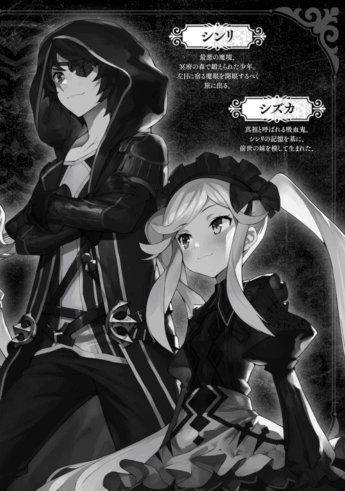
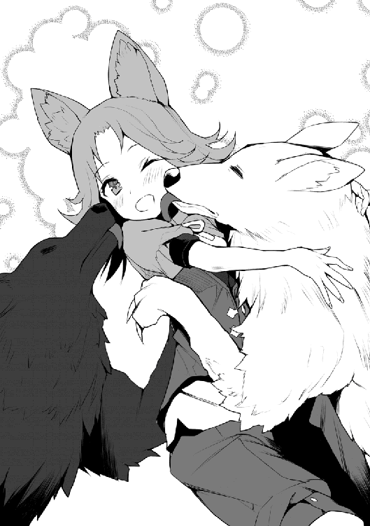
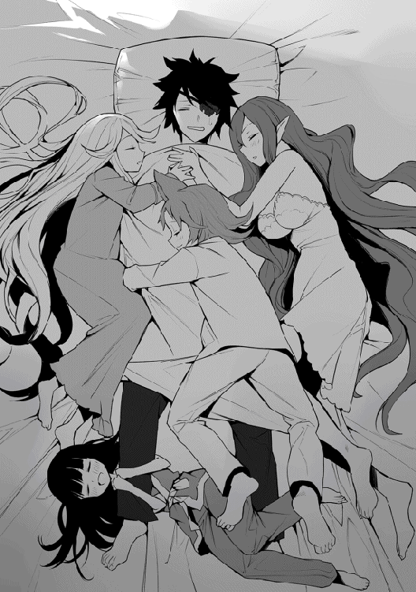

| 魔眼のご主人様。2 | |
| 黒森白兎 | |
| TOブックス (2017) | |
魔眼の開眼を目指す漆黒の王シンリとその一行。彼らは滞在するセイナン市で偶然にも紅の女帝と呼ばれる伝説のエルフと出会う。一方で、街へは暴虐の豚皇帝ことオークエンペラーがかつてない規模の大軍勢を率いて迫っていた。漆黒の王VS紅の女帝VS暴虐の豚皇帝、史上最悪の戦いが今始まる！ 漆黒の王が放つチーレム・ピカレスク・ファンタジー第２弾！
illust.がおう
design.AFTERGLOW

プロローグ
「ねえ、森の外には師匠以外にもたくさんエルフがいるの？」
それは、俺がまだこの冥府の森に来て間もない頃の話。
その時の俺は師匠となった彼女、アストレイアが作ったという切り出した木々を蔓などで無理矢理つなぎ合わせたような、不恰好なベッドの上で二人並んで横になっていた。
身体はまだ十歳だが、精神的には前世で事故に遭った十五歳に近いこの俺が、神がかったほどに美しいエルフの女性と一緒に寝るのには、青少年的な意味でかなりの抵抗があった。だが、自然と共生し、悪く言えば生活環境を全く気にしない彼女の住居であるこの洞窟には、ここ以外に寝る場所というものが存在しないのだ。
......そう。望んだのではなくてこれは仕方のないことなのだ。うん、そうそう。
「んん......これは一応他種族には極秘なんだがね。まあ、シンリならいいか。確かに幾つかの氏族がいるよ。でも君が森を出てもそうそうお目にかかれないんじゃないかな」
「なんで？ あ！ やっぱりラノベみたいに森とか隠れ里とかに隠れているとか？」
「ふふふ。転生した、なんて話を聞かされた時には、にわかには信じ難い話だったが......。いやはや博識なんだね。らのべってのは知らないけど概ね正解だよ。シンリのいたニホンって世界には、やっぱりエルフがいたのかい？」
俺は今後、彼女の助けなしでこの森で生き抜くのは難しいだろう。そこで、彼女を信頼している証として自身の境遇や過去、そして魔眼の件を含めた全てをこの時にはすでに打ち明けてあったのだ。
「実際にエルフはいなかったよ。アニメとかラノベの中だけかな」
「ふふ、よくわからないが面白いものだね。ああ、話を戻せば私の知る限り三つくらいの氏族の里があったはずだよ。そこはさっきシンリが言ったように結界で隠された深い深い森の中だ」
「じゃあじゃあ、やっぱりそこで世界樹とかって巨木を守っていたりするのかな？」
「世界樹ね......それはまた素敵な名前だ。でもそうだね、結界樹って大木なら里に数本植えられていたよ。でも、それを守るってのは少し違うかな。実際はその樹々の力によって守られているという方が正しいね」
彼女が言うには、エルフはとても弱い生き物であるらしい。だが、魔力は他種族よりも多くて、多彩な魔法を操り、弓や剣技、武術に関しても、人の何倍もの寿命を使って鍛錬することが出来る彼らが人間に戦闘力で劣るとは考えられない。
彼女が言うここでの弱いとは、もっと根本的な身体的欠陥のこと。
エルフの肉体は外部の『汚れ』に弱く、その影響による病気などにかかりやすいのだ。
そのためにエルフの生活圏には、自らの育つ環境を常に浄化する力を持つ結界樹が必要不可欠なのである。
「じゃあ師匠はどうして平気なの？」
「私はハイエルフだから、普通のエルフよりは耐性が高いってだけで、決して平気なわけじゃないよ」
里を出たエルフは、定期的に自らに浄化の魔法をかけて身についた汚れを落とさなければならないらしい。
それを怠れば病によって死ぬことも少なくなく。そんな死の危険を冒してまで森を出るのは浄化魔法が使える一部の変わり者だけだということだ。
......じゃあ、師匠って変わり者なんだ。まあ、そうじゃないと冥府の森でなんか暮らしてないだろうけど。
「ん？ 何か言ったかい？」
「イエナニモイッテマセン」
......笑顔が恐いよ師匠。
「じゃあ、森から出たエルフでは師匠が一番の有名人なんだね」
「......人間の社会では一応そうかも。ただまあ、逆にエルフの里の中でよく耳にした名ってのもあるよ」
「へえー、エルフの里の有名人かぁ。どんな人だった？」
「その子は、私とは世代も里も違うから会ったことはないんだ。だけどよく耳にしたよ『紅の女帝』の名は......」
第一章 鍛治工房の幼女？
「ななな、なんだ！ そんなに見つめられると照れてしまうではないか」
目の前で頬を染めながらあたふたとしている女性は、エレナ。
彼女は、俺たちが今滞在しているセイナン市冒険者ギルドの支店長である。
先日のミノタウラウノスの洞窟での一件で呼び出された俺たちは、彼女からその件に関する説明を受けているところだ。
人とエルフとの間に生まれたハーフエルフである彼女は、その残念な中身を知らなければ誰もが見惚れるほどの美人。
スレンダーでありながらもしっかりと女性的な膨らみもあり、しなやかさも兼ね備えた魅力的なスタイルを持つ彼女に、密かに想いを寄せている冒険者も少なくはない。
そんな彼女のトレードマークである赤い髪と瞳を見ていて、俺はふと、かつて師匠が言っていた言葉を思い出していたのだ。
「だ、黙られるとかえって恥ずかしくなってくるぞ。ま、まあ私の身も心もすでに捧げる覚悟だし、なな、なんたって私のご主人さ......」
「シンリさん、うちのギルマスで遊ぶのはその辺で」
「お兄様、ぎるてぃ」
「......待て待て待て、俺は何もしてないだろう？」
俺は師匠との会話を思い出していただけなのに、すっかりエレナに意地悪をしたみたいに言われてしまった......まったく理不尽な話だ。
ちなみに今言ったのは、エレナの秘書をするミリアと妹のシズカである。
アイリとツバキは話題についていけずにキョトンとしている。
うん、二人はそのままでいい。どうかいつまでもシズカには毒されないでいて欲しいもんだね。
「ゴホン。ま、まあ話を戻そう。つまりは例のココア・シーガレットとその配下だが、こいつらが四災悪とその部下であることが明らかになった。これでシンリ殿たちは四災悪を二人も討ち取ったことになるな！」
「いや、今回ココアを倒したのはエレナとミリアだろ？」
俺たちが洞窟の最奥にいた時、入り口付近で魔法を制御していたのがココアとその配下。
最高幹部の側近だけあってそこそこの手練れが十名ほどいたはずなのだが、それら全てをこの二人だけで制圧してしまったらしい。流石は元ＡとＢ級冒険者のコンビである。
「あいつらは一度シンリ殿たちが捕縛していただろう。逃したのはこちらの手落ちだ。私たちは自分の尻ぬぐいをしたに過ぎん」
そこまでエレナが言ったところで、今いる支店長室の扉がノックされ、職員の女性が預けていた俺たちのギルドカードを持ってきた。受け取ったミリアの手によって、それはすぐに各自に返される。
「はあ、またランクが上がってるんだが......」
確認した俺たち四人のギルドカード、そのランクはＣと書かれている。
「今回のは贔屓目なし。あくまで実績による評価ですからご安心を。ツバキさんに関しましては相当数のミノタウラウノスを討伐なさっていましたし、今回のギルドの不祥事に対する多大な貢献という部分を考慮いたしました」
確かに最初にココア率いる盗賊団を捕縛した時は、ツバキはいなかったからな。まあ今回の件は、ツバキ自身の訓練にもなったし丁度良かったってことか。
「はっはっは。まあ、シンリ殿とその面子なら、すぐに私やミリアを追い越すだろうな」
「フラグになるから余計なことを言うんじゃない！」
確かに異世界もので主人公のランクがとんとん拍子に上がるのはテンプレだけど、それにしても早すぎだろう。
「ところで、ミノタウラウノスのツノはクエスト分で受領いたしましたが、肉や皮はどうされるおつもりですか？ 確かに高級食材として人気がありますが、マジックバッグに保管するにも限度があるでしょうし......」
ミリアが言っているのは鮮度。つまりは腐ってしまうのではないかと心配しているのだろう。一般的なマジックバッグは、外より緩やかではあるが内部でも時間が経過する。俺の魔眼の中のように完全に時間が止まるわけではないのだ。
それに俺は、アイリやツバキが倒したミノタウラウノスを片っ端から魔眼に収納して持ち帰ったので、その数はかなりの量になっていた。魔眼を知らないミリアは、それらが無駄になることを気にして助言してくれているのだ。
「ああ、それなら宿で振舞ってもらおうかと。あと知人にも分けるつもりですから大丈夫でしょう。よかったら、お二人にもおすそ分けしますよ」
「おお、それはありがたい！ ミリア、今夜は慰労も兼ねて職員集めて焼肉だな！」
「はあ、明日の業務に差し支えない程度にしてよねエレナ。じゃあシンリさん、帰りに下の倉庫にお願い出来ます？ 受付の娘には話しておきますので」
「ええ、もちろん」
焼肉焼肉と口遊みながら浮かれているエレナと、手帳を片手に何やら「鉄板は」とか「野菜はこれくらい」とかブツブツと冷静に準備を始めるミリア。性格は真逆だが、この二人本当に息ぴったりなんだよなあ。
すっかり今夜の焼肉パーティで頭がいっぱいになった二人に声をかけて、俺たちは一階に降りて行った。
まだ、ミリアからの連絡は来ていなかったので事情を話し、上位個体を二頭分倉庫に預けた。通常個体よりかなり大きいが、今回の件では受付嬢のカタリナをはじめ職員の人達にも心配と迷惑をかけたようなので、その詫びとお礼の意味も込めて奮発したのだ。
まだ、捌いていない状態の魔物の死体を見て「美味しそう」と呟いてしまうあたり、本当にこっちの世界の女性は逞しい。
エレナ同様、焼肉焼肉と大はしゃぎのギルド職員に見送られ、俺たちはギルドを後にした。
◆
「さて、待たせてすまなかったねアイリ。今日は武器屋に新しい槍を買いに行こう」
ミノタウラウノスの洞窟の一件から今日で二日。王との戦いで槍が壊れてしまったアイリは、明らかにずっと落ち込んでいる。
幾度か俺の手で修理して欲しいとも頼まれたが、砕けた穂先に代わる材料もないし、何より俺は完全に素人だ。今後のためにも、やはりアイリにはちゃんとした職人の手による、しっかりとした武器を使って欲しい。
「こんにちは。ゼフさんはいる？」
アイリからは新しい槍を購入するのによい返事はないのだが、とりあえず馴染みのゼフの店を訪ねてみることにした。
「いらっしゃいませ。確か......シンリさんでしたわよね。残念ですが......」
店先で掃除をしていた従業員の女性を見つけ、ゼフを呼んでもらおうとしたのだが、生憎と昨日から行商に出掛けてしまったらしい。
仕方なく店内の武器を見せてもらったのだが、ここの武器は村の自警団や村々を拠点とする下位の冒険者向けなので安いし悪くもないのだが、それだけだ。これといった物は置いてなかった。
「セイナン市に武器の専門店はありませんか？」
「んんー、この街ではどこもウチと似たり寄ったりで、それだけ専門ってのはないですね。だから冒険者の方々は王都の武器屋で買うか、直接工房に出向いて作ってもらうみたいですけど」
「王都か、遠いな。ではどこか工房を教えてもらえませんか？」
「ええ、それでしたらウチがよく頼んでいるところをお教えしましょう。ゼフ様の恩人であれば無下に断られることもないでしょうから」
そう言って彼女はゼフの店が贔屓にしている工房を教えてくれた。
その工房で作られる武器は丈夫で使い易くて壊れにくい。王都の兵士にも人気のある腕のいい職人らしい。
教えてもらうだけというのも心苦しいので、ナイフや回復薬などを数点購入して店を出た。
◆
教えられた通りにセイナン市の西地区を目指すと徐々に街の雰囲気が変わり始める。
響く様々な作業の音。建屋から昇る煙。風に混じる革や金属、よく分からない薬品などの匂い。
ここ西地区は通称『職人区』と呼ばれ、大小そして職種も様々な工房がいくつも軒を連ねている。
その中でも一際大きく耳に届く甲高い金属音が鳴り響く一角に、ゼフの店で教えられた目的の工房が建っていた。
「お、ここみたいだな。すみま............っ！」
「この馬鹿もんがああぁぁぁぁーっ！」
俺の言葉は、その激し過ぎる怒鳴り声と行動によって遮られた。
目の前のドアにドスンという激しい衝突音が鳴り、瞬間それはバキバキと音を立てて砕け散る。
俺は、木片が後ろにいたシズカらに当たらぬよう立ち塞がり、そしてその衝突音の原因と思われる何かを優しく受け止めた。
「いってて......ってあれ？ あんまり痛くな......なあっ！」
「大丈夫？」
受け止めたのは小さな幼女......そうとしか表現できないほどに背が低い女性であった。なぜこのような言い回しになったかというと彼女の勝気な顔つきと明らかに幼児と呼ぶには逞し過ぎる二の腕が原因である。
俺の腕にちょうどお姫様抱っこされた形の彼女は、自分の状況を知ると耳まで真っ赤になりジタバタともがき始めた。
「よっと......本当に大丈夫？ 怪我はない？」
「だだだだだ大丈夫ぅーだ......です......わよ......」
地面に下ろして立ち上がらせると、彼女は恥ずかしそうに顔を逸らしながらモジモジと身をくねらせている。「初めて抱かれた......」などと小さな声で呟いているが、字面的に余計な火種になりそうなので聞かなかったことにしよう。
彼女の身長は、おそらく一メートルほどしかない。ドレッドヘアのように細かく縮れた茶色い髪を後ろでひとつにまとめているが、それはまるで破裂した花火のようだ。火を扱う際に使うのか額にはゴーグルのような物を着け、着ている衣装はなぜか祭りの法被を連想させる。
俺は彼女に悟られぬよう魔眼【嫉妬眼】を発動させた。
（なるほど、彼女はドワーフだったのか。しかも年上......だな）
この【嫉妬眼】は、俺の『知りたい』という欲求に応えて発現したもの。今俺の左目には、ゲームのステータス画面のようなものが浮かび上がり、彼女の情報を俺に教えている。
「まだフラフラしてんのかこの役立たず！ そんなんで間に合うと思ってんのか、この馬鹿弟子がっ！」
工房の奥から再びそんな怒声が聞こえてくると、モジモジしていた彼女はびくんと反応して背筋を伸ばし目を見開いた。
俺たちの目の前で怒鳴られたのが恥ずかしかったのだろうか、彼女はさらに顔を真っ赤に染めると目の端に涙を浮かべて工房内をキッと睨みつける。
「アタイが絶対なんとかしてやる！ 黙って待ってろ馬鹿師匠！ バーカ！ バーカ！ 師匠のうんこたれぇぇーっ！」
彼女は年頃の女性とはとても思えないほど幼稚な悪態を吐くと、戸口に立てかけてあった両手斧を握りしめ脱兎の如く走り去って行く。
「てめえ、もういっぺん言ってみやがれ！」
ドカドカと足音を響かせながら出て来たのは、先ほどからの怒声の主。身長は彼女より少し高い程度で百二十センチほど。白髪交じりのゴワゴワした感じの髪を後ろに流し、彼女とお揃いのゴーグル、法被のような衣装を纏った筋肉質な髭もじゃのおっさんである。
「......えっと」
「なんでいっ！ っと、いけねえ。客人かい？」
俺が話しかけると、彼は手に持った金槌を振り上げて振り返った。さっきの彼女でないとわかると、それはすぐに下ろしてくれたが、顔つきは未だに苛ついたままだ。
「はじめまして。ゼフさんの店でこちらを紹介してもらいました。武器の製作を......」
「......ああ、無理だな！」
俺の言葉を遮るように彼は答えた。
「ゼフの旦那にゃ世話になってる。その口利きなら力になりてえが......」
そう言って彼は、さっきの女性が走り去った方向を見つめた。その表情には僅かな寂しさを感じる。
「何があったんですか？」
「他人様にゃあ関係ないこった。この話は終いだ。とっとと帰ってくんな！」
再び険しい表情になった彼は、そう言って残骸と化した扉を乱暴に閉めて中へと消えた。すぐにその扉はボロボロと崩れ落ち、戸口はポッカリと開いたままになる。そのせいで中は丸見えなのだが、これ以上声をかけても相手にされないだろうな。
「はあ......出直すか？」
「工房と名のつく場所は追い返されるのがテンプレなのかしら......なんだか面白くないですわ！」
「............」
「主様を追い返すとは......むぅ、無礼」
落ち込んでるアイリに早く武器を持たせてあげたかったのだが、これ以上は話がこじれるだけだ。今日のところは一旦諦めることにして、俺たちは工房を後にした。
◆
あれから一旦宿に戻ったが、それでもまだ昼前だったので、ギルド窓口で受注の必要がない通称『銀一』クエストをこなすことに決めた。これは常設依頼でランクにかかわらず誰でも受けられる。いずれも一単位あたり銀貨一枚の報酬が得られるクエストのことだ。
スライムが棲息する沼地は、以前やり過ぎて俺たちは立ち入り禁止なので、狙いはゴブリンの森か草原での薬草採取である。
「ちょっとキミ達！」
門から街の外へ出ようとした俺たちを聞き慣れない声が呼び止める。
「......えっと、俺たちのこと？」
「当たり前さ！ キミ達以外に誰がいるって言うのさ！」
偉そうに腰に手を当て、胸当てを着けた胸を反り返りそうなほど張っている冒険者風の女性。
「喜ぶがいい！ ボクはキミ達に身に余る栄誉を授け......」
「興味ないです。じゃっ！」
「......って、ちょっと！」
誰かは知らないが、とりあえずこいつが面倒なのは理解した。俺たちは走って門に行き門番にギルドカードを見せると、急いでその場から離れることにする。後ろから彼女がキャンキャンと何か叫んでいたようだが......無視だ、無視。
二十分ほど走ると以前も来たゴブリンがよく繁殖するという森に到着した。ちなみに通常馬で一時間弱かかる道程である。
「さあ、ひと狩り行きますわよ！」
「......シズカ、お前は留守番だ」
「そんなぁ......」
幸運にも冒険者ランクは俺たちと並んだツバキだが、冥府の森で鍛えてきたアイリ達に比べるとその実力はまだまだ物足りない。
そこで、とりあえず人目に付かない森の中でアイリと模擬戦をしつつ、ゴブリンの姿を見かけたら倒してもらうことにしたのだ。まあ、言ってしまえば、ゴブリン討伐はついでである。
「それじゃあシンリ様、行ってきますね」
コクコク！
「ああ、最低限の警戒は怠らないで。それに、アイリはいつもと勝手が違うから気をつけるんだよ」
そう言って森に入って行く二人を見送った。アイリにはゼフの店で買っておいた短剣を渡してある。
冥府の森での修行中。あの槍を作って渡すまで、彼女の主武器は短剣だった。しかし俺たち基準でだが彼女の動きは遅く、短い得物ではなかなか攻撃を当てられない。だからと言って普通の剣を持たせようにも、ミスティのチョーカーで緩和されているとはいえ、『呪い』というハンデのある彼女にそれは重すぎて、思うように振り回せなかったのだ。
そうして考えた末に俺が作って与えたのがあの槍である。木製の柄は軽く、長い間合いは彼女の遅さを補うのと同時に敵に対しての牽制にもなり、とても相性が良かったのだ。
「クウゥーッ！ お兄サマータイムッ！」
「......アホか」
二人が去った森の中で木に寄りかかり座る俺。その膝を枕にしてご機嫌な我が愚妹シズカ。
彼女曰く、避けては通れないテンプレだというゴブリン狩りを禁止した代償として、俺が膝枕をする羽目になっていた。
俺の足を枕に横になったシズカはテンションが上がりすぎたのか、どうやらおかしなスイッチが入っているようだ。俺の太ももに頬ずりをしながら時折奇声や、妙なことを口走っている。
......まあ、最近では完全に二人きりになることもないので、たまにはこうして甘えさせてやるのもいいだろう。
「......ィャァァァー！」
「......お兄様っ！」
「ああ、聞こえた。急ごう！」
それから半刻ほど経った頃、アイリ達が入って行ったのとは反対側の森の端辺りから、突然悲鳴のようなものが聞こえた。すぐに身を起こした俺とシズカは、武器を手に声がした方へと走り出す。
「あれですわね」
「ん......あの人は？」
俺たちが視界に捉えたのは、森の中を駆ける小さな人影。俺は、その姿に見覚えがあった。
その人影を後ろから追いかけて来ているのは、巨体に豚の頭を持つ魔物、オーク。しかもそれが三体である。
「痛ぁっ！」
追われる小さな人影が枯れ枝に足を取られ、前転するように派手に転んだ。その拍子に手にしていた両手斧が茂みに飛んで見えなくなってしまう。
武器を失ったその様子を嘲笑うようにフゴフゴと鼻を鳴らしながら、三体のオークがジリジリと間合いを詰めた。その手には、それぞれ太い棍棒のような武器が握られている。
「いやああぁぁぁーっ！」
獲物を取り囲んだオークが棍棒を振り上げると、森に再び甲高い叫び声が響く。
だが次の瞬間......そこを一陣の風が走り抜けた。するとオーク達のその棍棒は振り下ろされることなく、そのまま彼らの背後に腕ごとぼとりと地面に落ちる......。
まずは武器を奪うため、着くと同時に奴らの腕を切り飛ばした俺は、すぐに反転し移動してオークの前に立ち塞がった。
「よくもお兄様とのイチャラブタイムを邪魔してくれたわね、この豚がぁっ！」
それと同時に端に立つオークの巨体がシズカのハンマーにより鈍い音と血飛沫を残して吹き飛んでいく。
「燃やし尽くせ、黒炎ッ！」
そして俺は、唯一完璧に制御出来る魔法で黒い炎を召喚し、目の前の残る二体のオークに向けてそれを放った。
着弾するとそれは瞬く間にオークの全身を包み、その身をみるみる焼き尽くしていく。その勢いは通常の炎とは比べ物にならないほど強力だが、対象を指定して制御しているので森に燃え広がることは絶対にない。
黒炎が消え、さっきまでオークであったモノがその場で消し炭を残すのみになると、俺は背後を振り返る。
「えっと......もう大丈夫だよ」
「......は、はえ？......アタイ助かっ............」
「お、おい！」
助かったのだと安心して緊張の糸が途切れたのだろう。彼女はそこでぐったりと意識を失った......。
「お兄様、そこにこの斧が落ちてましたわ......って、あらこの子は武器工房の？」
そう、俺とシズカの前で気絶して横になっているのは、さっき工房で幼稚な悪態を吐いて走り去ったドワーフの女性だったのだ。
◆
あれからアイリ達と合流して宿へと戻った。ベッドには俺がおんぶして連れ帰った、気絶したあのドワーフの女性が眠っている。
「......う、ううん。ここは？ 知らない天井だ......」
「ハッ！ まさか本当にそのセリフを言う人がいたなんて！」
「......ヒィッ！」
「......コラ、シズカ落ち着け。大丈夫、ここはセイナン市にある宿屋だよ」
俺はどこかで聞いたような彼女の第一声に食いついて、やや興奮気味なシズカを押し退け声をかけた。
「スンスン......ッ！ この香りはもしかしてここは麦の香亭......あっ！」
今はもう夕方。パン焼き窯の火は落ちているものの、ここ麦の香亭には下のパン屋から美味しそうなパンの香りが漂ってくる。匂いでそれに気づいた彼女のお腹が、クウゥと可愛らしい音を立てて会話を遮った。
「起きられるようなら下に降りて食事にしようか？」
恥ずかしそうに頷いた彼女と共に、俺たちは下の食堂に向かった。
「アタ......わ、私はプレタといいます。助けてもらってありがとうございました！」
「い、いや気にしないでいいから......あの、逆に頼むから頭を上げてくれ」
「......はあ？」
食後、彼女はそう言って頭を深々と下げてきた。年上だが、種族的に身体の小さな彼女に頭を下げさせている絵面は、幼女を苛めているようでこちらの精神的にキツいものがあるのだ。
「さっき俺たちは、工房を訪ねたんだけど......覚えてる？」
「......ああ！ あのお姫様抱っ......こぉぉ！」
工房での出会いを思い出したのか、プレタの顔がみるみる赤くなる。
「あれから武器の製作をお願いしたんだけど断られたんだ。何か事情があるみたいだけど......」
そう言うと、彼女の顔がさっきとは正反対にみるみる青くなっていく。
「俺たちは正直、何とかして武器の製作を頼みたい。話してみないか？ もしかしたら力になれるかも知れないよ？」
俯き、しばらく考え込んでいるプレタ。冒険者でもない彼女が自ら武器を手に森に入らなければならなかったのは、余程の事情、それもかなり切羽詰まっているからなのだろう。
結局彼女は、ポツリポツリとその理由を悲しげに語り始めた......。
さっきの工房の名は『ザレク武器工房』といい、その名の示す通り、工房主のザレクと彼の娘であるプレタとで武具の製作を中心に請け負っている。
ザレクの打つ武器は、見た目の派手さこそないものの、その品質はまさに質実剛健。使い手の手によく馴染み、しかも丈夫で壊れ難い。良き相棒として長く使用に耐え得るその品質の高さから、王都などでも目の肥えた玄人中心に人気が高いらしい。
そんなザレクの武具の強さの秘密の一端は、実は使用する秘伝の調合薬にあるのだそうだ。
しかし、補充用として新しく作った調合薬を運んでいたプレタがうっかり転び、その拍子に調合薬を全て泥水の中にぶちまけてしまった。もちろん無くなれば補充する必要がある為、材料さえ揃えばまた作ることは可能だ。殆どの薬材は在庫もしてあり入手も出来る。
だが運悪く、最も入手の難しい材料がプレタがこぼした調合薬の分で使い切ってしまったところだった。
それ以降、ギルドにも散々報酬を上乗せしながら素材の調達依頼を出しているのだが未だ何の音沙汰も無い。
しかも、一週間後には定期的に購入してくれている王都の守備軍に納入する二十本の剣を、王都への定期便に渡さなければ、その契約自体が打ち切りになるかも知れないのだ。
「ア、アタイの......ひっぐ、アダイのぜいで工房が......うう、グス」
そこまで話したところで、ついに我慢出来ずにプレタは泣き出してしまった。
「......そう、それでプレタは一人で森に入っていたのね」
「ということは、その素材は魔物から取れるんですか？」
シズカとアイリがプレタの肩に手を置き言葉をかける。
「森......魔物減少。異変？」
首をこくんと傾げながらツバキの言っているのは、森の状況についてだろう。彼女はアイリとの訓練中、出会ったゴブリンを討伐してくる予定であった。ところが、以前はあれほどゴブリンが現れたにもかかわらず、今回はその姿をまったく見かけなかったらしいのだ。
代わりに多く見かけたのが豚顔の魔物、つまりはプレタを襲っていたのと同様のオークであったらしい。ちなみに、オークは今回の討伐対象ではなかったので無視してきたとのことだった。
「......ところで、プレタが探していたのは何の魔物なんだい？」
「そうね。そもそも、貴女一人で倒せるような魔物だったのかしら？」
「それは......ううぅ......」
気まずそうな表情で俯いてしまうプレタ。おそらくは、それに出会ったとしても倒せる自信などはなかったのだろう。
「あっきれた！ 貴女、ワタクシとお兄様が駆けつけるのがあと少し遅れていたら、あの豚どもにくっころ！（くっひと思いに殺せ！ と言いたくなるような酷い扱い）な目に遭っていたかもしれないんですわよ？」
「まあ、シズカの言葉は無視していいとしてもだ。プレタがそんな無茶をして命を失えば、きっとザレクさんは今以上に苦しむことになる。今後はもっと考えて行動することだ」
秘伝の調合薬や仕事は大事だろうが、それは家族の命と同価値であるはずはない。売り言葉に買い言葉......それで短絡的に飛び出してきたことを彼女自身も後悔していたのだろう。プレタは素直に頷いた。
「それで......どんな魔物が？」
「......大鬼」
「は？」
「いや、だからオーガです！ ツノの生えた巨体の魔物の......」
「いや知ってる！ 知ってるけど......」
俺は、呆れて笑いたくなるのを堪え、彼女から目を逸らした。目が合ったシズカやアイリも、やれやれと言った様子で苦笑いを浮かべている。
「はあ、なんで工房で会った時に話してくれなかったんだ」
「え？ シンリさんさっきから何を言って......」
「オーガなら持ってる！」
「えっ？」
「だから、オーガなら一体丸ごと死体を持っていると言ってるんだ。このマジックバッグの中にね」
「..................ええええええええええっ！ ぎゃふんっ！」
驚き過ぎたのか、プレタは大きく仰け反るとそのまま椅子ごと後ろに倒れてしまった。本当はマジックバッグじゃなくて魔眼の中にあるのだが、まあそこは関係ないか。
「大丈夫？ でもこれで問題は解決したよね？」
「い、いやオーガですよ？ ここ最近は目撃情報も全くなくて、しかもＣ級以上の冒険者のパーティですら全滅させることがあるあのオーガなんですよ？」
手を差し伸べて体を起こしてあげると、彼女はとても信じられないといった様子で聞き直してくる。
......というか、そんな危険な魔物を一人で狩るつもりだったのか。本当によく無事に帰れたなプレタ。
「ああ、それで間違いないと思うぞ。ツノがあって体長は三メートル位あったからな」
「ほ、本当に......グス。よがっだ、これで......アダイは、ウワアァァーン！」
今度は、本当に安心して力が抜けてしまったのだろう。プレタはへなへなとその場に座り込むと、感極まって号泣しだしてしまった。
シズカ達になだめられ落ち着きを取り戻したプレタだったが、時間はすでに夜。それに昼間の喧嘩の後ではお互いに顔を合わせ辛いだろうということで、明日の朝には工房に戻ることを手紙で伝え、その日はプレタも麦の香亭に泊まった。
◆
翌朝、俺たちはプレタと共にザレクの工房へと向かった。
工房に着くと、プレタは父ザレクを呼びに中へと入り、俺たちは工房の裏手にある空き地にて二人を待つ。
「てめえ、朝帰りとはいいご身分だ......って、痛えな！ 朝っぱらからどこに引っ張って行こうってんだこの馬鹿弟子がっ！」
「うっせえ！ いいからさっさと歩けってんだ馬鹿師匠！」
戸口からそんな二人のやり取りが聞こえて来る。どうやら、あれがあの親娘の日常らしい......。
「早く！ ほら早くっ！」
「だから引っ張んなって言ってんだろうが！ こんな場所に。って、あんた方確か......先日の客人じゃねえですかい？」
俺たちの存在に気づいたザレク。その表情は険しく、かなり苛ついているようだ。
「師匠！ いいから目ん玉かっぽじってよく見ててよ！」
「では、少し離れていてくださいね」
そう言って、俺はさっき二人を待つ間に魔眼からマジックバッグに移し替えたオーガの死体をその場に取り出した。
ズシンという振動とともにオーガの巨体が空き地いっぱいに横たわる。
「お、おい......おいおいおいっ！ こいつぁ......」
突然のことに驚いてしばし立ち尽くしたザレクは、フラフラと引き寄せられるようにオーガの下へと歩み寄っていく。
「すげえな、この鮮度！ まるでたった今倒したみてえじゃねえか。しかも見事な体躯にこの立派な一本ヅノ！ これこれ、これがなきゃあ俺の薬は作れねえ！」
「シンリさん本当にすごいよ！ なんでどこにも傷み一つ無いのさ？ ずいぶん前に倒したって言って......ふが、ふぐぐぐ」
迂闊なことを言おうとしていたプレタの口を背後からそっとツバキが封じる。
......あ、いや手で塞いだだけだからね。暗殺的に封じたんじゃないよ。
「ふん、何やらそっちも訳ありなようだが......俺としちゃぁ、今は藁にでも縋り付きてえ！ 頼む、お客人！ このオーガを俺に譲っちゃあくれねえか？ 頼む、この通りだ！」
そう言ってザレクは、地面に額を押し当てた。
その姿を見たプレタも、ツバキの拘束を力づくで逃れると、ザレクの隣で頭を下げる。
「ちょ、ちょっと止めてくれ！ 余計な詮索をしないならこのオーガはプレタにあげるつもりだから！」
小柄な二人によるいわゆるダブル土下座である。これは、某空き地の土管でワンマンリサイタルを開けるクラスのいじめっ子レベルでなければ、逆にこっちが精神的なダメージを負いそうだ。今すぐに止めていただきたい。
「ほ、本当に貰っちまっていいんだな？」
「もちろんだ。でも、いつまでもその姿勢でいるなら考え直すけど？」
俺の言葉に反応して、土下座していた親娘はまるでシンクロしたように二人同時にすっくと立ち上がった。
「チッ、そうと決まれば時間が惜しい！ すまねえがすぐに取り掛からせてもらうぜ！」
そう言うとザレクは走って工房に戻り、様々な工具を手にして戻って来た。工具を掴んだ彼はすっかり職人の顔つきになり、ツノをはじめとした必要な部位を手際よく切り取っていく。
「馬鹿弟子！ てめえは地区長んとこ行ってこのこと知らせて来やがれ！ ここ数年お目にかかれなかった上物だってな！」
「わかった馬鹿師匠！」
プレタは、そう言うとどこかへと走って行ってしまった。
「............あれ？」
ザレクはすでに工房の中で何やら作業を始めたらしいし、プレタもいない。
となれば、俺たちがこのオーガの見張り番をしていなきゃならないのか......やれやれ。
◆
ドドドドドドドドドドドドドドドドドド......！
「シンリさーん！」
三十分ほど過ぎた頃、地響きと共に何やら怪しげな集団が駆けて来た。
その先頭で彼らを先導しているのは、どうやらプレタのようである。
各自、手に手に様々な工具を握りしめたその集団は、空き地に到着すると雪崩れ込むようにしてオーガの周りを取り囲んでいく。
「こ、こりゃあ見事だ！」
「ホントに、ホントにいいのかいプレタ？」
「この傷一つない皮ときたら......あはーん、たまらないわぁ！」
「この爪の立派なこと！ こんな上質なのオイラ使った事ねぇよ！」
「だいたいなんだ、この鮮度？ たった今仕留めたみたいじゃねえか？」
「この骨格の立派な事！ フォッフォッフォ、こりゃ加工のし甲斐があるわい」
彼らもまたオーガを待ち望んでいた職人たちなのだろう。彼らの手によってみるみる手際よく解体されていくオーガ。
「はじめまして。この職人区の地区長をしておりますリッペです。若き冒険者様」
職人たちにやや遅れて着いたのは、馬車や荷車を率いた集団。その中から白い立派な口髭を蓄えた、温和そうな紳士が近づいてきて俺に話しかける。
「はじめまして。俺はシンリ。こっちは仲間のシズカ、アイリ、ツバキです」
「あれほどのオーガを、しかも大した外傷も与えず討伐なさるとは......いやはやシンリ様のパーティは相当な実力者揃いのようですね」
「様はやめてください。たまたまですよ」
「お若いのに謙虚なお方だ。では、そういう事にいたしましょう。ご覧の通り、成体のオーガは様々な工房で余す所無く活用されている大変重要な素材です。ですがここ数年でオーガは、めっきりとその数を減らしてしまいました。森の深くに移動したのか、他の地へと渡ってしまったのかは定かではありません。しかし最近では目撃情報自体も皆無となり、皆もほとほと困り果てていたのです」
確かに、俺もあの夜偶然出会ったこのオーガ以外の個体は見かけてないな。本来ならオーガはそこそこ上位の魔物、それが縄張りを脅かされるなど考え難い。何か本当に生態系に異常でもあったのだろうか......。
「このオーガを提供してくださったシンリさんは、まさに職人区の救世主。本当にありがとうございました。私どもで何かお力になれることがありましたら、何なりとご相談ください」
そう言ってリッペは、深々と頭を下げる。物腰の柔らかな年配者に頭を下げられるのも、さっきとは逆の意味で精神的にキツイな。待てよ、リッペはこの区の責任者。彼からなら何か情報を得られるかも......。
「リッペさん、もしよければ馬車を売っている工房を紹介してもらえませんか？」
「ほう、馬車......ですか」
職人区に広く顔のきく彼なら、馬車を扱う工房も知っているはずだ。せっかくの機会なので彼に口をきいてもらえれば程度に考えていたのだが......。
「ふむ。わかりました！ その馬車はこのリッペが必ずご準備いたしましょう。ええ、これは燃えてきました！」
「......え、あのぅ？」
さっきまでの温和な感じは何処へやら......。俺の話を聞いたリッペは、途端に今オーガを解体している職人連中と同じ顔つきになり、両の拳を握りしめて何やらブツブツと計画を立て始めた。
......やだ怖い、この老紳士。結局彼も本質はそちら側の人間なわけか。
「シンリさんは、ザレクに武器の製作を頼むおつもりだとか。ならば、その完成に出来るだけ納期を合わせましょう。そうと決まれば急がねば！ 私はこれにて失礼させてもらいますよ」
「え、いや。あのリッペさん？」
俺のその声はもはや彼には届かず、リッペは足早に空き地を去っていった。
「シンリさん！」
リッペが立ち去ると、先ほどからこちらの様子をチラチラと伺っていたプレタが近寄ってきた。
「シンリさん達のおかげで、本当に助かりました！ ありがとうございました！」
そう言って頭を下げるプレタ。
「昨日も話したけど、俺たちはアイリの武器を作ってもらいたいっていう目的があっての事だから、頭を下げるのはこれで最後にしてくれ」
「は、はい！」
「それにプレタには、今は別にやらなきゃいけない事があるんじゃないのかい？」
すでに原型を留めぬ程に解体されたオーガ。そんな空き地の喧騒とは別にザレクの工房からは煙が立ち昇り、休みなく様々な音が鳴り響いている。立ち上がったプレタもようやくそれに気づいたようだ。
「シンリさん、アタイ行くよ！」
「ああ、しっかり親父さんを手伝っておいで」
「うん！」
そう言って彼女もまた職人の顔つきになり、工房へと入っていく。その背中は、昨日までの幼女のように見える頼りないものではなく、ひとりの職人の頼もしく大きなものに見えた......。
第二章 我が儘なお嬢様
「さてシンリ殿、呼び出された理由がおわかりかな？」
翌朝、宿に使いが来て急遽ギルドへと呼び出された俺たちは、すでに定番となりつつある支店長室へと通されていた。
いつもと違い、やや落ち着いた雰囲気のエレナからかけられた第一声がこれである。
「いや、何がなんだか......」
「......はぁ」
呆れ顔で溜め息を吐くエレナは、自分の執務机の上から書類の束を手にすると、それを俺たちの前にあるテーブルの上にドサリと置いた。
「これが何かわかるかい？」
目の前に置かれた書類の束。その一枚を手にとって見ると、それは一階の掲示板で見慣れたクエストの依頼書であった。
「見てくれたまえ、この取り消された依頼書の山を！ これらは全てある魔物の素材を求めたものだったんだが......」
ギクリという擬音が聞こえそうなほど、俺たち全員がエレナの言葉に揃ってビクッと反応する。
「それがどうだ？ とある冒険者が気前よくその魔物をポンと提供してくれたらしいよ。その魔物は近年全く見かけなくなった貴重なもので、依頼の報酬額もずいぶん高くなっていたにもかかわらず、だっ！」
言葉尻を強調しながら、エレナはキッと俺を睨みつける。一瞬俺が怯んだのが嬉しかったのか、彼女はニヤリと悪戯な笑みを浮かべるとさらに続けた。
「なあ、誰だろうな？ 貴重なオーガをあっさり入手して、それをポンとタダで提供した人は？ そんな聖人みたいな人が本当にいるのかねシンリ殿？ いたら是非会ってみたいものだよ！」
「わかった！ わかったエレナ、俺の負けだ。勝手なことをして悪かった！」
勝ち誇ったエレナの顔には、なんだかイラつかされるが、確かにこちらに非があるのは間違いない。俺が素直に詫びを入れると、彼女は二、三度首を振り、真面目な顔をして向き直った。
「いや、すまない。別にシンリ殿に意地悪をしたい訳ではないのだ。だが、考えてみてほしい......仮に今回の依頼を正式にギルドで受注したパーティがいたとしよう。彼らが必死の思いでオーガを探し出し、少なくない犠牲を負いながらも調達に成功して帰ってくる。しかし、街に戻るとすでに依頼は取り下げられ彼らには報酬は一切出ない。そうなれば......わかるだろう？」
「確かに......俺が軽率だったよ。迷惑をかけた、すまない」
そう言って頭を下げた俺の頬に柔らかなエレナの手のひらが優しく添えられ、ゆっくりと俺の顔を上げさせる。
「シンリ殿もすでにギルド所属の冒険者。今後はその辺りの事も考えて欲しい。それにな......私個人としては、少しでもシンリ殿の力になりたいんだ。もっと......もっと私を頼ってくれ」
「......ぎるてぃ！」
「エレナさん、シンリ様に近すぎませんか？」
「むぅ......排除？」
傍目には、俺の顔を引き寄せエレナが口づけを迫っているように見える状況。それにしびれを切らした三人から三様の指摘が入ると、エレナも急に恥ずかしくなったのか、顔を真っ赤にしながらすぐに離れて執務机の方に戻っていった。
「ゴホン......まあ、この私が性奴隷になろうというのを拒むほど無欲なシンリ殿だ。クエストの報酬などに大した興味もなかったのだろう。君のそういう部分も、私は気に入っているんだがね。しかし、今後無欲でいるのが必ずしも美徳ではない事もあるだろう。それも覚えておくといい」
「わかった。ありがとうエレナ」
「うむ。では、ミリア！」
エレナが呼びかけると、ドアの前で待機していたのか、ミリアがカートを押して入ってくる。
彼女は、皆にいつもの美味しいお茶を配り終えると、俺たちのギルドカードを受け取って再び退室していった。
「昨夜、職人区地区長のリッペ氏が訪ねて来てな。話は聞いてるんだ。色々思う部分はあったが、シンリ殿の名が出たので不思議とすべて納得ができたよ。はっはっは」
「............」
「彼が言うには、職人区の総意として、この依頼はすべてギルド経由で受けそして達成した、という形にして欲しいと頼まれた。なんでも近年稀に見るほどの立派なオーガを空き地にどんと置いて、誰でも好きに持って行けとばかりの大盤振る舞い。しかも当人は特に名を売ることもせず、知らぬ間に姿を消していたそうだな。どこのおとぎ話の主人公だよ！ ぷっ、くっくっく」
「......失礼します」
エレナが楽しそうに笑っていると、ミリアがカードを持って戻ってきた。
「今回の依頼達成は、ランクアップの対象にはしておりません。これが今回の件に関するギルドからのペナルティだと考えてください」
「はい」
ミリアの説明を受け、全員がＣランクのままのギルドカードを確認する。
「報酬に関しては、依頼者たちの希望もありそのまま支払われる事になります。それぞれがかなり高額の依頼になっていましたので、かなりの額になってますよ」
そう言って彼女は、カートごと俺の横へと差し出した。俺は特に中身を確認することなく、そのままマジックバッグに放り込む。金額を聞きもせず、中身の確認もしない俺にエレナとミリアから呆れたような視線が向けられたが、まあ気にしたら負けだな。
「......そういえば、リッペ氏の話ではゴブリンの森でプレタ嬢を助けられたとか。だが、ゴブリンの討伐記録が誰のカードにも残っていなかったのはどういう訳だい？」
ミリアから提出された、先ほど確認した俺たちのカードの記載内容に目を通したエレナが何気なく問いかける。
「ああ、いなかったらしいんだよなぁ」
「はい。ツバキちゃんと訓練中にも周囲は確認していましたがまったく......」
コクコク。
俺が答えると、アイリとツバキもそれに続いた。何も成果がなかったのが悔しいのだろう。二人ともやや落ち込んでいるように見える。
「......ん？ シンリ殿はオークを倒しているな。それにシズカ嬢も」
「ああ、アイリ達もわざと倒さなかっただけで、オークは何体か見かけたらしいぞ」
「わざと」の部分を強調しながらそう言うと、アイリとツバキもそうだそうだとばかりに何度も頷く。
「あの森に......オークだと？ ミリア」
「ええ、少し調べてみる必要がありそうね」
そこでミリアが退室していくと、俺たちもエレナに声をかけて支店長室を出る。
何気ない会話の中でエレナ達の中に生じた大きな不安に、この時の俺はまだ何も気づかずにいた......。
◆
「ちょっと待ちなよ！」
階下に降りギルドを出た俺たちを、先日も聞いたような声が呼び止める。
「またか......で、何か？」
面倒臭そうに応えた俺の態度に一瞬怒りの表情を浮かべた彼女は、胸に手を当て深呼吸すると、努めて冷静に話を続ける。
「まさか、ボク達のこと覚えてないとか言わないよね？」
「ん？ いや、そう言われてもなぁ」
俺たちの前にいるのは、三人組の男女。軽鎧や剣などの武装を身に付けているので、恐らくは冒険者なのだろう。
話しかけてきているのは、見た目小柄な女性。ライトブラウンの長い髪を頭の後ろで編み込んで纏め、育ちの良さそうな血色のいい白い肌に勝ち気な瞳。胸部の装甲をはじめとして、各部に薄い金属板が取り付けられた軽鎧。スカートの様な衣裳に編み上げのロングブーツ。身に付ける装備は、いずれも一介の冒険者が持つようなそれではないと、一目でわかる高級品ばかりである。
「シンリ様、この人たちはシイバ村の......」
「シイバ村？ ああ、アレか」
「......何だかスゴく嫌な思い出し方をされている気がするけど......まあいいよ」
アイリが気まずそうに言ってきたのには理由があった。この冒険者たちは、シイバ村までゼフの商隊を護衛してきた者たちで、セイナン市への帰路では、俺たちと交代で護衛の任に就いていたのだ。
村への行きがけに襲われた時、ゼフたちをあっさり見捨てて自らの保身を優先させた態度から、次の野盗の襲撃の際には、勝手に門を開けて逃亡するのを防ぐため、アイリに拘束させていたのである。
「......それで？ 結局何の用があるんだ？」
「ふっふっふ、聞きたいかい？」
......うわぁ、あのドヤ顔を殴りたい。
「喜びたまえ！ キミ達三人は、光栄にも我がパーティのメンバーに選ばれたんだよ！」
「そうか......だが断る！」
「そうだろう、そうだろう！ こんな光栄な話はないだろうからね。誰でも断るに違いな......ふえっ！ 断るの？」
いちいちリアクションの忙しいお嬢様だ。全く興味を示していなかったシズカも、今の見事なノリツッコミには思わず振り返っていた。
「ゴホン。まあ、いきなりだったから驚くのも無理はない......」
パンパンと服の埃を払うような素振りを見せた後、彼女は腕を組んで何やらブツブツと自分に言い聞かせている。
「そうだ。パーティメンバーになるんだから名乗っておくのが礼儀というもの。失礼したね。ボクの名はシャルロッテ。このパーティのリーダーだよ！」
再び、これでもかと胸を張るお嬢様改めシャルロッテ。なかなか打たれ強いのか、もしくは人の話が耳に入らないタイプの人か......。
「喜びたまえ！ キミ達三人は、我がパーティのメンバーに選ばれたんだ！」
......どうやら後者のようだ。
さっきまでのやり取りなど完全に無かったかのように、同じセリフを繰り返すシャルロッテ。
「だから、仲間にはならないと言っているだろう！ それにさっきから三人、三人と言っているが、よく見ろ！ 俺たちは四人だ！」
「そんなはずは......いち、にい、さん......ん？ いや、おかしいな。いち、にい、さん......んんーっ？」
シャルロッテは、現実が受け入れられないのか、俺たち一人一人を指で差しながら何度も数え直す。
「ボクは聞いてないよ！ 何を勝手に仲間を増やしてるのさ！」
「いや、なんでお前の許可が......」
「まあいいよ。そこのキミ、人数が合わないから他のパーティに行きなよ！」
「お......っ！」
勝手な言い分を並べた挙句、ツバキを指差して追い払おうとするシャルロッテ。
暴走を止めるべく彼女の手を掴もうとすると、背後に控えていた二人の男性のひとりが、間に体を割り込ませてきた。
「申し訳ございません。ですが、シャルロッテ様に手をあげるのはご遠慮願います」
「............」
「あらあら、随分身勝手な理屈を仰るのね。結局、貴女方はワタクシ達に喧嘩を売りたいって事でいいのかしら？」
不謹慎だが、展開が面白くなってきたからだろう。シズカがそう言ってズイと身を乗り出す。
「なんだい、その態度は！ ボクに......」
「滅相もない。私どもに他意はございません。ご不快な思いをされたようでしたら、このヨハンを如何様にもなされて構いません。どうかこの身一つでお怒りを鎮めていただきたく......」
言い返そうとしたシャルロッテを手で制し、ヨハンと名乗った男性が詫びを述べて頭を下げる。
シズカとて、自ら進んで街中で乱闘をしたい訳ではないのだ。丁寧な詫びに毒気を抜かれたのか、それ以上は何も言わず、そっぽを向いて長い銀髪を弄りだした。
「......もういい。じゃあな」
俺はそれだけ言い残すとシャルロッテ達に背中を向けて歩き出す。シズカと、ずっと退屈そうにしていたアイリ達もすぐに続いた。
◆
「......で？ どうして貴女方がワタクシ達と一緒に食事をしているのかしらっ！」
その夜、俺たちはいつものように宿の食堂で夕食を食べていた。
メニューは、先日の一件で大量に入手したミノタウラウノスをアンナに提供し、主人のピエトロに調理してもらった牛肉尽くしである。
ちなみに、大量の在庫があるため一般客にもディナータイムのおすすめとして安く出してもらっているのだが、流石は高級食材。大人気なようで、話を聞き付けた者たちが店の外に行列を作っている。
そんな中を列にも並ばず入ってきて、さもそれが当然のように俺たちのいるテーブルに座り、こちらが無視しているのをいいことに、好き勝手に追加を注文しながら牛肉尽くしの料理を堪能しているのが......。
「当然じゃないか。パーティ『シャルロッテ騎士隊』の食事会に、リーダーのボクが参加しないなんてあり得ないだろう？」
「......いや、その発想自体があり得ないよ」
「なんですの、そのセンスの無い名前は？ いつ誰が貴女をリーダーと......」
「ヨハン、そっちの料理を取り分けてくれるかい。あ、それじゃなくて隣のサラダ仕立てのほう」
あまりの図々しさに、ついに我慢しきれなくなったシズカが責めたてているが、シャルロッテはどこ吹く風だ。マイペースで食事を楽しんでいる。
ツバキは、シャルロッテ達が来た時点で席を離れ、忙しそうな店の娘テスラを手伝っているようだ。よく見れば外で行列の整理をしているのはアイリか......。二人ともよく出来た娘達だな。目の前のボクっ娘に爪の垢でも煎じて飲ませたいよ。
「ねえ、ボクが頼んだお替わりはまだかなーっ！」
......いや、マジで飲ませようかコイツ。
「......と、ヨハンだったか、俺たちは確かに断ったはずだ。こんなとこまで押しかけて、お前らはいったい何がしたいんだ？」
自らも背筋を伸ばしてマナーよく食事を楽しみながら、随所で抜群の気配りをみせる彼女の連れのヨハン。
身長は俺より高く、シンプルだが清潔さを感じさせる白いシャツ。濃紺のズボンに黒いブーツ。濃い茶系の機能性を重視した皮鎧を着け、腰には左右に自分の長剣とシャルロッテのものと思しき飾りの派手な細剣をそれぞれ差している。
「何が......と、言われましても。お嬢様はずっと目的を仰っておいでですが......」
そう言って、開いているのかわからないほど細い目で俺を見るヨハン。一般的には人の良さそうな顔つきに見えるのだろうが、俺にはどこか値踏みされているような妙な不快感を感じさせる。
「じゃあ、それは断った！ これで話はおしまいって事でいいんだよな？」
「それは私如きでは何とも申せません。お嬢様にも事情がありますのでね」
「事情？」
「ええ......。そうですね、貴方にはそれを聞く権利があります。聞いていただけますか............」
そう言って彼は、神妙な顔つきで彼女が俺にこだわる理由を話し始めた。
シャルロッテは王都に住む某貴族の令嬢。ヨハンはその教育係兼護衛。もう一人の同行者、アンガスも護衛であるらしい。
ある時、彼女の母親が体調の不良を訴え床に伏した。多くの治癒術師や呪い師などに見せたところ、彼女は非常に厄介な『呪い』をその身に受けていたことが判明する。
その呪いは彼女自身のみならず、周囲の者にまで悪影響を与える類のものであったため、仕方なく屋敷にある塔に隔離し療養することとなった。それからも多くの呪術者などが呼ばれたが、誰一人としてその強力な呪いは解呪出来ない。
そんな時だ。王都に一人の高名な占い師が訪れた。
本名は誰も知らないが、貴族たちの間では『時音のおばば』の名で広く知られ、その占いで予言された内容は、これまでただの一度も外れたことがないという。
藁にも縋る思いで屋敷にその占い師を招き占ってもらうと、王都の東にある迷宮『遊戦帝の住処』にて、その呪いを解く術を得ることになるだろうと言われたらしい。
「いや待て、ならばお前らで高名な冒険者でも雇って迷宮に行けばいいだろう。何故そこで俺が出てくるんだ？」
「モグモグ......。話は最後まで、ゴックン！ 聞きなよ。いいかい、その予言では......あっ！ そのお肉はさっきボクが頼んだ分だよ。こっちこっちー！」
「コホン。私が続けさせていただきますね。実は............」
中途半端に話題に入り、また離れていったシャルロッテに代わって、再びヨハンが話を続ける。
それによれば、彼らが解呪方法を入手するためには、必ずある同行者を伴う必要があると注意を受けたらしいのだ。その者こそが解呪の方法を見つけるのだと。
「その者は、黒い髪に左目に眼帯をした黒い衣を纏いし若い男。我々はセイナン市で彼に出会うことになるだろう......と」
「それが俺ってわけか......いや待て、俺たちが出会ったのはシイバ村じゃないか？」
「確かにそうなんですが......」
理由も条件もわかった。だが、その占い師とやらの言葉が全て当たると言うのであれば、出会った場所が異なるのはどう考えてもおかしい。
「あのねえ！ ボクらだってそれくらいは考えたさ。セイナン市に来てから、ずっとヨハンとアンガスがそれぞれの城門を見張って探し続けたんだよ！ それこそボクとお茶をする時間もないくらい！」
......いや、お前もお茶せずに捜せよ。
「それでも、条件に合うのはキミだけだった！ こうしてセイナン市でも出会った事だし、全て問題ないだろう」
もって言ってる時点で違うと思うのだが、このボクっ娘は聞かないだろうな。
「まあ、本来なら冒険者になりたてのキミ達じゃあ迷宮には挑めやしないんだ。それをボクのおかげで入れるんだから、もっとボクに感謝して欲しいね！」
迷宮は、得られる素材や宝などの見返りも大きいが、当然それに比例して危険度が高い。そこで全ての迷宮をギルドが管理して、それぞれの迷宮には入場に関する様々な規則が設けられているのだ。
今回の『遊戦帝の住処』は迷宮ランクＢ。これは冒険者ランクがＣ以上の者を含むパーティしか入場出来ないというもの。
「さっきから上から目線で、気に入りませんわね！ だいたい、ワタクシ達は全員Ｃランクですのよ。仮にその迷宮に挑むとしても、足手まといなのは貴女方のほうですわ！」
「なっ、嘘だよ。だって、この間まで木の仮冒険者証しか持ってなかったじゃないか！」
シズカの言葉にまさかという表情を見せて動揺するシャルロッテ。まあ、確かに出会った頃は仮冒険者証だったしな......。
俺はギルドカードを出してそこに書かれた『Ｃ』の文字を見せる。
「くっ、どんな汚い手を使ったのか知らないが、だけどボク達が足手まといって発言は許せないね！ 取り消して謝罪したまえ！」
「あら、正直に言いすぎましたかしら？ オホホのホーっ！」
小馬鹿にするように笑うシズカ。するとシャルロッテは肩をわなわなと震わせて立ち上がり、彼女を指差してこう言った。
「そこまで言うなら、勝負だ！」
◆
「あ、シンリさーん！ おはようございます」
翌朝、昨夜の一件で気分最悪で目覚めた俺を、下の食堂でそんな元気な声が出迎えた。
「ああ、おはようプレタ。こんな早くにどうしたんだい？」
「はい！ 馬鹿師匠......父が作る武器の話を聞きたいので時間が出来たら来て欲しいって、です」
「あはは。普通に気軽に話してくれていいよ。わかった、いい気分転換になりそうだから朝食を食べたら伺うよ。プレタも食べていくかい？」
「いいえ、アタイはあの馬鹿師匠の朝飯作らなきゃ！ じゃあ、後で。待ってるね！」
そう言ってプレタは、恥ずかしそうに微笑むと走って出て行った。手には、俺が降りてくるまでに購入したパンが入った袋を下げている。オーガの件での感謝から、俺への言葉遣いに気をつけようとしてくれたのだろうが、いつものように自然に話してくれた方が彼女らしくていい。
「感謝から......とかお兄様が思っているのがバレバレ。プレタはハーレム要員にはなれそうにありませんわね」
「むう......不憫」
階段の横の柱の陰から、そう言ってシズカとツバキがひょっこりと顔を出す。あくびをしながら降りてきたアイリは、状況がわからずにきょとんとしたままだ。
......まったく、何がハーレム要員だ。それはどこのラノベだよ。
「おはよう。聞いてたならわかったよな。朝食を済ませたら出かけるぞ」
◆
「おお、おはようさん！ わざわざ来てもらってすまないね」
工房に着くと先日とは打って変わって、ずいぶん上機嫌なザレクが出迎えてくれた。
「客人。いや、シンリさんだったな。あんたにゃ本当に世話んなった！ おかげでどうにか納品にも目処が立った。本当にありがとう！」
「そんなに早く？ 流石ですね」
「ガッハッハ！ そこはホレ、俺の腕......って言いたいところなんだが、今回はどうしたわけかこの馬鹿弟子が目の色変えて頑張りやがって。まあ、腕はもちろんまだまだですがね。それでも役に立ってくれやした」
「う、うっさいうっさい馬鹿師匠！」
「ガーハッハッハ！ この馬鹿、いっちょ前に照れてやがる！」
「うぅ......」
からかわれて顔を真っ赤にするプレタ。こんな親娘のやり取りも、先日とは比べ物にならないほどさっぱりとしていてどこか清々しい。これがこの親娘本来の姿なのだろう。助けになって本当に良かった。
「さて、武器を作りてぇって話だったが、何をお考えで？」
ザレクに聞かれ、俺はアイリを隣に呼んだ。
「彼女の武器を作って欲しいんだ」
「あ、アイリです。あのう......この槍、何とかして直りませんか！」
未だ俺が作った槍に未練があるのか、そう言ってアイリはザレクの前に槍の柄と割れた穂先を取り出して置く。
「ちょいと拝見......」
ザレクは、途端に厳しい職人の顔になるとそれらを一つ一つ手にとって確認していった。
「これは......元は剣だね。それをいい塩梅に仕立ててやがる......が、ダメだな。もう継いだところで無駄だし、溶かして打ち直すほどの素材でもねえ。こりゃあもう寿命だ。眠らせてやんな」
割れた穂先を手にザレクが呟くと、アイリはがっくりと肩を落として項垂れる。
「だが、こっちの柄はいいねえ！ よく手に馴染むし強度も申し分ない。見たことねえ木材だが、こりゃあ何て木だい？ それに相当の魔力を感じる......。うん、この柄は本当に大した素材だ！ なんかこう見てて血が滾ってくる感じがするぜ！」
「それはある伝手から入手した『伸縮樹』だ。魔力を吸って伸び縮みする性質を持ってる」
まあ、冥府の森に行けばいくらでも手に入るのだが、そこまで教える必要はないだろう。
「ドワーフ族の古い文献で、確かにそんな植物があるらしいとは聞いたことがあったが......いやはや、実在したとは驚きだ！」
「まあ、見てもらった方が早いな。ザレクそこを動くなよ......ふっ！」
俺はザレクから柄を受け取ると二、三歩下がり彼に向けて構える。次の瞬間、俺はその場で構えたまま、柄の先がザレクの額に向かってにゅっと伸び、触れる寸前でピタリと止まる。
「......かっ！ ハハ......ガァッハッハッハ！ こりゃいい！ こいつは槍になるために育ったような木だ。いやはやすげえ！」
目の前に迫った柄の先に一瞬体を硬直させたザレクだったが、すぐに我に返ると心底嬉しそうに笑い始めた。
「アイリつったか？ 俺は槍にすると決めた。いや、もう槍しか作らねえ！ 構わねえなっ？」
「はい。私も槍がいいと思っていました！」
「よっしゃ！ でな、突きの際に相手を切り裂くイメージで穂先はこんな感じにしてえんだが......」
「いいですね。あとここは......」
「ほうほう、そりゃあいい！ じゃあここは............」
ふむ。二人は、すっかり槍談義で盛り上がっているようだ。柄の部分だけとはいえ、元の素材が使えるとあってアイリもすっかり元気を取り戻している。アイリが楽しそうにしている様子が嬉しかったので全員口を出さずにじっと待ったのだが、二人の話が済んだのは、それから二時間以上経った頃であった。
「じゃあ、俺たちは約束があるので失礼するよ」
「ああ、最高の槍を作ってやる！ 任せとけい！」
「まさか、また徹夜する気じゃねえだろうな馬鹿師匠......」
力強くドンと胸を叩くザレクと、隣で呆れ顔のプレタに手を振り、俺たちは工房を後にした。
◆
「はあ......」
ザレクの工房を出た俺たちの足取りは重い......。
それというのも昨夜の一件の決着をつけるべく、これから例のシャルロッテ達と模擬戦をしなければならないからだ。
場所は、冒険者ギルド内にある訓練場。ゆっくりと歩いていたのだが、気分的にはあっという間にギルドに到着してしまった。
「よく逃げずに来たねえ。褒めてあげるよ！」
朝の混雑が過ぎ、人もまばらになったギルド一階のホール。
そこには、いったいいつから待っていたのか、完全装備のシャルロッテ達が階段前に陣取り待ち構えていた。
「あ、シンリさん。おはようございます。今日はどうされたんですか？」
「おはようカタリナさん。実は............」
ホールには、ちょうど顔馴染みのギルド職員カタリナがいたので、簡単な事情を話し訓練場の使用許可をお願いする。
「それはいいんですが......あの、大丈夫なんですか？」
そう言って、哀れむような顔でシャルロッテ達をちらちらと見るカタリナ。
「まあ、いざとなればミス、いや水精霊に癒してもらえますし、ちゃんと手加減しますから......多分」
「多分？」
しばし俺を見つめていた彼女は、訓練場の場所を説明しその鍵を俺に渡すと、何かを諦めたような顔で業務に戻っていった。
その後、やる気満々のシャルロッテを先頭に地下へと降りる。
鍵を開けて訓練場に入ると、そこにはちょうどテニスコートくらいの広さの空間があった。
部屋の周囲は頑丈そうな石壁で、それらには幾つもの魔法陣が刻まれている。以前聞いた話だと、魔法耐性や衝撃耐性。硬化や不壊などの魔法が込められているのだそうだ。
エレナの魔法とミリアの攻撃にも耐えうるというから、かなりの強度を誇っているのだろう。
......まあ、この条件下では俺とシズカは戦えないがな。
「怖気づいたのかい？ ところで、キミ達はいつも貧相な装備しか持ってないみたいだけど、それで本当に勝つつもり？ 今からでも頭を下げてパーティに入れてくださいって言うなら装備ぐらい......」
「時間がもったいないわ！ 御託はいいからさっさと始めてくださらない？」
訓練場をキョロキョロと見回す俺たちの姿を勝手に戦意がないと判断したシャルロッテが胸を張って語り始めたのだが、それを冷め切ったシズカの言葉が一蹴する。
確かに武器や防具を完全装備したシャルロッテ達に比べ、俺たちはたいした防具も身に着けず、武器も俺が腰に差した師匠の剣とツバキが持つ長刀と小太刀くらい。実際は、アイリの槍は製作中であり、シズカのハンマーは彼女自身のスキルで製作したもので、そのスキル内部の異空間に収めてあるだけなので、いつでも取り出せるのだが......。
「キミ......っ！」
「で、どうするんだ？ 総当たりにするにはそっちの頭数が足りないが？」
シャルロッテが再び口を開こうとしていたので、機先を制して逆に質問する。
「ふ、ふん！ 別にそれくらいのハンデをあげたっていいんだけど、ボクはキミ達みたいに暇じゃあないんだ。ここはそれぞれの代表者同士で決着をつけるってことでどうだい？」
「早く済むに越したことはないからな。構わないぞ」
「その虚勢がいつまで保つかな？ ボク達の代表者はこのアンガスだ！」
そう言ってシャルロッテは、背後にいる男性を指差した。
ヨハンの隣に立つ男、アンガスの外見はまさに屈強な戦士そのもの。身長は百八十センチ以上あるヨハンより少し低いが、フードの付いたベストのような衣装から覗く胸筋や腕周りの筋肉の盛り上がりが、語らずともその破壊力を示している。短く切り揃えられた白髪混じりの短髪に、彫りの深い岩のような顔つき。手に持っている武器は、恐らく棍棒であろうか？ 見た目はまるで丸太である。
「ガチガチのパワータイプですわね。お兄様、ワタクシが一瞬で終わらせて参りましょうか？」
「いや、多分一瞬でこの地下室が崩壊しそうだからダメだ。そうだな......アイリ、頼めるかい？」
アンガスが見た目の通りその怪力を生かしたパワータイプであれば、先日彼以上のパワーを誇るミノタウラウノスの王と戦ったアイリなら容易にその対応が出来るだろう。それもあまり本気を出さずに......。
「わかりました。行ってまいります」
「ああ、わかっていると思うがやり過ぎないようにね」
「はい！」
そう言ってアイリは訓練場の中央へと進んで行く。手に持つ武器は訓練場備え付けの木製の短剣一本だけだ。
「なんだい？ 怖くて代理を立てるのかい？」
「御託はいいと言ったはずだ。さっさと始めたらどうだ？」
「く、後悔しても知らないからね！ やっちゃえアンガス！」
訓練場中央に立つアイリ。対するアンガスは、やや距離を置いて立っていた。約三メートルほどの距離を挟んで対峙する二人。
漂う空気の緊迫の度合いが高まる中、先に動きを見せたのはアンガスだった。
しかし、彼のその動作を見た俺たち四人は、予想外の衝撃を受け、ある意味凍りつく......。
「......嘘だろ」
「なんてことを！」
「シンリ様、これは......」
「むぅ......驚愕！」
あまりの衝撃的な光景に驚きを隠せない俺たち。
それをどう受け取ったのか、ニヤリと口元に勝ち誇った笑み浮かべるシャルロッテ。その表情にはかなりの苛立ちを感じるが、今はそれどころではない。
何故なら、対戦者のアンガスはその棍棒のような武器を掲げた後、徐ろに目を閉じ意識を集中する仕草を見せた。
模擬戦ではあるが、本気の戦いに挑むための彼なりの精神集中なのだろうと、アイリも彼を見て気を引き締め直していた。しかしその想いは次の瞬間には全て霧散する。
何故なら......。
「お、お兄様。あの男まさか......」
「ああ、間違いない。彼は戦士職ではなく..................魔法職だ！」
そう、目を閉じたアンガスは、この近距離での対人戦において、事もあろうに目を閉じたまま呪文を詠唱し始めたのだ。
隆起した筋肉は肉弾戦や接近戦に備えて鍛え上げられたものではなく、棍棒に見えたのが実は杖。だとすれば、身に付けているのはノースリーブのローブということなのだろう。
十秒ほど経ったが、詠唱が上手くいかないのか、彼は未だに目を閉じたまま動かない。
見た目を裏切る戦闘スタイルと、あまりにも隙だらけのその姿を見て、俺たちは呆れ果てて固まっているのである。
「......シンリ様」
流石に耐え切れなくなってきたアイリが俺の指示を待っている。俺は深いため息を吐いた後、彼女に軽く頷いてみせた。
「え、え？ 何？ え？」
次の瞬間、アンガスの背後には、彼の首元に短剣を押し当てたアイリの姿があった。理解が追い付かずキョロキョロと忙しなく首を動かすシャルロッテ。
その目の前ではアンガスが負けを認め、詠唱を止めてその杖を下ろしている。
「ちょ、ちょっと待ちなよ！ 今のは何なのさ？」
「何って、勝負がついただけだろう？」
「待ってよ！ アンガスは詠唱の途中だったじゃないか！ それを攻撃するなんて卑怯だよ！」
「いや、あのな......」
「貴女はどこまでお馬鹿さんなのかしら！ いいこと？ 凶悪な魔物の群れに襲われた時、貴女はその魔物に対して卑怯だと罵りながら黙って引き裂かれますの？」
勝負の結果に納得のいかないシャルロッテ。呆れて説明をしようとした俺の前に割って入り、ついに我慢が出来なくなったシズカが彼女を捲し立てた。
「そもそも、この結果はどこかのお馬鹿さんなリーダーが招いたものよ。考えてもごらんなさい！ どこの世界に狭い室内での一対一の模擬戦に、詠唱の遅い魔法職を代表に選ぶ大馬鹿がおりますの？ たとえ魔法の威力に自信があると言っても、それは詠唱時間を稼げるだけの前衛か距離でもなければ無意味でしょうに！ それすらわからないようじゃ、リーダー失格ね！ そんな馬鹿リーダーについていけば、たとえ国軍を率いてても全滅しそうだわ！」
馬鹿馬鹿と連呼してやや言い過ぎな気もするが、俺たちとしてもこれ以上は付き合いきれない。俺は口を挟まずに黙ってその成り行きを見守っていた。さすがにヨハンも反論が出来ないらしく、やれやれといった様子で見ているだけだ。
「お嬢......すみません。自分、不器用なもんで......」
突然、低く渋い声が訓練場に響いた。声を発したのはアンガスだったのだが、彼は話さないキャラだと思っていた俺たちは再び驚いて彼を二度見する。
肩を落とすアンガスを見て唇を噛み締めるシャルロッテ。どうやらこれで話は終わり......そう思った俺たちに彼女は再び残念な爆弾を投げつけた......。
「なんだよ！ アンガスの魔法は凄いんだ！ 馬鹿馬鹿って......馬鹿なのはこんな卑怯な手しか使えないキミ達のリーダーの方じゃないか！ そうさ、キミこそ馬鹿な卑怯者さっ！」
そう言って胸を張って俺をビシッと指差すシャルロッテ。なんだか幼稚園レベルの頭の悪そうな理屈だが、それを笑って聞き流せない者がすでに行動に移ってしまっている......。
俺は、すぐに腰の剣を抜くとシャルロッテのもとへと地を蹴った。
次の瞬間、訓練場にズンという鈍い衝撃音とキンッという高く澄んだ金属音が鳴り響く......。
「え......何？ ひっ！ ひいいいいっ！」
それに続いたのは自らの状況に遅れて気付いたシャルロッテの間の抜けた悲鳴。
「落ち着け、シズカ！ ツバキ！」
今、シャルロッテに覆いかぶさるようにして立っている俺。その左手は振り下ろされたシズカのハンマーを受け止め、右手の剣は足下の影から伸びた長刀の切っ先を制している。
先ほどのお馬鹿な発言に本気で彼女への殺意を抱いた両名がすぐさま動き出したので、それを防ぐべく俺が動いたのだ。
「ウジ虫如きが！ お兄様を卑怯者だと言うのか、このゴミめ！」
「主様を愚弄した罪、万死確定！」
怒りの収まらない二人から明確な殺意が込められた威圧が彼女に向けられる。よく見れば、出遅れたアイリの顔からも表情が消えており、手にいつもの槍があれば迷わず突き出していたに違いない。
「お嬢様！」
「お嬢！」
慌てて護衛の二人が動き出した時には、当の本人はシズカ達の気に当てられ気絶して床に倒れていた。訓練場の床に、派手な水溜りを作って......。
「先ほどのお嬢様の言葉は深くシンリ様の名誉と誇りを傷つけるもの。心よりお詫び申し上げます」
あれから十五分ほど経った訓練場。床の水溜りはヨハンとアンガスによって掃除され、気絶していたシャルロッテも目を覚まし、別室で自分が汚した下着や衣服を着替えて戻っている。
戻ってきた彼女はさすがに精神的に叩きのめされたのか、しゅんとして俯き言葉を発する事もない。仕方なくヨハンが代わりに前に出て俺への謝罪を述べてきたのだ。
「まあ、事情を聞いているので気持ちはわからなくもない。だがここまで酷いと、世間知らずだと笑ってはいられない」
「私の教育が至らぬのが原因です。誠に申し訳なく......」
「それに見てもらった通り、俺たちとそちらでは戦闘力に差があり過ぎる。配下になれというのは論外として、同行されるのも足手まといだ。ここではっきりとお断りする！」
俺の後ろで未だ怒りを燻らせるシズカ達の心情も考慮し、かなりキツイ言い方になったが、もうこれっきりにして欲しい。
俺からの明確な拒絶に、ヨハンも苦渋の表情でただ眉間を指で押さえるだけだ。黙り込む三人をその場に残し、俺たちは訓練場から出て行った。
扉を閉めた瞬間、中からは泣き崩れたのであろうシャルロッテの泣き声が聞こえ、それがいつまでもやけに耳に残った......。
第三章 エレノア・ファンデンヴァルド
「アンナさんは昔迷宮に挑んでいたんですよね？」
宿に戻って部屋で休み、やや遅い時間に夕食を済ませた俺たちは、仕事がひと段落したアンナ達と一緒にテーブルで語らっていた。
「ああ、私らはどっちかというと迷宮に潜るのが専門みたいなもんさね。なんせ稼ぎがでかかったからねえ」
かつて、宿の女将アンナロッテは、主人のピエトロと他のメンバーとでパーティを組んで冒険者として活動していたらしい。
Ａ級冒険者であり『雷神』の二つ名で知られた彼女が率いていたパーティ『暴風の使徒』は、今でもその名を聞けば震え上がる者がいるほどに有名であった。
「なんだい？ アンタ達も迷宮を狙うのかい？」
「ええ、王都の東にある『遊戦帝の住処』に行ってみようかと......」
「本当なら、まだ早いって止めるべきなんだろうけどねえ......。確か、この間Ｃランクになったんだっけ？」
「はい」
「まったく......どうなってんだろうねえ。木の冒険者証持ってアンタ達が訪ねてきてから、大した日にちも経っちゃいないってのにさ」
そこからアンナは、迷宮に挑む際の決まり事を色々と教えてくれた。
まずパーティの人数は必ず六名揃える必要がある。これより上の人数の上限は、迷宮の難易度によってそれぞれ決められており、今回狙う『遊戦帝の住処』は、上限は十名までだ。これは貴重な素材や宝物の得られる迷宮自体の保護や、内部でのそれらのパーティ間での強奪などを防ぐ意味合いもあるため、違反した者には厳しい罰則が科せられることになる。
ちなみに冒険者ギルドへのパーティ申請も基本は六名で、それ以上は予備メンバーもしくは新たに第二パーティを作って申請しなければならない。
「迷宮はいわば逃げ場のない魔物の巣窟さ。自分がＣランクだからって、あとは格下を連れて行きゃいいってもんじゃない。構成メンバーの最低ランクがＣなんだ、くらいに考えて戦力を組まなきゃいけないよ。中に入ったら、頼れるのはその仲間達だけなんだからねえ」
そう言って俺に真剣な眼差しを向けるアンナ。その隣ではピエトロも俺を見ながら静かに頷いている。
......彼女達ほどの屈強なパーティでも、迷宮では、時に解散に追い込まれるほどの惨事に見舞われるんだ。きっと二人はその当時のことを思い出しているに違いない。
「メンバーか......」
アンナの言うことはもっともだし、もちろんそうしたいのだが、Ｃ級以上の冒険者がそうそうフリーでいる訳もない。
「まあ、私らだっていつもメンバーが一人も欠けずに揃っていた訳じゃない。怪我や病気、用事で参加出来ないってこともあるからねえ」
俺が何を言いたいのか察してくれたのだろう。アンナはやや表情を緩めると、ぐいと酒を一口飲んで話を続ける。
「だから迷宮を専門にする奴らはね、予備メンバーに奴隷を買っておくのさ」
「......奴隷か」
その言葉に横にいたアイリの耳がピクンと反応した後、しゅんとして倒れる。無理矢理実の親によって奴隷にされそうになった彼女にとっては聞きたくもない言葉であろう。
ちなみに同じような状況のツバキは、仲良しの宿の娘テスラと一緒にすでに就寝中である。
「まあ、お聞きよ。奴隷ってひと口に言ってもいろいろあってね............」
俺たちの表情から察してか、アンナは奴隷についての簡単な説明をしてくれた。それによれば貧困や没落などで已む無く奴隷となった一般奴隷。犯罪に手を染めた者の末路、犯罪奴隷。戦で捕虜になるなどした戦闘奴隷。そして何らかの事情から決められた条件を果たすまでの期間限定で奴隷になる契約奴隷というのがあるらしい。
彼女が進めるのはこの契約奴隷で、職業そのものが博打とも言える冒険者にはこれに陥る者が少なくないんだそうだ。中には、そこそこ名の知れた冒険者がパーティの壊滅やクエストの失敗などで多額の借金を背負い、返済が終わるまで奴隷として働くということもあるらしく、言い方は悪いが掘り出し物が出ていることもあるのだとか。
「中には見所のある奴なんかもいてね。奴隷から解放された後もウチの予備メンバーとして残ってくれたりしたよ。ねえあんた？」
そうだったよねっと話を振られたピエトロも、昔を懐かしんでいるのか、感慨深げにうんうんと頷いている。
奴隷の扱いに関しても最低限の生活の保障をしなければならないなどの厳しい規則があるらしい。これを守れなければ、逆に主人の方が犯罪奴隷に身を落としてしまうことだってあるのだ。
ちなみに商家や貴族に仕える際、盗難や裏切りを避ける目的で書類上だけ契約奴隷になるという雇用形態もあって、顔見知りのゼフの商会などでも実際に採用されている。
「............」
この世界では、様々な形で奴隷制度が社会の一部として受け入れられているようだが、俺にはどうにも奴隷という言葉自体に抵抗があった。
それはツバキ達の境遇や、大半は現代日本人としての倫理観が原因なのだが、あまりにもそれに拘って考え過ぎなのだろうか......。
「まあ、この街にも奴隷商館はあるから一度見てくるといいさね。別に買わなきゃいけない訳じゃないんだからさ」
「そう......ですね」
俺の表情を見てその心情を汲んでくれたのか、アンナはそう言ってポンポンと肩を叩いてくれる。
横を見ると、今夜は珍しく静かだったシズカとその隣のアイリも小さく頷いていた。話題が話題なだけにあまり話に加わりたくなかったのだろうが、話自体はちゃんと聞いていたらしい。
俺はアンナにその奴隷商館の場所を聞き、シズカらと一緒に部屋へと戻った。
◆
「異世界奴隷ハーレムキタコレ！」
俺の記憶をベースにしてその精神が構築されているシズカ。彼女も俺と同じ倫理観を持っているからか、昨夜はじっと黙っていたのだが、今朝は気持ちを切り替えテンションを上げてきたようで、出がけの第一声に叫んだのがコレである......。
「......しかし、やっぱり空元気だったか」
出かけてからしばらくは、奴隷を買うなら美形のエルフだの、巨乳の女剣士だの、年寄りのような話し方をする幼女、所謂のじゃロリだのとワイワイ騒いでいたのだが、教えてもらった奴隷商館が近づくにつれ口数が減り、目の前に着く頃になると「買い出しを忘れていた」などと言い訳をしてアイリ達とどこかへ行ってしまった。
「まあ、仕方ない。今回は見るだけ。見るだけ」
そう自分に言い聞かせて、俺は奴隷商舘の戸を開けた......。
アンナに教えられた奴隷商舘は、冒険者ギルドから裏通りを北に少し行った場所にあった。
まるで刑務所を思わせる高い塀に囲われたその上部からは、まるでサーカスのテントのような布製の怪しげな建物（？）が見えている。塀には一箇所だけ、やや頑丈そうな扉がついた入り口があり、それ以外に中に入れそうな箇所はない。おそらくは、奴隷達の逃亡を防ぐためのものだろう。
......ってか、アンナが言ってた気軽な雰囲気なんてまったくないじゃないか。これじゃあ俺のイメージ通り過ぎるわ。
扉を開けて中に入ると、さっき上の方に見えていたテント状の建物に繋がっているようで、目の前には布製の長い暖簾のようなものが垂れ下がっていた。
「これはこれは......。ようこそお越しくださいました。若き冒険者様」
布を捲って中に入ると、そこには小さな木製のテーブルと椅子、そして来客用であろうソファがあり。テーブルに座っていた人物が立ち上がって俺を出迎えた。
身長は俺と同じくらいだが、体つきは驚くほど細い。だがそれは、ただ痩せているだけではないようだ。その隙のない立ち居振る舞いや身のこなしから判断するに、おそらくは何らかの体術を身につけているのであろう。
「俺は、冒険者と名乗った覚えはないけど？」
「そこは商人の勘......と言いたいのですが。お忘れですか？ ご自分がこの街に『何を』持ち込まれたかを？」
ククっと抑えた笑い声を上げ、慌てて口元を押さえる男。俺の先入観があるからだろうが、愛想のいい態度や仕草の一つ一つが胡散臭く感じる。
「おかげさまで、先日は多くの奴隷を、それも格安で買取できました。改めてお礼を言わせていただきます冒険者シンリ様」
そう言って彼が仰々しく頭を下げたことで、やっと俺はゼフの商隊を護衛した時の一件を思い出した。
確かに、俺たちはあの時、捕えた賊共と一緒に数人の奴隷たちを助けて街へと連れ帰っている。その奴隷たちは正式な手順を踏んで奴隷になっていたようなので解放には至らず、奴隷商が引き取っていったと聞いていたが......。
「ご理解いただけたようですね。私は当商舘の店主でロッペンと申します。以後お見知り置きを、シンリ様」
正直なところ奴隷商などにあまり関わりたくはない。俺は黙って頷いた。
「さて、本日はどの様な奴隷をお探しで？ 確か、シンリ様はうら若き美少女三人と組んでおられたはずでは？」
ロッペンは「うら若き」の部分をやや強調しながら問いかける。おそらくは、そんな性癖や嗜好なのでしょとでも言いたいのだろう。
「今度迷宮に行ってみようと思ってね。メンバーを補充したいんだ。戦力になりそうな人はいないかな？」
俺は出来るだけ、今感じた苛立ちを漏らさぬようにしてそう答えた。
「かしこまりました。では、こちらへどうぞ」
ロッペンはそう言って、テーブルを挟んで左右にある入り口の、左側の布を捲って俺を中へ案内した。
中には、やや大きめな豪奢なソファが一つと、その対面には鉄格子で仕切られた小部屋がある。ここで鉄格子越しに奴隷を見てもらうというシステムなのだろう。
「では、始めなさい！」
俺がソファに座り、そこにお茶の用意が整うと、ロッペンはそう言って鉄格子の向こうへと指示を出す。
その合図を受けて、最初の奴隷たちが鉄格子の向こうに姿を見せた。
「この者は元冒険者でして............」
目の前に三人の奴隷が並ぶと、ロッペンは簡単にそれぞれの説明をし始める。これから同じように見せていくので、気になった者がいれば後ほど個別に面談が出来るらしい。
最初に見せられたのは三人の女性。
年齢は全員二十歳を過ぎたくらいで、皆元々は冒険者だったということだ。レベルもそこそこだが特に目を惹かれるような点はなかった。
それからもロッペンが合図を送るたびに三人ずつ女性が並ばされ、俺がその説明を受けていく。
年齢は下は十五歳ほどから二十歳過ぎくらいまで。多少の武器が使えますとの説明があったが、どう見ても最初の三人以降はレベルや素性も見劣りする者ばかりだ。ただ、魔眼で確認したジョブや武器スキルと、ロッペンの説明する内容とがほぼ間違いなかったので彼に対する胡散臭さは僅かに減少した。
「いかがでしょう？ 気になる者はおりましたか？」
全部で五組くらい見終わったところで、ロッペンがそう言って一息いれる。おそらくは彼の判断での俺の条件に合う者は、これで全員だったのだろう。
「いや。ただ気になったんだが、なぜ全員年齢の若い女性だったんだ？」
「おや、お気に召しませんでしたか？ シンリ様のお仲間へのご配慮のつもりだったのですが......」
彼が言うには、男女混成のパーティでは異性間のトラブルが多く、色恋沙汰から殺傷事件、ついにはパーティの解散へと発展してしまうケースが多いのだとか。ここにいる元冒険者の中にも数人そういったトラブルから奴隷に落ちた者がいるそうだ。
......とはいえ、彼の胡散臭い表情を見るに、やっぱり俺の性癖的な部分を考慮したとしか思えないのだが。
「そうか。だが、もしよければ全部見せてもらうことは出来るかな？」
「全部......でございますか？」
「ああ、選択肢は多いほどいい。ここに連れてこなくても、歩いて回らせてくれればいいから」
「......はあ。では少々お待ち下さい」
ロッペンはやや渋い表情を見せたが、最終的には俺の願いを聞いてくれたようで準備のために一旦下がっていった。
「魔眼で調べたいから......なんて知ったらさすがに怒るだろうなあ......」
一人になった部屋でぽつりと呟く。
先ほど奴隷を見せてもらった時、彼の説明はほぼ正確であったが、中には彼の把握してない武器や魔法の素質を持つ者がいた。
俺はせっかくの機会なので、それらをひと通り見て回り、何らかの有用な素質を持つ者がいないかこの魔眼で調べたいのだ。
「それに............」
店に入った時から感じる、強大な魔力の気配。何らかの方法で隠蔽されていてロッペン達は気付かないのだろうが、ミスティによる魔力探知の恩恵を受けている俺は誤魔化せない。
（流石ね。あちらさんも私やシンリに気付いているみたい）
「いったい何者なんだろうな？」
（さあね。でも、精霊たちも悪戯っぽく笑っているわ。ちょっと楽しみかも）
姿を見せているわけではないのだが、精霊が反応していると知ってか、ミスティの口調も楽しそうだ。
「お待たせしましたシンリ様。こちらへどうぞ」
ミスティとそんな会話をしていると入り口側の布が捲られロッペンが戻ってきた。案内中の不測の事態に備えてなのか、二人の護衛を連れている。
護衛の一人が彼らの入ってきた布を大きく捲って待っていたので、ロッペンに続いてそこを抜け、最初に入った机の置かれた小部屋に戻る。そこから今度は机の右側の布が捲り上げられ、その中に入ると雰囲気が一変した。
言い方は悪いが、やや鼻をつく家畜小屋のような匂い。魔道具で明るく照らされていた先ほどまでの部屋と違い、急場凌ぎで灯されたであろう小さな灯りがあるだけの空間はかなり薄暗い。
「......大丈夫ですか？」
「ああ......」
俺が足を止めたのを気にしてロッペンが声をかけてきたが、それに返事をして彼に続いた。
そこからは、まさにイメージ通りの奴隷商。無数に置かれた鉄製の大小様々な檻。その中には粗末な貫頭衣だけを着せられた者たちが、首輪を着けられて押し込められている。
奥には井戸があり、近くにはブラシや布、着替えなどが置かれているので、客に披露する奴隷は一度ここで洗われるのだろう。
そこからロッペンと一緒に一つ一つ檻を見て回る。彼はまた丁寧にそれぞれの奴隷の説明をしてくれた。
ひと通り男性奴隷の檻を見終わった頃、不自然に布で覆われた一角が目に付いた。まあ、普通に見て回るぶんには何の違和感も感じず通り過ぎそうだが、俺はその『中身』が気になっているのだ。
「ここは？」
「あ、いえ。そこは......」
明らかにロッペンが動揺する。だがそれは、手放したくない大事な取って置きを見つけられたと言うよりは、隠していたエロ本......もとい、汚れ物を押し込んだ押入れを指摘されたような気不味さを感じさせた。
「全部見たいんだが......ダメかな？」
「くっ......おい！」
言葉にほんの少しの威圧を乗せると、額に汗を滲ませながらロッペンは護衛に目配せする。すると奥からさらに二人の護衛が姿を見せ、隠された一角を囲うようにして立ち、その内の一人がゆっくりと掛けてある布を外していった。
「......っ！」
布が取られた途端、ガシャンという大きな音と振動が辺りに鳴り響く。
護衛達は、手にした棒のような武器を咄嗟に構え、ロッペンはその背後に身を隠した。
俺はその見覚えのある姿に驚き、動かずに『彼』をじっと見つめた。
頭頂部のみに僅かに残った荒れた髪。肥大した額に片目だけ異様に見開いた目。潰れた鼻に歯並びの悪い口元......と、誰がどう贔屓目に見ても醜いとしか表現の出来ない顔をしている。
その身体つきも異様としか言いようがない。あのアンガスをさらにふた回りほど大きくしたような筋骨隆々とした逞しい身体。身長は二メートルは超えていて、森で出会えば魔物と間違われてもおかしくはないだろう。折檻によってついたであろう身体中に刻まれた無数の傷跡が、そのおぞましさをさらに高めている。
身体には太い鎖が幾重にも巻き付けられており、体の至るところに合計十個もの『隷属の首輪』が無理矢理着けられていて、その身の自由を強制的に抑え込んでいるようだ。
「こいつは......あの『人間電池』か」
先日、四災悪のココア率いる一団をシズカが捕縛した際、連中が使っていた大規模な幻影魔法発動のため、複数の奴隷がただ魔力を搾り取る目的の為だけに使われていた。その中で一際大きな魔力をたった一人で補っていたのが、この男である。
「ご存知でしたか......いや、そうでしたな。流石にこの者の件だけはシンリ様をお恨みしましたよ......」
諦めたような笑みを浮かべて、ロッペンは皮肉っぽくそう言った。彼が言うには、この男は持ち込まれた日に、うっかり一つの隷属の首輪を外した係の者を殴って重傷を負わせ、それからも食事や水洗いをしようとする度に激しく抵抗するため、誰も手がつけられないらしい。
肉体的に立派な労働用として売れると見込んで購入したものの、これでは危なくて売ることも出来ず、法に触れるので殺すことも出来ない。仕方なく放置して衰弱するのを待つだけの厄介者だということだ。
「だいたい十個もの首輪を着けられて自我を保っていること自体あり得ないんですよ。辛うじて言葉や動きは封じているものの、今のように体当たりまでしてきますからね。危なくて披露も出来ません」
よく見れば彼の身を縛る頑丈そうな鎖は、背後にある幾つかの太い杭に固定されていて、そこから全く動けないようにしてあるようだ。
「......ふむ、面白いな。ロッペンさん、この男の値段は？」
「はぁっ？ 私の話を聞いていたのですか！ この者はどうしても言うことを聞きませんよ。それがわかっているんですか？」
俺の言葉にロッペンは心底信じられないといった表情を見せる。
「ええ。そして、ロッペンさんもこの奴隷を持て余しているということもね。ですから、ここは持ち込んだ俺が引き取るのが筋じゃないかって思うんですよ。責任を取ってね」
「こちらとしては願ったり叶ったりですが......。本当にいいんですか？ もう、置き去りにして魔物の囮くらいにしか使えませんよ？」
「まあ、使い道は後で考えますよ。それに、本人の意思も確認したいな。すみませんが、しばらく俺とこいつだけにしてもらえませんか？」
「本当に連れてってもらえるなら、かかった経費分の銀貨五枚ほどで構いません。ですが、二人きりになるなんて......身の保証はしかねますよ？」
「大丈夫。こう見えてなかなか強いんですよ、俺」
おそらくは、売った後で問題になるのを避けたかったのだろう。散々渋っていたロッペンだったが遂に折れ、やれやれといった様子で護衛を引き連れて離れていった。
誰も近くにいないことを確認し、魔眼を発動させて『彼』を見る。
「どれどれ、名前なし。年齢不明。種族不明。レベル不明。ジョブ不明......って、なんだこれは？」
この状態は、ツバキが隷属の首輪を着けられていた時に似ているが、何せ今回はその数が十個だ。それぞれが異常に干渉してステータスの読み取りを困難にしているのだろう。
「さらに深く見てみるか......ん？ 名前なし（擬態魔法）と出たな。この見た目は擬態。つまりはニセモノってことか......」
どうやら隷属の首輪の効果の他に、彼自身が自分にかけている魔法があり、それがさらに情報を隠してしまっているようだ。
「その程度で欺けるとは思わないことだ。さあ、偽りを暴け！ 【嫉妬眼】！」
俺は眼帯を外すと、さらなる魔力を魔眼に注ぎ、さらに深く......その擬態で隠された『正体』を見る。
「はっ、はははは！ これは、とんでもない大物に出会ったようだ。だが、なぜ奴隷なんかになってるんだ......」
俺の魔眼が暴いたこの醜い男の正体。そこには、森を出てから最大の驚きが隠されていた。思わず漏れた笑いを堪え、俺はその男のすぐ側まで近寄っていく。
近寄られるのが我慢ならないのか、再び激しく身を揺らす男。その度にまるで威嚇するような鎖の音がガシャガシャと激しく鳴っている。
『彼に敵意はないわ。落ち着きなさい、精霊に愛されし者よ』
ミスティの凜とした澄んだ声が響く。しかし、顕現していない彼女のこの『声』は特別な資質を持つ者にしか聞こえない。
「う、うが......」
目の前の男も『特別な者』であるために、その『声』がちゃんと届いたようだ。僅かに驚きの声を漏らし、そして暴れず大人しくなった。
「事情次第では力になろう。だから、俺と来ないか？」
俺はその男の目の前に立ち、その目をじっと見つめながら話しかける。
すでに反抗する気はないらしく、じっとして身じろぎひとつしない男。その目は俺の真意を見抜こうとしているのか、視線を一切動かさない。
「さっきからアナタの周りには、火精霊が楽しそうに飛んでいる。精霊に好かれた者に悪い者はいないそうだ。まあ、俺の師匠の言葉だがね」
『うふふ。そういうこと！』
そう言って、ピチョンと手のひらサイズで顕現したミスティが、ふわふわ飛んでちょこんと俺の肩に座って微笑む。
「別に、ここを出てからの行動を縛る気はない。とりあえず、一緒に出ないか？」
ミスティの姿が決め手になったのか、男は静かにそして深く頷いた......。
「いやはや、何をどうすればあの男がこんなに大人しく......」
ロッペンを呼び戻すと、彼は男があまりにも素直に大人しくしているのを見て、再び信じられないといった表情を見せる。
こんなにすんなり言うことを聞くならと、てっきり値上げの話をしてくるかと思ったがそれはなかった。おそらくは、言うことを聞かせてしまった俺に対して畏怖を抱き、敵対するのを避けたのであろう。
「では、こちらに血を一滴塗っていただけますか」
拍子抜けするほどに手続きはすんなりと進み、今は俺の血を染み込ませた新たな隷属の首輪を男の首に着けているところだ。
「あと、街中では絶対この鎖を手放されぬようお願い致します」
俺は、大人しくなった男はもう大丈夫だからと、嫌がるロッペンに無理矢理頼んで全ての隷属の首輪を外してもらった。その際に、問題が起こった時に責任の所在をはっきりさせるため、俺を主人とした隷属の首輪を着けることと、街中では念のため男の首に鎖をつけておくことを条件に了承を得たのだ。
「ありがとうございました。これでこの男はシンリ様の奴隷となりました。しつこいようですが、くれぐれもお気をつけくださいませ」
扉の外まで出てきて、そう言って俺たちを見送るロッペン。
こうして俺は、生まれて初めて奴隷というものを購入してしまったのだ......。
◆
「うう、くそ。シズカ達はどこにいるんだ？」
俺は今、フードを深く被って顔を隠し、その手に太い鎖を持って街中を歩いている。その鎖の先には......。
「ヒイッ！」
「キャァァ！」
「ひっ！ うーん......」
道行く人々に次々恐怖と混乱をもたらすほどの醜悪な男を引き連れて......。
さっきから俺たちの進路上に上がる無数の悲鳴。中には気を失って倒れている人もいるようだ。シズカ達を早く探さなければ、これでは衛兵でも呼ばれかねない。
男は一切暴れることもせず、ただ大人しくついて来てくれているだけなのだが、その外見の凶悪さは初見の人には耐え難いらしく、出逢う人全てから化け物にでも会ったようなリアクションが返ってくるのだ。
こんな風に......。
「待ちたまえ！ ボクはあれくらいで諦める......ぴやぁぁぁぁっ！」
「お嬢様！」
「お嬢！」
またお前らか、だが今回ばかりは好都合だ。俺が連れている男を見て、驚きで魂が抜けたようになったシャルロッテの横を足早に通り過ぎる。
そうしてしばらく進むと、花屋の前にいるシズカ達三人の姿をやっと見つけた。
「シズカー！」
「あ、お兄さ......はあぁぁぁぁぁっ！」
「シンリ様、またオーガですか？」
「むう......抹殺！」
声をかけると、花屋の色とりどりの花をバックに振り返ったシズカの可憐な表情が、一瞬にして楳図先生の描く恐怖漫画のような劇画調へと変貌する。一緒にいたアイリとツバキは、完全に魔物と認識してすでに臨戦態勢だ。
「えーっと、まあ何だ。とりあえず全員落ち着け！」
彼女達の反応で俺たちの周囲には人だかりが出来つつあった。そうでなくてもさっきから街の人の視線が痛いんだ。
「とにかく街を出てから説明する。いいからついて来い！」
「グワシッ！」
「は、はい！」
コク！
堪らず、俺はそれだけ言うと足早に街の門へと向かい、後ろを一切振り向かず街から出た。
◆
街を出てすぐに鎖を外し、彼の歩くペースに合わせて進むこと一時間。俺たちは街道からも遠く離れた荒野へと来ていた。
「お兄様、奴隷を買うなとは申しませんが......さすがにコレは斜め上過ぎるのではなくて？」
「つ、強そう......ですよね。シンリ様」
コクコク......。
彼女達の微妙な反応は当然だろう。奴隷商に新たな仲間を探しに行ったはずの俺が、道行く人を失神させるほどに醜悪な男を買って戻ったのだ。これからこの彼が毎日一緒にいるのだと思えば、不安にならないはずはない。
「さすがだな。シズカでも、わからないのか......」
「お兄様、いったい何を？」
俺の呟きを聞いて不思議そうな顔をするシズカ。彼女の感知能力にその違和感を感じさせないのは本当に大したものだ。
「ああ、そうそう。まだ仲間になったわけじゃないぞ。とりあえず訳ありみたいだったから、奴隷商から連れ出してあげたんだよ」
「お兄様がなぜこの男にそんな気を......はっ、まさかそっちの趣味に？」
「こういった誤解を招くから、そろそろ正体を見せてくれないか......エレノア！」
『おほほほほ。至高なる水の最上位精霊に愛され、この妾の擬態魔法すらいとも容易く見抜きよるとは......そなたは、いったい何者なのじゃろうのう？』
「......お兄様、今のは？」
「......女の人の！」
「声！」
その艶やかでよく通る声が、目の前にいる醜悪な男の方から聞こえたことに三人は驚愕している。
『それにこの首輪じゃ。これほどの強制力を感じるのは初めてのことじゃ。これもそちの血に含まれし魔力故なのじゃろうのう』
そう言って男は、自らに着けられた首輪を指でなぞる。その仕草は、その外見とは裏腹にどこか艶かしい。
「それなら命令してみるかな？ 本当の姿を見せてくれ、エレノア・ファンデンヴァルド！」
『よかろう謎多き人の子よ。妾が真なる姿、存分に堪能するがよい！』
そう言った途端、男の足元に赤く輝く魔法陣が出現した。次いでその魔法陣からゴウッという音を立てて激しい炎の渦が巻き起こり、その姿を覆い隠していく。
徐々に炎が勢いを失くして消え去ると、そこに一人の妖艶なる美女が姿を現した。
「妾の名はエレノア・ファンデンヴァルド。エレノアと呼ぶことを許すぞ、謎多き者よ」
長く、緩やかにウェーブのかかった真紅の長髪からはエルフ種の特徴たる尖った長い耳が覗き、褐色の肌に左右対称の整った顔立ち。そして燃えているようなルビーの如き真紅の瞳。肩を大胆に露出した、まるで着崩した和服のような衣装からは、男の本能を惹きつけてやまない魅惑的な二つの豊満な膨らみが、今にも溢れそうなほどにその存在を主張している。
「な、なんなのかしらこの敗北感！」
「ふわあ、綺麗な女ですぅ！」
「むう......強敵！」
なぜか敗北感に打ちひしがれる妹は置いといて、とりあえず『謎多き者』は勘弁して欲しいのだが......。
「俺はシンリ。こっちは仲間で、シズカとアイリそしてツバキだよ」
「これはまた......。シンリとやら、そなたの仲間もまた謎多きことよのう。おほほほほ」
あれ？ 謎多き者が増えてしまった。まあ、おそらくはシズカの存在の異質さに気付いたんだろうけど......。
「まあいいや。それより、そろそろ首輪は必要ないだろう。外そうか？」
彼女、エレノアの服は首から胸元までが大きく開いているので、首に着けられた黒い首輪が逆に目立ってしょうがないのだ。
「ふむ、シンリは妾を奴隷にしたいのではないのかや？」
「奴隷は勘弁して欲しいかな......。でも仲間になってくれるなら正直嬉しいし、本当に心強いと思うよ。だけど俺は、いや俺たちは、誰かを無理矢理何かで縛りつけるような、そんな真似はしたくないんだ」
言いながら仲間の姿を見回すと、アイリやツバキもうんうんと頷いている。全員が理不尽に縛られる者の辛さや苦しさを知っているからこそ、俺たちはそれを強要する側にはなりたくはないのだ。まあ、敵になれば容赦はしないけどね。
「ほうほう、良い心がけじゃの。ではなぜ妾を救うたのじゃ？ 見捨てたところで、そなたらにはどうということはあるまいて？」
確かに、奴隷商にはエレノア目当てで行ったわけではないし、見つけたのだってただの偶然だ。
「エレノアほどの者が、あんな姿で奴隷商にいるなんて何かのトラブルに違いないと思ったからね。まあ、人助けだよ」
「おっほっほっほ！ この妾が齢も五百近うなって人の子に助けらりょうとはのう。これは愉快、愉快よの！ おーっほっほっほ！」
俺の答えがよほどツボに入ったのか、エレノアは心底楽しそうに笑い続けた。彼女の美しい顔と長い耳は、強さと美しさを兼ね備えていた師匠のことを思い出させる。
「楽しませてくれた礼に妾より一案がある。シンリよ、そなた妾を側に置きたいとは思わぬかえ？」
そう問いかけるエレノアの顔は、さっき見たどの表情より妖艶に見える。側に置きたいが、脳内で『側女』に変換されてしまうほどに......。
「お兄様ぎるてぃ！」
「いや、俺何も言ってないよな？」
時々、俺とシズカの精神結合は未だ残っているのではないかと疑いたくなるよ......。
「ほほほ。妾は夜伽の相手でも構わぬがの。それには妾の案を受け入れてもらわねばならぬが......」
「その案というのは？」
「何、容易いことよ。妾がこの身を捧げるのはより強き者のみ。妾が欲しくばこの身を倒してみせい！」
その言葉が終わるのと同時、彼女の体から真っ赤な炎が噴き出した。それらは纏う衣装を燃やすことなく、彼女の全身を包み込むように覆っていく。
「かつて『紅の女帝』と恐れらしこの力。手に入れたくば、そなたも相応の力を示すがよい！」
「拒否権は？」
ボッボッボと音を立てながらエレノアの体の周りに無数の火球が作り出される。
「ないのう」
「助けたのに、何故？」
「それはのう......妾がそなたを気に入ったからじゃあ！」
そう言って彼女が右手を振ると、全ての火球は俺に向かって放たれた。
『うふふ。甘いわね、エルフのお嬢ちゃん』
瞬間、ミスティが俺の前に顕現する。そして彼女が払うように手を振ると、迫っていた火球は全てジュッと音を立て水蒸気を残して消え失せた。
「そうであった。そなたには最上級精霊様が助力しておったのう。では妾も本気といこう、来りゃれ『ベンヌ』！」
エレノアの声に応えて、その頭上に激しい炎の塊が現れると、そこから燃えるような赤と煌びやかな金の二色の羽を持つ大鷲が羽ばたいて飛び出してきた。その大鷲は二回ほど俺たち二人の上空を旋回するとエレノアの頭上で一本の杖にその姿を変え、ふわりと彼女の右手へと収まった。
『あれは......聖獣ね』
「聖獣？」
『まあ、字の示す通りの存在よ。原初の火、死と再生を司る聖獣とも呼ばれているわ。これで彼女の炎はほぼ無尽蔵』
「そんなに？」
『まあ、無尽蔵は言い過ぎかしら。でも僅かな魔力消費で、より高火力を操れるようになったのは間違いないわ』
「やれやれ......」
先端に鷲の頭が付き各所を金で装飾された真っ赤な柄の杖を振りかざし、爆炎を操るエレノアは、どう見てもどこかの魔王かボスキャラだ。
......人助けのつもりだったのに。まったく、どうしてこうなったんだ？
そんな俺の思考をよそに、エレノアは再び火球を作り出す。聖獣ベンヌの力を借りたそれは、先ほどの火球とは比べるべくもなく、強大でその熱量も凄まじい。しかもそれが先ほどの数の倍以上......。
「ミスティ、頼みがある」
『なあに？』
「俺は大丈夫だから、俺たちの周囲に被害が出ないよう結界を張ってくれ」
『でも、それじゃあシンリは？』
「問題ない。俺にだってあるだろ、姉さんがくれた最強の『炎』が！」
『なるほど、そのための結界ってわけね。わかったわ！ 任せておいて！』
そう言ってミスティは、スルスルと上空に昇っていき天に向かって両手を広げる。するとその先の空に巨大な青い魔法陣が浮かび上がり、そこからまるでオーロラのような水色の魔力のヴェールが降り注ぎ始め、俺たち二人を中心とした広範囲を包み込んでいった。
「ほほほ。妾と戦いながら周りの心配とは......紅の女帝も舐められたものよ！」
「そういうわけじゃないよ。ただちょっと俺も本気を出そうかと思ってね」
「それが舐めていると言っておるのじゃあ！」
エレノアが杖を振ると周囲の火球が次々と俺へと殺到した。その速度は明らかに先ほどよりも早い。
ミスティの防御を無くした今、俺にその炎を防ぐ手立てはない。少なくともエレノアはそう考えていただろう。だが......。
「弾けろ黒炎！」
俺のそんな声が響くと、同時に彼女が放った火球の全てが、俺へと着弾する前に暴発したように弾けて消えた。
「な、なんじゃ？ そなたいったい何をしたのじゃ？」
いきなり自らが放った火球が不自然な暴発をしたことに驚き、エレノアは俺を睨みつける。
「何って、俺も『炎』を使っただけさ。こんな風にね！」
そう言いながら俺が右手をぐるりと回すと、その軌跡には次々と小さな『黒い』火の玉が現れた。
「そ、その炎はまさか......。いや、あり得ぬ！ 人の子の身であの『混沌の炎』を操れるはずがないのじゃ。ならばこれならどうじゃ、舞え！ 『炎獄鳥』！」
エレノアの持つ杖が燃え盛る炎に包まれる。その炎を弾き飛ばすように彼女が素早く杖を振るうと、飛ばされた炎の一つ一つが羽ばたく炎で出来た鳥になって猛然と俺に襲い掛かった。それらは先ほどの火球のような直線的な動きではなく、まるで生きている鳥のように自在に俺の周りを飛び回って攻撃の機会を狙ってくるのだ。
「これはなかなかに厄介だ。くっ！」
黒炎で迎撃しようにもその動きが掴めず、回避に専念すればその数は次々と増えていく。
「どうじゃ、煉獄へと誘う鳥たちの舞は！ ほほほほ」
俺が手をこまねいている様を見て、エレノアの顔に再び妖艶な笑顔が浮かぶ。
「随分と楽しそうなとこ悪いが、そろそろ鬱陶しくなってきたんでな。喰い尽くせ『黒炎狼』！」
俺の合図で、周囲に浮かんでいた全ての黒炎が激しく燃え上がり、それは次第に黒い炎で出来た狼の姿となって空を駆け回る。そうして狼の群れたちは、次々と獰猛に炎の鳥に襲いかかっていく。空中という絶対的なアドバンテージを失った鳥たちには、それに抗う術は残されていなかった。
「炎を喰う黒い炎じゃと？ 間違いない！ それは世界を滅ぼす破滅の......」
「そんな大したものじゃないって。ただの姉さんからのプレゼントだよ。で、チェックだ！」
「なっ！ いつの間にこの妾の背後を......ほ、ほほほほ。（なんという強さ！ ほほほ、これは本気で惚れそうじゃ！）」
エレノアが思考に意識を取られたほんの一瞬の出来事だった。俺はその隙を見逃さず、瞬時に背後に回って首筋に剣先をそっと向けたのだ。
「これは、妾の完敗のようじゃのう」
彼女はやや上気した顔でそう言うと、手にした杖を手放した。手から離れた杖は地面に転がることなくフッと空中でどこかへ消えてしまった。
「シンリ......いや我が君よ。首輪はこのままにしてもらおう。なに、人の寿命なぞ長うてもたかだか七十かそこらよ。かく謎多き人の子にこの身を預けてみるのも一興じゃての。ほほほほ」
「いいのか？」
「妾が望んだことじゃ、構わぬよ。気になるのなら妾との間にややこでもこさえてくれれば十分じゃ」
「いや、さすがにそれは......」
「末永う、よろしゅう頼むぞ我が君よ！」
俺に反論は許さないとばかりに彼女はそう言って腕に抱きついてきた。その瞬間、圧倒的なボリュームを誇る、二つの柔らかな感触が腕を包み込み......。
「えっと、シズカ。そのハンマーで何をするつもりかな？」
再び思考がリンクしたのか、俺たちの背後で濃密な殺気を放ちながらハンマーを高く掲げるシズカ。
「ほほほほ、何じゃ？ 妾と我が君があまりに仲睦まじゅうて妬いておるのかえ？」
「とんでもないですわ！ ワタクシとお兄様の間には余人の入り込む余地などありませんもの！」
「おお我が君の妹御であったか！ なれば妾の妹も同然よな、よしなに頼むぞえ」
「ええ、こちらこそお姉様......って、違うわよ！」
ノリ突っ込みから、その激し過ぎる一撃がエレノアのいた場所に振り下ろされる。
「おお我が君よ、早速の新妻イジメなのじゃあ！ お助けを！」
「わふっ！」
とっさに身を翻して躱したエレノアは、そのまま正面から俺の頭を抱きかかえるようにして抱きついてきた。瞬間、俺の両頬は未だかつて経験したことのない極上の柔らかさに包み込まれる。甘い花のような香りと相まって俺を未知なる桃源郷へと......。
「わふぇ（待て）！ ひゃめるんわ（やめるんだ）！ ほれはまふいって（これはまずいって）！」
「あん！ 何じゃ、我が君も気に入ったのかえ？ いいのじゃぞ、もっと好きにしてもいいのじゃぞ！」
俺は迫り来る強烈な殺気と高まる魔力によって桃源郷から現実に引き戻され、必死でエレノアを引き剥がそうと試みるのだが、はっきりいって今の状況ではどこを触ってもアウトな気がする。さらに最悪なことに俺がもがけばもがくほど、エレノアは嬉しそうにその体を押し付けてくるのだ。
「へえ、そうですか。お兄様もお喜びですか。へえー......」
まずい！ 俺は抱きついたままのエレノアの体を持ち上げ両足に力を込める。
「そんなお兄様に可愛い妹メイド（冥土）からのお土産ですわああああ！」
一秒前まで俺のいた地面に轟音とともに小さなクレーターが発生する。
「ほほほ。なかなか大胆よの我が君も。妾をどこに連れ込もうと言うのじゃ」
「ぶはっ！ そんな冗談言ってる場合じゃないだろう！ シズカもそれ絶対メイドの意味違うだろ！」
「冗談ではないぞえ？ 妾は今すぐここでめちゃくちゃにされても構わぬぞ」
やっと桃源郷、もとい魅惑の渓谷から顔を出せた俺はそんな会話をしながらも猛スピードで荒野を駆ける。
「うふふふ。ではワタクシがめちゃくちゃにして差し上げますわああ！」
その背後では幾つもの破砕音を響かせながら、ハンマーを振りかぶったシズカが追ってきていた。
「いったい俺が何をしたあああああ！」
虚しい叫びもさらなる破砕音にかき消されていく。
そうして俺は、エレノアを抱えたまま終わりの見えない死の鬼ごっこを続けさせられるのであった......。
......理不尽だ。
第四章 破滅への足音
同日。ここは先日、シンリたちが鍛冶工房の娘プレタを助けた森の中。
「なあなあ、さっきからオークどころかゴブリン一匹いやしねえじゃねえか？ もう充分だろ？ 帰ろうぜ！」
「ケイン、あんたももう少し真剣に調べなさいよ！ 調査依頼だからっていい加減な報告したら罰則ものよ！」
「まあまあ、怒るなよメリンダ。ケインの気持ちもわかるさ。わざわざＢランクパーティである俺たちへの指名依頼だっていうから何事かと思えば、新人の銀一クエスト対象であるこのゴブリンの森の調査だってんだからな」
「そうそう！ ロックの言う通りだぜ！ それに例のＣランクがオークを倒したって場所にも、それらしい痕跡はなかっただろ？ だいたい俺らだってセイナン市近郊じゃオークなんざ見たこともねえんだ。見間違いだよ、見間違い！」
「だけど、ギルドカードに記録が残っていたのよ？ 知ってるでしょ、カードは決して改ざん出来ないって」
「......少し黙れお前ら。気が散る」
「............」
「......ごめんね、ライネル」
彼らは、セイナン市を拠点にする中では間違いなく五指に入るパーティ『銀の爪』。
リーダーである狼人種のライネルの嗅覚と、同じ斥候職である兎人種の女性メリンダの聴覚を生かし、主に斥候や調査を得意としている。メンバーは他に、頼れる壁役のロック。中衛もこなす弓職のケイン。あとはセイナン市に残った二名の魔法職の男女がいる。
セイナン市ギルドの支店長エレナからの指名依頼で、彼らは先日シンリ達が見かけたというオークの実態を調査に訪れているのだ。
「いい。それより、メリンダの耳でも何も拾えないか？」
「うん。今のところはね。逆に静か過ぎるのが怖いくらいだけど......」
「俺もだ。あまりにも匂いが無さすぎる」
ライネルは正直、この時妙な胸騒ぎを感じていた。それが何かと聞かれれば、匂いも音も不自然なほどしないというだけで、はっきりとした根拠はない。だが、彼の血に混じった獣としての本能は、森を奥へと進むごとに強く警鐘を鳴らしているのだ。
同じ獣人種であるメリンダは、同じような不安を感じているようなのだが、人族であるロックとケインにはそれが感じられないらしく、今やすっかり緊張感を失っている。
「森に入ってそろそろ一時間。集中を欠く気持ちもわかるが......」
「そんなことでは死ぬぞ」そう続けたい言葉をぐっと堪え、彼は自身の嗅覚に再び集中する。ライネルは長い冒険者生活の中で嫌というほど理解しているのだ。そう言った言葉を口にすると本当に『死』がこちらに忍び寄ってくることを......。
「ライネル！ 止まって！」
突然、切羽詰まったようなメリンダの声が静かな森の中に響いた。
「ライネルこっちへ！ ロック盾を構えて！ ケインも木の陰へ早くっ！」
足を止めたライネルに抱きつくようにしてメリンダは大きな木の陰に入った。その指示に従いロックは盾を構えたが、気を抜いていたケインは一瞬その反応が遅れる......。
「なっ、ぐわあぁぁ！」
ヒュンヒュンという風切り音とともに突如彼らを襲う無数の矢。そのほとんどは木や地面、そしてロックの盾に刺さったのだが、そのうちの一本が運悪くケインの太腿を刺し貫いた。
「くそ、どこから......何！ 馬鹿な？ 突然匂いが......まさかオークが魔法で匂いを隠していたとでも言うのか？」
敵襲に驚いたライネルは、突然鼻が曲がるかと思うほど濃厚な『魔物』の匂いを感じ取った。おそらくはかなり近くに複数、いや下手をすればすでに包囲されているのかも知れない。ここまで匂いが無かったのは何らかの魔法でそれ自体を隠蔽していたからなのだろう。
ブギョブフブゴゴゴ、ブギイィィィ！
まるで獲物が罠にかかったのを喜ぶような、耳障りなオークの鳴き声がそこかしこから湧き上がる。
「いでえ！ いでえよ！ あ、足がぁぁ！」
「黙れケイン！ 叫べば豚共を興奮させるだけだ！」
「ねえライネル......来るよ。......それも十や二十どころじゃない。ひっ、こんなの嫌よ！ もう聞きたくない！ もうこれ以上聞きたくないわぁぁーっ！」
その包囲を狭めつつ迫り来るオークの群れ、その数は百以上。その足音を誰よりもはっきりと聞いてしまうが故に、メリンダはあまりの恐怖から錯乱状態に陥った。
匂いで同様の感覚を味わっているライネルもそれを感じてはいたが、このパーティのリーダーであるという責任感が彼の精神を辛うじて繋ぎ止めている。
「戻ってこいメリンダ！」
そう言ってライネルはメリンダの頬を強く叩いた。
「......ラ、ライネル」
正気を取り戻したメリンダの肩を、ライネルはしっかりと掴んで言った。
「メリンダ。何も考えずにとにかく走れ！ 決して振り返らずにとにかく森から出るまで走り続けるんだ！」
「いや、いやいや！ だってライネル達は......」
ライネルの言葉に悲壮な覚悟を感じ取ったメリンダは、涙を浮かべて首を振る。
「聞け！ 誰かがこの情報を伝えなければならん！ だから俺たちの中で最も足の速いお前が行くんだ！」
そう言う彼の瞳には、何者も逆らえぬような強い気迫が込められていた。
「行けぇぇ！」
「うっ、あああああああああぁぁぁぁぁぁーっ！」
彼に背中を力いっぱい叩かれ、彼女が叫びながらそのスタートを切った直後、二射目の矢が残された彼らに降り注ぐ。
この時、ケインの治療のため盾を下ろし頭に矢を受け即死したロックは、ある意味で運が良かったのかも知れない。
何故なら彼らを包囲したオーク達は、獲物を生きながらに食うことを、何よりの喜びとしているのだから......。
◆
街に戻った俺たちは、エレノアの身分証明を作るため冒険者ギルドを目指していた。
ちなみに隷属の首輪が着けられた奴隷は、主人さえ一緒ならば問題なく街に入れるそうだ。だが奴隷一人の場合、主人の許可証がないと街から出ることも入って来ることも出来ないようになっているらしい。
ただ、例外的にその手に職を持たされた奴隷は、その身分が証明出来れば単独での出入りが可能になるのである。
「いろいろ面倒だからさ、やっぱり奴隷は止めないかエレノア？」
「何故じゃ？ 高貴な妾を服従させる征服感は堪らぬじゃろうが」
「いや、逆に俺の精神がゴリゴリ削られている感が......」
「ほほほ。我が君は初心よのう。またそこが愛おしいがの。ほほほ」
そう言って再び俺の腕を取るエレノア。彼女は、仲間になるとの意思を示して以降、ずっとこの調子で接してくるのだ。
十人が十人、間違いなく美女と認め、その姿に見惚れずにはいられない妖艶なエルフ。そんな彼女にここまでされて、男として嬉しくないわけはないのだが......。
「ガルルルル！」
どうにも猛犬の視線が痛いんだよなあ。たまに物理的にも......。
「ところで、エレノアは『ハイエルフ』だよな。俺の知っているエルフは肌が雪のように真っ白で、逆に肌が褐色なのは『ダークエルフ』って呼ばれていた気がするんだが......エレノアは混血なのか？」
俺の記憶にあるハイエルフは、当然師匠のアストレイア。彼女は金髪に緑の翡翠のような瞳。そして肌は新雪のように白かった。
だが目の前のエレノアは髪や瞳の色はまだしも、肉感的な巨乳の褐色エルフだ。俺の前世の記憶通りであれば、間違いなくダークエルフに分類されている。
「ほお、この肌が気になるのかえ？ まあ、我が君と二人きりならば隅々まで包み隠さずお見せするのじゃがのう」
そう言ってエレノアは、衣装の胸の谷間の部分を俺に見えるようにクイクイと引いて見せる。
俺の視線がそこに引き寄せられたのは不可抗力だ！ 男の本能だ！ 正常な反応だ！ そうだろう？
「だから、そのハンマーを下ろすんだシズカ！」
「くっ、この駄肉エルフッ！」
「ぎゃっ、痛いぞっ！ 妾に何をするのじゃあ」
ついにシズカの怒りの矛先が、エレノア本人に向けられた。もちろんコツンと当てただけだが......。
「ふん！ どうせ駄肉に縄でも巻いて、醤油ダレにでも浸かって褐色になったんでしょうが？ このチャーシュー女！」
「チャーなんじゃと？ ソ、ソウユタレとは何かわからぬが、そのような怪しげな物に浸かった覚えはないわ！ 妾はただ陽に当たるのが好きなだけじゃ！」
「ま、まさかエレノアのそれは......ただの日焼けなのか？」
「そうじゃ。のう我が君よ、どこかで二人きりにならぬか？ じっくりとこの肌堪能してみとうはないかえ？」
「すぐにそっち方面に進むんじゃないわよ、この日焼け駄肉エルフ！」
エレノアが再び俺の左手を掴むと、今度は負けじとシズカが俺の右手を引いた。
「いててて。なあ、シズカ。大岡裁きって知ってるよな？」
「もちろん！ 手を引きちぎった方の勝ちですわ！」
「いや、ちぎるなよ！」
そりゃあ、真祖が全力でひっぱりゃちぎれるかもね。あの逸話の舞台が、異世界でなくて本当に良かったよ......。
そんなど突き漫才のようなやり取りは、ギルドに到着するまでずっと続いた。
◆
「えっと......カタリナさん、もう一度言ってくれる？」
ギルドに到着した俺たちは、早速エレノアの冒険者登録を頼もうとカタリナが担当するカウンターに向かったのだが......。
「いえ、あの。ギルド長から、シンリさんの男色疑惑について取り調べをしたいので、窓口に顔を出したらすぐに支店長室に向かわせるようにと......」
「くそっ、エレナめ！」
苛立ち混じりにドンとカウンターを叩くと、一階にいた全ての職員たちがこちらを向いた。ご丁寧なことにあちこちから「シンリ君は攻めなの？」「ああ見えて受けなのかしら？」などという囁きまで聞こえて来る。異世界にもいた腐女子たちの存在に驚きながらも、俺は足早に支店長室を目指して階段を上っていった。
「我が君よ。先ほどエレナと申さなんだか？」
「ああ、エレナはここの支店長で、ふざけた噂のおそらくは元凶だ！」
「ほう。エレナ......なるほどのう」
そんなエレノアの呟きをかき消すように、俺はやや乱暴にノックもせずに支店長室の扉を開けた。
「あ、シンリ殿......いや、これは」
そこで見たのは、大きな姿見の前でブラウスの袖を捲り上げ、僅かな力こぶを作りながら、ボディビルダーのようなポーズを取るエレナの姿。
......俺は無言でそっと扉を閉めた。
「いやいや、ちょっと待って！ ねえ、ちょっと帰らないでくれシンリ殿！」
「随分と騒がしいですね。あら、シンリさんどうしたんですか？」
俺たちを引きとめようと慌てて飛び出してきたエレナの大声に、廊下の奥からミリアが顔を出す。
「実は、エレナが室内で謎のポージング......」
「な、なんでもないんだ！ わーわーわー！」
俺の言葉をかき消しながら、エレナは俺たちを無理矢理室内へと押し込んだ。
「......ふう」
「今ので少し気が晴れたが、誰が男色だってエレナ？」
扉に寄りかかったままで一息つくエレナに、俺はそう言って冷ややかな視線を向ける。
「いや、違うんだ。実はだな............」
エレナが言うには、俺が奴隷商で筋骨隆々の醜悪な男を買い、鎖を引いて散歩させていたとの情報が、ギルドにそれも複数のスジからもたらされたのだそうだ。それを聞いた彼女は日頃俺に対するアプローチが一向にその効果を表さないのは、俺の特殊な性癖に原因があったのだという結論に至ったらしい。
そして何故か、自分も鍛えて筋肉美を得られれば俺の眼鏡に叶うのではと思い、鏡の前で自分の今の肉体を調べていたのだという。
「アホか......。俺は男色でも、筋肉フェチでもないぞ」
「いや、しかしだな。現に奴隷を............ん？」
俺たちの顔を一人一人追って、その醜悪な男を探した彼女の視線は、エレノアの姿を見てピタリと止まる。
「おお！ 我が君が買うた奴隷は妾ぞえ。あの姿はまやかしよ。ほほほほ」
「ま、まさかエルフの......」
「そうじゃ。こうして会うのは初めてじゃな。妾はエレノア・ファンデンヴァルド。よろしゅうのう」
「エエエ、エレノア様ってまさか！ く、紅の女帝エレノア・ファンデンヴァルド様ぁぁ！」
あの師匠にしてエルフの里の有名人と言わしめたエレノアだ。
幼少期をエルフの地で過ごしたエレナもさすがにその名前は知っていたようで、腰を抜かしそうなほどに驚いている。
「その呼び名はもう飽きた。これより先は、シンリの性奴隷エレノアと呼ぶがよいぞ！」
「それは絶対に止めてくれ！ って、あれ？」
「お兄様も気付かれました？ この二人どこか......」
「似ていますね」
コクコク！
確かに、日焼けした褐色の肌という違いはあれど、二人とも赤い瞳に赤い髪。さらにはどちらもそのルーツはエルフなのだ。
さらに言えば、二人とも前世でのエルフ感を台無しにするほどの圧倒的な膨らみを......。
......おっといけない。この辺りがデッドラインだ。これ以上想像すれば勘のいいうちの番犬が猛犬に変わる。
「さすがは我が君、よう気付かれた。それよりもじゃ......やっと見つけたぞ、この家出娘が！」

『家出娘』というフレーズに対する俺たち四人の「え？」っというリアクションが綺麗にシンクロする。まさか、エレナの母親がエレノアだったのか？ 以前に聞いた母親像とずいぶんイメージが違うような......。
「エレオーラも大層心配しておったぞえ。あまり母上を悲しませるものではないのう」
「エレオーラ......母さん」
再び「ほっ」っという安堵のリアクションが綺麗に揃う。口調から察するに親戚関係みたいなものだろう。安堵する四人を蚊帳の外に、二人の間には身内同士ならではの他人の入り込めない空気が広がっていく。
「母さんは、お元気ですか？」
「ふむ、元気じゃぞ。まあ、旅立って十年見てはおらんが大して変わりあるまいて」
さすがは長命のエルフの感覚。十年がほんの一月のような軽い扱いだ。
その後の二人の話をまとめると、エレナが旅立った後、それを聞いたエレノアが「精霊くらいならいくらでも見せてやるのに」と言い出し、（それを言い訳にして）里からエレナを追って旅立った。数年後、人の町では冒険者として名の売れてきたエレナが『精霊姫』という二つ名で有名になっていったが、辺境を（バカンスを楽しみながら）旅していたエレノアは、それを全く知らずにいたということらしい。
「しかしまあ、多少の下心はあったとしてもだ。何故エレノアほどの者が、わざわざエレナを追って出たんだ？」
エレノアはエルフの里の超が付くほどの実力者。エレナの里での境遇を聞いている俺には、どうにもこの二人が結びつかない。
「それは当然じゃ。身内なのじゃからのう」
次の瞬間、エレナ自身も加えた五人全員が「え？」と言ったままこくんと横に首を傾げた。
「それはつまり......女帝様はわわわ、私のご先祖様という？」
エレナは驚愕のあまり、わなわなと震えながら問い返した。確かにミスティも以前、彼女の家系に精霊との強い結びつきを持つ者がいるようなことを言っていたが......。
「このたわけ！ 妾ではないわ！ エレオーラは妾の姉のひ孫にあたる。その髪と瞳の色は、我が一族のそれも特に才に恵まれた者にしか受け継がれぬからのう」
エレノアの答えを聞いた瞬間、皆が安堵し高まった室内の緊張感が一気に和らいでいく。
それにしても長命な種族凄いな。もう子々孫々とどこまで広がっているか本人達もよくわからないのではなかろうか？ なにせ上もずっと存命なんだからな......。
「まあよい。話を戻そう............」
そう言ってお茶を一口飲んだエレノアは、エレナを訪ねた目的を説明する。
それは、エレナにエレノアが契約している精霊を見せてあげよう。さらにはエレナが望むなら、低位の精霊であれば彼女の助力で契約を結ばせてやってもいい、というものであった。
精霊を誰より愛し求めるエレナには、これ以上ない破格の申し出だ。彼女は目をキラキラさせながらその話に聞き入っている。
「ではまず、中位の火精霊でも召喚してみせ......」
「お待ちください、エレノア様！」
それならすぐにと精霊を喚び出そうとしたエレノアをエレナが止めた。
「どうした？ 中位では不服かえ？」
「そうではありません！」
そう言って彼女は強い意志を秘めた目をして俺の方を見、そして再びエレノアに向き直った。
「私の望みは、そこにおられるシンリ殿とミスティ様によって叶えていただきました。それに精霊をもらっても引退したこの身には過ぎたるものです。その御心だけ、ありがたく頂戴いたします」
エレナは実に清々しい顔でそう言い切った。その表情には微塵の未練も後悔も感じられない。
......ただ、口元によだれが垂れていなければもっと格好良かったが。まあ、『愛好家』としては死ぬほど見たかったのだろうな。
「ふむ。そなたがそう望むのであれば無理強いするつもりもない。まあ、いつかエレオーラには連絡してやるようにのう」
「はい。わざわざお越しいただき感謝いたします。ところで......」
これで一件落着と全員が思った直後、部屋の温度がやや物理的に高まっていく。
「エレノア様、その首にはめられている物と先ほどの『性奴隷』という発言に関して詳しく！」
質問するエレナの表情は穏やかなままだが、体から溢れ出る魔力がその内なる感情の高ぶりを表現している。
「ほほほ。なんじゃヤキモチかえ？ 詳しくも何も言葉通り、妾の身も心も全ては我が君のもの。この首輪がその証じゃ！」
「わ、私という性奴隷がありながらぁぁぁ！」
当然じゃとエレノアが胸を張ると、今度はエレナの怒りの矛先が俺へと向いた。
「待て待て！ そんな下心があって奴隷にしたわけじゃないんだ。話を聞け！」
そう言って俺は、エレノアが仲間に加わった経緯と何故未だに隷属の首輪を着けたままなのかを説明する。
「うう、事情はわかりました。でも！ シンリ殿の性奴隷の座は渡せません！」
「そなたでは無理じゃ。妾ほどの魅力を得るにはあと四百年は足りぬ故のう！ ほっほっほっほ！」
いや、四百年って......。そもそも二人とも性奴隷になんかした覚えはないんだが。
チリチリと高ぶる二人の魔力が、ぶつかった瞬間火花を散らし、室内には火の粉が飛び散っている。
そんな二人の言い合いは、呆れたミスティが両者をずぶ濡れにするまで、しばらく続いた......。
「お待たせしました」
さすがはミリア。騒動が収まった絶妙のタイミングで、彼女がカートを押して入ってきた。
そこにはお茶のおかわりが入ったティーポットとカードらしきもの、そしてタオルが数枚乗っている。やはり、ミリアは出来る女性だ。
「こちらがエレノア様のギルドカードになります。このカードの小さな魔法陣に魔力を注いでいただけますか？」
二人にタオルを渡し、各自のカップにお茶を注ぎ終わるとミリアはエレノアの前にカードを置いてそう言った。エレノアが応じて魔力を流すと一瞬魔法陣は輝きを増し、続いてカードの中に消えて見えなくなった。
俺たちの時にはこんなのはなかったが、それは仮冒険者証から魔力情報をカードに引き継がせたからだったらしい。何気にすごいなギルドカード。
「はい、こちらがエレノア様のギルドカードになります。詳しい説明はシンリさんにお聞きください」
「ふむ。手間を取らせたのう」
受け取ったカードを特に見ることもなく、エレノアはそれをスッと胸の谷間にしまい込んだ。
「そんなところで下に落ち......っ！」
何気なく、そんなところに入れて大丈夫なのか気になっただけなのだが、それを聞こうとした俺は、かつてないほどの殺気をエレノア以外の女性達から向けられた。俺が断念して口を閉じるとそれらは収まったが、最も強い殺気を放ったのはミリアであったとだけ言っておこう......。
すっかり冷や汗をかかされた俺は、もう用件は済んだので、ギルドを出て買い出しのために街へと向かうことにした。
帰る前に、エレナが流した俺の男色疑惑の噂の後処理をミリアに頼んだのは言うまでもない。
◆
見た目も存在感も全てが賑やかなその一団がギルドを去った頃。
とある森では一人の兎人種の女性がまるで狂ったような勢いで必死に駆けていた。
「ガハアッ！ ハアハアハアハア......」
よく見ればその体には、明らかに何らかの攻撃を受けたとわかる幾つもの傷があり、流れ出た血の痕跡が彼女が通ってきた道々に奥まで続いて残っている。引き千切られた装備、泣き腫らした目、もはや満身創痍でありながらも彼女はその足を一瞬たりとも止めようとはしない。
「ハアハア、ごめんね。ごめんねライネル......」
枯れることのない涙が再び目尻から風に舞う。滲んでいく視界の中で、それでも彼女は必死で森の外を目指しているのだ、自らを逃がすためにあの場に残った仲間たちの犠牲を無駄にせぬように......。
ギルドの依頼でこの森の調査に訪れた彼女らのパーティは、森の奥地でこの辺りにはいるはずのなかった大量のオークによる待ち伏せを受けたのだ。おそらくその数は二百どころではなかっただろう。
しかもそのオーク達は魔物とは思えぬほど狡猾で、中には弓や魔法を使う者までおり、抵抗はおろか逃げることさえ叶わぬように思われた。
そこでパーティのリーダーである狼人種のライネルは、敵の包囲が完全に整う前に、オークの注意を自分達に引きつけながら、彼女メリンダだけを逃したのだ。彼女が進む進路上にも、もちろんオークは何体もいた。だが、彼女は一切それらを攻撃することは考えずただひたすら逃げる事だけを優先させ、斬られようが、衣服を掴まれようが、魔法をその身に受けようが、一瞬も足を止めぬよう走り続けて、どうにかここまで来たのである。
「やっと......ハアハア。森を抜......け......」
先ほどから十分ほどは、もう一体のオークも見かけてはいない。おそらくは奴らの領域を抜けたからだろう。
周囲を囲んでいた木々が突然視界からなくなり、彼女の眼前には街道まで続く草原が広がっている。
その足元の草を踏みしめながら数歩進んだところで、彼女は糸が切れたようにその場にばたりと倒れてしまった......。
「ねえねえ、本当にこっちに来てるのかなあ？」
シンリたちの移動速度は、はっきり言って馬よりも早い。
セイナン市の城門の前で、恐ろしい醜悪な男を連れた彼らに会い、しばらく意識を飛ばされてしまったシャルロッテ。
彼女はそれがどうにも我慢ならなかったらしく、ひと言文句でも言ってやろうと街を出てその後を追った。とはいえ、シンリたちの目的地を知るはずも、ましてやすでに用事を済ませて街にいることなど知らない彼女達三人は、先日彼らが訪れたというゴブリンの森にいるのではないかと推測し、ここまで馬でやってきたのだ。
「どうでしょうねえ。シンリ様たちは徒歩だというのに随分神出鬼没なようですし......」
「そうなんだよ！ あれってどう考えてもおかしいよね？」
「そうですねぇ。それに例のオーガはゼフの商隊護衛の際に倒したのだとか......。いったいいつ、どこで遭遇したのやら」
「あれだけの大物が出たなら、一緒にいたボク達が気付かないなんて絶対おかしいよ！ そう思うよねアンガス？」
そう言って振り返ったシャルロッテ。だが、アンガスの視線はじっと森の方を向いたままだ。
「ん？ どうしたのさアンガス？ ゴブリンでも見つけた？」
「いえ、お嬢あれを......」
アンガスの前で、どれどれと辺りを見回すシャルロッテ。するとアンガスは、ただそれだけ言って森の方向の一点を指差した
「お嬢様、大変です！ 人が倒れています！」
彼が示す先を見たヨハンが、そこに倒れている人の姿を見つけ走りだす。慌てて彼女とアンガスもそれに続いた。
「ねえねえ、これって死んでるんじゃないの......？」
「いえ、気を失っているだけのようです。かなり危険な状態ですが......」
倒れこむメリンダのあまりに酷い有様を見て、シャルロッテは完全に腰が引けている。ヨハンは、うつぶせに倒れていたメリンダの体をそっと返し彼女が辛うじて生きていることを確認した。
「銀の爪......」
アンガスは彼女の頭から伸びた特徴的な兎耳と、防具に刻まれた彼らのパーティのマークを見つけ、それがセイナン市の上位パーティのメンバーであるとすぐに気付いた。
「そんな！ あそこは市内でもかなり上位のパーティじゃない！ なんでそんな強いパーティの人がこんなに......」
「話は後にしましょう！ このままでは危ない！ お嬢様、急いで街に戻りますよ！」
「う、うん！ わかった。アンガス、すぐに馬を！」
ヨハンの指示で、慌てて馬を準備しメリンダを連れて街へと帰って行く彼女達。
メリンダの傷は酷く、このままここで放置されていたら間違いなく死んでいただろう。そして有り得ないほどの数のオークの群れが、ここに潜んでいるという貴重な情報は、それらが目の前で襲いかかってくるその時まで、誰にも報せられることがなかったかも知れないのだ。
いつもの暴走でシンリたちを探しに来たはずの自分達が、街に迫る未曾有の危機の報せを持って帰っているのだとは、この時のシャルロッテ達は知る由も無い......。
◆
ギルドを出た俺たちは、そのまま買い物に向かうことにした。新しく俺たちの旅に同行することになったエレノアの身の回り全般を揃えるのが目的だ。
「まずは、小物類かな」
「いいのう。まるでデートをしているようではないか、のう我が君よ」
シズカによる幾度もの妨害にも負けず、俺と腕を組んで嬉しそうに街を歩くエレノア。道ゆく人々（特に男性陣）の視線が俺の腕を挟むようにして揺れている柔らかな双丘に注がれているのだが......。
「ガルルルル！」
「ひ、ひいぃ！」
「すいませんでしたぁぁ！」
その全ては、まるでタチの悪いチンピラのように肩で風を切って歩くウチの番犬に吠えたてられ、散り散りになって逃げていく。
「ほほほ、魅力があり過ぎるのも考えものじゃのう」
「く、死ねばいいのに！」
「ほっほっほ。僻むな僻むな。のう我が君」
そう言って俺の耳元に息を吹きかけるエレノア。
本当にいい香りだ。まさか魅了でもかけてるんじゃないだろうな？ まあ、効くわけないんだけど。
「お兄様ワタクシも負けていられませんわ！ こうなったらここで脱ぎます！」
「アホか！ そんなことしたら放置するからな」
「それはプレイ的な意味で？」
「違うっ！」
いきなり自分の服に手をかけたシズカの頭に愛の鉄拳を叩き込む。妹を全裸で放置って、俺はどんな変態兄貴だ。
「ほほほほ、シズカでは役不足と言うことじゃな。では我が君のためにここは妾が......」
「エレノアも張り合うな！」
絶対この二人は楽しんでやっているんだろうな。と言うことでエレノアにも鉄拳......と。
「一応言っておくが、アイリもツバキもこの二人の真似はしなくていいからね」
「......え？」
コクコク！
ほら、素直なアイリが服のボタンを開けそうになっていたじゃないか。彼女までこっち側になったら俺は泣くぞ、まったく......。
「おお我が君よ、この店に寄ってもよいかのう？」
そんな他愛もないやり取りを繰り返しつつ歩いていると、エレノアが一軒の店に立ち寄りたいと言い出した。
「ああ、いいよ」
店の雰囲気からどうやら服飾系のお店のようだ。
入店からかれこれ三十分後。
「なあ、シズカ？」
「なんですのお兄様？」
「ここに俺って必要か？」
「さあ、どうでしょうか？」
そんな会話をしながら、ひたすら店内で壁をじっと見つめる俺。そしてその隣に寄りかかるようにして死んだ目をしながら銀髪を指でいじっているシズカ。
「良いデザインじゃな。じゃが残念。これも胸が収まらぬのう」
背後からもう何度聞いたかわからない、そんなセリフが聞こえてくる。
「俺、思ったんだが......下着や婦人服なら女性だけで買いに行けばよかったんじゃないか？」
「さあ、どうでしょうか？」
「いや、お前さっきと......」
「な・に・か？」
同じ答えじゃないかと聞き返そうとした俺を、こめかみに血管を浮かべた笑顔のシズカが見つめ返す。
「ナ、ナンデモナイヨー」
ちなみにエレノアの着る着物のような衣装は、対物、対魔法などの防御に加え防汚や自動洗浄、修復などの魔法が込められたエルフの里の特製なので替えの必要はないらしい。なので、結局は下着やインナー、そしてナイトウェアなどが目的となり、一緒にいる俺は居心地が悪くて仕方がないのだ。
店に入って良さそうな商品を見つけると、奴隷だから当然だとばかりに俺の目の前で服を脱ごうとしたエレノア。俺はそれ以降ずっとこうして壁の木目とにらめっこをし続けており、こぼれ落ちそうだった（俺は見てないぞ。そう聞こえただけだ）という、その圧倒的な破壊兵器を直接見てしまったシズカは、どうしようもない圧倒的物量差に精神的に打ちのめされてしまい、フラフラと歩いてきて俺の隣に並んだまま、ずっとこの状態なのである。
「これはどうじゃ我が君よ。なんじゃ？ 妾の裸はやはり初夜の楽しみにしたいのかえ。ほほほほ」
俺のこの反応が嬉しいのか、先ほどからずっと上機嫌のエレノア。俺としては一刻も早くこの店から出て行きたいんだが......。
結局、似たような店をもう二店付き合わされることとなり、宿に戻ったのは夕食時になってからであった。
「ところでさ、結局エレノアって何であんな姿で奴隷になってたんだ？」
宿である『麦の香亭』の一階にある食堂で夕食を食べる俺たち。そこで俺は仲間全員が疑問に思っていることをあえて当人に聞いてみることにしたのだ。俺との戦いでは、明らかに手加減をしていた彼女。あれは単に俺の手の内を確認したかっただけで、本気の実力はあんなものではないだろう。
魔法に長けたエルフという種族の中で女帝と呼ばれるほどの実力を持った彼女が、そう簡単に捕まるとは考えられないのだ。
「ほっほっほ。まあ、隠すことでもないがの。妾が旅をしているとどうしても人目を惹くのじゃ」
確かに、この姿で歩いていればどこでも人の目を惹きつけるだろう。主に男性を......。
「ま、まあそうかもな」
やや言葉に詰まった俺の反応が楽しいのか、エレノアはわざとやや前かがみになってその深い魅惑の渓谷を強調する。
「お兄様っ！」
一瞬、その渓谷に視線が吸い込まれそうになったが、そこにウチの番犬が顔を割り込ませてきた。
「ほほほ。そこで妾はあの魔法にて姿を偽って旅を続けていたのじゃ。妾に求婚していた者たちに見つかっても面倒じゃしのう」
「求婚？」
「妬けるかえ？ じゃが安心めされよ我が君よ。妾はこの身より弱き者になど興味はない。全て死なぬ程度に焼き払うてくれたわ！ ほっほっほ」
確かにエレナから聞いた紅の女帝の話に、求婚千人斬りとかいう妙なフレーズがあったな。この美貌にこの実力だ。様々な意味で彼女を求める者は後を絶たなかったのだろう。それを全て返り討ちとは、どんだけ強いんだよ。
「まあ、まだ妾を求めてくる者がおれば、今後は我が君が相手となるじゃろうのう。ほっほっほ」
「そこは自分でなんとかしよう？」
「なんじゃ、このか弱き妾の柔肌が傷物になっても良いと申されるのかえ？ よよよ」
そう言ってわざとらしく袖で涙を拭うふりをするエレノア。
「何が『よよよ』ですか！ か弱いですって？ それならいっそ揚げ物でも炒め物でも焼き物でも好きに調理されてしまえばいいのですわ。この駄肉エルフ！」
「だ、誰が駄肉じゃ！ 妾は料理の素材ではないぞえ！」
「話が進まないから、落ち着け！」
立ち上がって睨み合う二人を力ずくで席に座らせ、俺は話の続きを促した。
「で、擬態した状態で旅を続けていたと？」
「そうじゃ。そうして様々な姿で旅を楽しんでおったのじゃが、ある時山中で馬車に乗せてもろうたのが全ての始まりよ......」
聞けば、移動にはよく商人の馬車などに便乗させてもらっていたという彼女。その日通りかかった馬車はやや雰囲気が怪しかったためにこれでもかと思うくらいの凶悪な擬態を纏って声をかけた。雰囲気に反して笑顔で快く動向を許してくれた彼らに次の街まで乗せて行ってもらうことになったのだが......。
「それが運悪く、悪名高き『奴隷狩り』の連中でのう。一服盛られて、目覚めてみれば首輪がつけられておったのじゃ............」
内包する魔力と膂力で抗ったのだが、そいつらは無理にでも言うことを聞かせようと幾つもの隷属の首輪を着けて対抗してきたらしい。何より、最初の首輪のせいで思うように擬態が解けなくなったのが痛かった。擬態は体の外側に周囲の物質を加工していわば着ぐるみのようなものを纏った状態。その中では精霊の力を上手く取り込めず、魔法が全く使えないのだ。
「意識は何とか保っていたのじゃが、体は上手く動かせぬし、何やら魔力は吸われるしで......いやはや最悪じゃったぞえ」
「なるほど。エレノアが使うのは精霊魔法だったのか。だから奴隷商にはあんなに火精霊が集まってきていたんだね」
「うむ。妾自身の属性も火じゃしのう。火精霊とは相性がいい。一族の伝承にはかつて上位の炎精霊と結ばれた先祖がおるらしゅうてのう。それ以降その血を色濃く継いだ者は妾やエレナのように髪や瞳が紅に染まると言われておる」
精霊魔法は習得自体が困難だが、実に効率のいい魔法である。自らの魔力を媒介に属性の精霊を集め、彼らの助力を得てより強大な魔法を行使するのだ。当然の如く、精霊が見え尚且つ彼らに愛されなければ行使できない。エレナは高い素質を受け継いでいるものの、その条件をクリア出来なかったので、精霊魔法習得には至っていないのだ。
ちなみにだが、俺もミスティのおかげでそれっぽいものは使うことが出来る。というのも、俺は命じるだけで、魔力を引き出すのもその調整も全てミスティ任せなので、俺自身が使っているのとは違うからだ。だからと言ってエレノアに惹かれて集まる火精霊がミスティと同じ事が出来るかと言われればそうではない。本来の精霊はあくまで魔法の発動に「手を貸す」だけなのだ。
言葉を話し、常人にも見えるよう顕現出来て、自らの意思で自由に魔法を行使出来る精霊など、もはや世界の理を超越しているとは、エレノアの見解である。
「エレナも精霊と契約しさえすれば精霊魔法が使えように......。じゃが、過ぎたる力は時に災いを呼ぶものじゃ。あやつの選択はある意味正しいのかも知れぬがのう」
生きていた年数もそうだが、女帝と呼ばれ誰からも畏怖されるほどの強さを持って生きてきた彼女の言葉は重い。そこには、表情にこそ出さないがあの師匠が抱えていた孤独と同様の深い闇のようなものがあるのだと感じる。
彼女もまた規格外な存在。俺たちとどこか同じなのかも知れない......。
◆
俺たちがそんな話をしながら夕食を摂っている頃。
ギルドではシャルロッテ達によって連れ帰られたメリンダに懸命な治療が施されていた。
「く、まさか彼らほどのパーティが......」
その救護室の外では、エレナが心痛な面持ちで治療の様子をじっと見つめている。
「悔やむのは全てが片付いてからよ。切り替えなさい！」
「ミリア。そう......だな」
そう言ったミリアも、エレナが落ち込むのも無理はないとわかっている。何せ、自らが選び調査依頼を出したパーティがリーダーを含む半数の仲間を失ってしまったのだ。これで心を痛めぬほどエレナは冷酷な女性ではない。いやむしろ甘いと思えるほどに優しい女性であろう。
だが同時にエレナ自身も、彼らを選んだ自らの判断が間違っていたとは思っていなかった。事実、今回のような調査、斥候の任において彼ら以上動けるパーティはこの街にいないのだ。ただ一つの例外、いや規格外であるシンリたちを除いては......。
この件の調査に乗り出す時、エレナには真っ先にシンリの顔が浮かんだ。だが、ミリアと協議した結果、あえて今回は彼ら抜きで事を進めようと決めたのだ。そこには当然、最近ギルド内で広まっている、シンリたちが実力もないのにエレナに贔屓されているのではないかという噂への配慮があったのだが......。
「ところで、ミリアの方はどうだったのだ？」
「ええ、それが......やはり最悪の事態になりそうなのよ」
「と言うと、やはり？」
「そう。状況から考えて......間違いないと思うわ」
やや青ざめた表情で俯くミリア。その様子を見て同じく表情を曇らせたエレナは、治療を受けるメリンダを見つめながらポツリと呟く。
「生まれてしまったというのか......皇帝が......」
そんな彼女の呟きは救護室内の慌ただしい声にかき消され、誰の耳にも届くことはなかった......。
第五章 暴虐の豚皇帝
翌朝、俺たちは比較的美味しい依頼が多く残る早朝にギルドへと向かった。多少なりとも条件のいい依頼を受けて、エレノアの冒険者ランクを上げておきたかったのだ。
「見られているな......」
「ちっ、男ってどうしてみんなこうなのかしらっ！」
「みんな見てますね」
「............」
俺たち（正確にはエレノアだろうが）がギルドの扉を開け人混みに溢れたギルドに入ると、すぐに周囲から喧騒が消え静かになる。そして、まるでモーゼが海を割った逸話のように俺たちの前の人混みが左右に綺麗に割れていき、依頼票の張られたボードにまっすぐに向かえる道が出来上がっていった。
その道をエレノアが進んでいくと、なぜか彼女の近くの男達が前かがみになっていく。その様は、まるで女帝に頭を垂れる臣下のようだ。......まあ、実際は男性特有の生理現象だけどね。
「ほほほ。妾に道を開けようとは、殊勝な心掛けじゃのう」
エレノア本人は、そう言って随分ご機嫌だが、俺の記憶の影響で男達の行動の意味がわかってしまうシズカだけは随分とご立腹だ。ちなみにツバキは人の多いこの時間帯が苦手らしく、扉の外からすでに俺の影に潜ったままである。
「ま、まあ。気を取り直してさっさと依頼を決めてしまおう」
見られているのが自分ではないとわかっていても、これだけ注目されていれば居心地が悪くて仕方がない。掲示板の前に着いた俺たちは、各自分かれて手頃な依頼を探すことにする。
ちなみに俺には、妙に殺気の込められた視線が集中しており、中には「爆ぜろ」とか「死ね」などという物騒な呟きを漏らしている者までいるので、はっきり言ってシズカ達とは違う意味で居心地が悪い。
先日のミノタウラウノスの洞窟の一件や、四災悪を討ち取ったという情報が広まっているので、さすがに以前のように直接的に絡んでくる者は誰もいないが、この静かな無言の暴力も人のいない森で育った俺には、なかなか精神的にキツイのだ。
「我が君よ。シズカらがめぼしい依頼を見繕ってくれたようじゃ」
「ああ、じゃあ窓口に並ぼうか」
シズカとアイリが集めてきた依頼票を、そう言って俺に渡してくるエレノア。窓口に顔馴染みのカタリナを見つけ列に並ぶと......。
「はうっ！」
「あ、あのどうぞ！」
「お、お先にどうぞ！」
「うっ！」
エレノアの前に並ぶ者から順に何やら声を発して前かがみになり、その姿勢のまま、まるで海老のようにして後ろへと下り避けていく。
結果、その連鎖は先頭まで続き、俺たちは二分とかからずに窓口へと到着した。
「男の人って、最低......あら、シンリさん今日は早いんですね」
カタリナさんは、言葉の前半部分を周りに聞こえぬよう抑えながら言い、俺たちを出迎える。
「ええ、新しい仲間のために依頼を受けておこうと思いまして」
「シンリさんもやっぱり、男性なんですね」
「え？ 何か言いました？」
「いえ、何にも。依頼票とカードをお願いします」
ぼろっと出てしまった彼女の本音を、聞こえなかったふりをして流し、依頼票を渡してエレノアにカードを出させる。
エレノアがカードを取り出すために、その豊満過ぎる双丘の奥に手を入れると、一瞬ギルド中が静寂に包まれた。
......痛い痛い。わかったから背中をつねるんじゃないシズカ。
「えっと、カタリナさん？」
「......ああ、はい。お待ち下さい」
カードを渡すと、カタリナは一瞬虫でも見るような冷めた視線を俺に送った後、すぐに営業用の顔に戻ってそれらを手に奥に向かった。
何故だろう。男色疑惑の時の方が彼女の機嫌が良かった気がする......。
「シンリさん！」
「はい？」
その後、すぐに戻ってきたカタリナから告げられたのは、依頼の受注完了......ではなく。すぐ支店長室へ向かって欲しいという、いつもの残念なお知らせであった。
「急に呼び出してすまない。まずは座ってくれないか」
支店長室に入った俺たちを、やや疲れた様子のエレナが迎える。ついさっきまでひと言文句でもと言っていたエレノアも、その真剣な表情を見て何かを感じ取ったのか、黙ってソファに腰かけた。
ミリアも入室し、お茶が各自に配られると、エレナは静かに話し始めた。
「先日、この町を拠点とするＢランクパーティが調査の目的である場所に向かった。それは、シンリ殿がオークを見かけたと言っていた例の森だ」
その森、通称ゴブリンの森は、先日プレタを助けた場所だ。
「彼らは通常依頼はもとより、調査や斥候を得意とする実績のあるパーティだ。シルバークロウと言えばシンリ殿たちも一度は耳にしただろう？」
「ああ、名前だけは」
「お兄様、確かウサ耳の獣人さんがいるパーティですわ」
さすがシズカだ。俺は名前しか知らなかったのだが、彼女はすでにキャラ的な意味でチェックを入れていたらしい。
「その彼らで間違いない。そして森に向かったメンバーはその兎人種、メリンダ一人を残して......おそらく全滅した」
「............っ！」
瞬間、全員が息を呑む。それだけの実力者たちが全滅したという現実に驚き、同時にただ一人残されたメリンダの心痛を感じ取って。
「それで、彼女は無事なのか？」
「ああ、命は取り留め昨夜意識を取り戻した。だが、もう冒険者としては生きていけないだろう......」
そう言って辛そうな表情で俯くエレナ。その表情からメリンダは精神のみならず体にもなんらかの障害を負ってしまったのであろうと想像出来る。
事実、彼女はもう歩くことが出来ないようになっていた。治癒の魔法などで体の傷はほぼ完治したのだが、仲間を失い恐ろしいオークの群れの中をたった一人で逃げてきた彼女は、その精神に深い深いダメージを受けてしまい、足をいくら動かそうとしてもその足はただ石のように重く、ピクリとも動かすことが出来ないのである。
「これまで得た情報と、彼女が命がけで持ち帰った情報とを照らし合わせ、私たちは今回の一件にある仮説を立てました。それは冒険者協会が保管する魔物に関してまとめられた文献によって裏付けられ、今はほぼそれで間違いないとの確信を得ています」
メリンダの件で黙り込んでしまったエレナに変わり、ミリアがそう言って話を引き継いだ。
「仮説？」
「はい。ただそれは、現時点ではシンリさん達のみに留めていただきたいのです。この話が知れ渡れば、おそらくは街、いいえ国中に混乱が広がるかも知れないので」
真剣な眼差しのミリアにそう言われ、俺たちは全員静かに頷いた。
「ありがとうございます。では......」
「すまんミリア、もう大丈夫だ。私から話そう」
続けようとしたミリアをエレナが手を上げて止める。彼女もどうにか気持ちを切り替えたようだ。
「シンリ殿は、オークキングというのを知っているか？」
「ああ、確かオークの最上位種だったか」
「うむ、概ねそれで間違いはない。だが魔物にはごく稀に固有種や希少種といった、通常の種とは異なった能力や外見を持った存在が生まれるケースがあるんだ」
確かにそういった特別な魔物が存在するのは、師匠に習って知っている。というより冥府の森に住む魔物などは、そのほとんどがこれらに当たるだろう。あそこでは並みの魔物など生きていくことは出来ないのだから。
「オークを例に挙げるなら『役職持ち』と呼ばれる『豚将軍』や先に挙げた『豚王』がこれらに該当するだろう」
補足すれば、弓を使える『豚弓兵』や魔法に特化した『豚魔法使い』。そして変わったところでは、『豚呪術師』や『豚魔物使い』なんて変わりダネの目撃例もある。
「じゃあ、そのオークキングが現れたらしいってことなのか？」
「いや、正直キングが生まれただけなら、まだ対処は容易だったかも知れない。事実、この私たちも昔、はぐれのキングを倒しているからね」
さすがは元Ａ級冒険者だ。当然単独で倒したのではないそうだが、相棒だったミリアもかなりの腕前だし、当時は実力の近いメンバーで編成したパーティで活動していたらしいので、その話にも納得できる。
ちなみに通常は個体ごとで自由気ままに生きているオークだが、上位種が生まれるとそれに近隣の通常種が追従する性質を持っているらしい。それらは上位個体を主とした集団となり、集団同士はさらに上位の個体によって吸収合併されていく。
そうして出来た集団の棲家は『村』となり、簡単な集団行動を取るようになるので、周辺の人や魔物達には、そこそこの脅威となる。
これがジェネラルやキングが現れると、その村と村との単位で合併し、より大きな集団へと変貌を遂げる。それらは指揮系統の統一された軍隊のようなものであり、その討伐の難易度は格段に跳ね上がる。それらが多くの犠牲を伴う惨事に発展した事例も幾つもあるようだ。
「個体的に高い知恵と戦闘力を持つジェネラルやキングだが、それ単体ならばＡもしくはＢランクのパーティを派遣すればどうにか討伐は可能だ。無論、能力で劣るとはいえ数は暴力。それで押し切られないとも限らないのだが、幸いにしてここは王都にも比較的近く、なおかつ多くの冒険者が拠点としている街だ。対処の方法はあるのだよ」
数百のオークが小さな村を襲えば、それは一溜まりもないだろう。オークキングが現れて村や街が滅んだ話は、意外によく耳にする話だ。
多くの冒険者と国から派遣されている守備兵も常駐するこの街であれば、王都からの救援が到着するまでなら十分持ち堪える事が出来るというわけだ。
「だが、今回生まれたのはおそらく......」
エレナはやや青ざめた表情で、どうにか続く言葉を発した。
「......オークキングを従える者。『暴虐の豚皇帝』とみて間違いない！」
先ほどの例でいけば、キングが支配する幾つもの村々をまとめて王国とするならば、それらを複数従えた大帝国を作り上げるのがエンペラーとなる。それだけでもオークの軍勢の規模を想像すれば、圧倒的な脅威であることは間違いないのだが、オークエンペラーにはその個体としても規格外な能力が備わっているらしいのだ。
「古い文献で、かつて生まれたオークエンペラーの記述を見つけた。それによれば、その知能や狡猾さもさることながら、奴にはそれ以上に恐ろしい能力があるらしい」
エレナが視線を送ると、ミリアが手にしていた随分と古い書面を読み上げる。
「『かの魔物には、驚くべきことに一切の魔法が通用しない。しかも奴は再生する体を持っており、どうにかして腕の一本を切り落としたが、しばらくすると新たな腕が元どおりに生えていたではないか。再生を妨害しようにも魔法は効かず、ただでさえ多くの上位種を従えた奴に魔法の援護なしで近づくのは困難である。我々は多大な犠牲を払い、とにかく全ての配下を討伐した。そしてエンペラーのみを攻め立てたが結局滅ぼすには至らず、生き残った魔導師たちによって山中に封印するのが精一杯であった』......残念ながらこの戦闘に関する詳しい記述や封印場所を示すような手がかりは見つかっていません。その封印の方法だけでも伝わっていればよかったのですが......」
「この時戦闘のあった場所は、かつてのここ。つまりはセイナン市なのだ。これは当時この地域を治めていた者が書いた手記でね。封印の後、彼は私財を投じてここに強固な城壁を築き始めたらしい。そして二度と同様の悲劇が起こらぬよう彼が徹底して行ったオーク狩りの結果、今ではこの街周辺に全くオークがいなくなったというわけさ」
ミリアの言葉に続いて、事前に彼女同様その手記を何度も読んだであろうエレナが補足する。
「魔法も効かず、再生能力まであるなんて厄介だな。でも今回の件が何故エンペラーだと断言できるんだ？ ただのキングの可能性だってあるだろう」
エンペラーは脅威だろうが、今のところ俺たちはいないはずのオークが近郊に現れたということ以上は何も知らない。それだけなら普通は上位種。最悪でもキングの可能性を考えるに留まるはずだ。
「ふむ。シンリ殿の疑問はもっともだ。実はね、私が最初に引っかかっていたのは、他でもない。オーガの減少なんだよ」
本来、この近辺に生息する中では中位から上位に位置する強者であるはずのオーガ。それが自然と減少する可能性は低いし、大規模な乱獲が行われたのなら、ギルドや商人などから何らかの情報がもたらされないと不自然だ。
エレナはこの事態の裏に、オーガを屠るほどの力を持った新たな魔物の存在を危惧していた。そして、それがいつかこの街にも被害をもたらすのではないかと警戒していたのだ。
「この手記の、事件から二年ほど前の記述にはこうあります。『このところグラスウルフやワイルドウルフを見なくなったと報告があった。群れがどこかに移動したのかも知れない。街道の整備が捗るので助かる』と、ちなみにこれらの狼型の魔物は当時のオークにとっては天敵でした。ちなみにオーガも一般的にはオークを好んで食べると言われています」
「それにだ。ミリア、例の地図を用意してくれ」
エレナに言われてミリアがテーブルの上に広げた一枚の地図。中心やや左にセイナン市。北に上がれば王都。南東には黒く塗られた冥府の森。そのすぐ上にはシイバ村の表記もある。
「この地図は帝国との国境、セフリス山脈から北を描いたものだ。下部に広がるのがその山脈だな」
「この印は？」
「気づいたか。この印はここ数年の間に起こった魔物の手によると思われる死亡または失踪事件の発生した場所だ」
地図に書き込まれたバツ印。これが山腹から始まり、冥府の森の西を通りセイナン市のすぐ下まで続いている。その数は全部合わせれば百近いのではないだろうか。
「魔物の襲撃や討伐失敗で死亡なんてのはまあよくある話だ。だが、このように規則性を持って起こるなんてありえないだろう？」
「これはまるで、冥府の森を迂回しているみたいだ......」
「そう、これは私の仮説だったんだがね。この魔物はセフリス山脈の山中のいずこかで約二年ほど前に生まれた。もしかするとこの手記にある個体が封印を解いて復活したのかも知れない。そうして奴は別の魔物を使って第一世代となる子を増やす。それらはさらに第二世代を生み出し、その調子で爆発的に数を増やしていったんだ。数が増え戦力が整うと今度はその脅威となる天敵を殲滅することにした。増やした子達を食われては意味がないからね」
この時点でエンペラーの元には多くの上位種が揃っていたに違いない。なぜならキングが子供を作る時、上位個体が生まれる確率が非常に高いと言われているからだ。その上位に位置するエンペラーならば、その特性を持っていないはずはないだろう。
「かつて人間を侮って封印されたエンペラーは、今回は過剰なほど慎重に人間に見つかることを避けながら準備した。そうして密かに作り上げた屈強なる軍勢と共に、まんまと因縁深きこの地にすぐ手が届くところまで近づいた、というわけさ。並のキング程度ならここまで徹底した隠蔽工作など行うはずがない。さらにメリンダが命懸けで持ち帰った情報によれば、彼らが遭遇した数百の敵ほとんどが上位種であったらしい。まるで雑兵のように上位種を従える群など、もはや災害としか言いようがないな」
そこまで話すと、エレナは一度カップを手に取り、冷め切ったお茶を一気に飲み干した。
「それで、俺たちをここへ呼んだ用件は？」
俺は、彼女のカップにミリアが温かいお茶を注ぎ終わるのを待って問いかけた。
「ああ、そうだったな。シンリ殿は『サハラ村』というのを知っているだろうか？」
「............ああ、聞いたことは」
彼女の口から出た村の名前に、俺の心臓がびくんと大きく波打った。俺は高鳴る鼓動を誰にも悟られぬよう平静を装って問いに応える。
「この村は今から約五年ほど前に野盗によって襲われ占拠された。まあ、その野盗こそ、あの四災悪を擁する『奥様の気まぐれ団』の前身なんだがね」
そう言ってエレナは冥府の森のすぐ西にある大きなバツ印で消された部分を指で差す。見ればその村を挟んですぐ西には被害のあったバツ印が幾つかあり、逆にその東側には一切の印がない。
「この村は『魔物』によってさらに襲撃され、野盗らは根城を放棄したと言われている。どうだ、何か匂わないか？」
ちらりと俺は、その野盗を襲ったという『魔物』を見る。俺と目が合うと彼女はベタに口笛を吹くフリをしながら顔を逸らした。
「だけどエレナ。やっぱりそれじゃあ微妙に年数が合わないんじゃない？」
「確かにミリアの言う通りだ。だが、ここに多くの兵力を駐留させられて、なおかつ噂を恐れて人の寄り付かない広大な場所があるというのは事実だろう？」
「それに、そこからセイナン市へ向けて北上した進路上には、あのゴブリンの森か......確かに怪しいな」
オーガをはじめとした魔物や人を襲い、それらの痕跡を残さないためにはどこかに持ち帰って処理する必要がある。それに相手は推測で数千とも考えられる数のオーク達だ。拠点の一つや二つあってもおかしくはない。
「そこでだ。シンリ殿には大至急、この村への斥候。そしてオークどもがいたならば、これを殲滅してもらいたいのだ」
「現在、極秘裏に守備隊と街に残る有力な冒険者へ協力を要請しております。こちらは街から出て布陣し、シンリさん達に追われて向かってきた勢力を挟撃してもらいます。当然、私もエレナもそれに加わるつもりです。シンリさん、勝手なお願いでお申し訳ないのですが、でも......」
たった一つのパーティに、これだけの勢力を持つかも知れない敵の本拠地を見つけて叩いて来いというのだ。無茶苦茶なお願いをしているのだとは理解しているのだろう。
だが、そこまで迫っている敵に対して、今から打てる手はそう残されてはいない。これは今考え得る最高の一手。そしてこれほどの任務を遂行できるのは......。
......まあ、俺たちしかいないだろうな。
この街にはすでに知り合いと呼べる人々が少なからず暮らしている。俺自身そんなみんなを守りたいと思う気持ちは持っている。
そう結論を出して、俺は答えを口にしようとしたのだが、ミリアの必死の願いの言葉を遮ったのは、最も意外な人物であった。
「わかった。その依頼妾が受けようぞえ。ほれカードじゃ！」
きょとんとして固まるミリアの前に差し出されたエレノアのカード。
「え、いやエレノア様、これは？」
「なんじゃ知らぬのか？ 依頼を受けるときはカードを差し出すのじゃぞ。のう？ 我が君よ」
「まあ、確かにそう言ったけど......」
彼女の発言で室内の重苦しい空気が一変した。俺自身、聞きたくない地名を聞かされて少々気持ちを乱していたのだ。
あっけらかんとした彼女の発言と行動は、そんな全員の口元に忘れていた笑みを浮かべさせる。
「なに、ちょっと行って豚を数千も焼けば終いであろうに。妾にかかれば児戯にも等しきことよ。ほほほほ」
「まったく、エレノアには敵わないな。わかったエレナ。彼女もこう言ってるし俺たちが行って来よう！」
「シンリ殿、すまぬ。本当にすまない」
「本当に申し訳ないです。ですが、きっと帰って来てくださいね」
そう言ってエレナとミリアは二人並んで俺たちに頭を下げる。
当のエレノアは、未だ行く宛てのないカードを摘んでひらひらとさせたままだ。
「あ、それなら一つギルドにも無理を頼めないかな？」
「な、何です？ エレナと一緒に性奴隷にするなんてのは、ななな無しですからね！」
男色の次は性奴隷コレクター疑惑でもあるのだろうか？ ミリアは顔を真っ赤にしてブンブン首を横に振る。
「いやいや。しないから大丈夫ですよ」
「そうじゃぞ！ 我が君の夜伽なら妾が居れば十分じゃ」
「異議あり！ いくら女帝様でもやはりそこは譲れません！ 私の方が先に性奴隷になったんですからね！」
そうやって始まった和やかないつものやり取り。
いつの間にかエレナとミリアの表情も明るさを取り戻してきたようだ。国を救えとか言われてもピンとはこないけど、知り合った人達のこういった笑顔で過ごせる日常くらいは、なんとかして守ってあげたい。
「のう？ 我が君は、妾のような大人の色香漂う者が好みであろう？」
ちょっと今いい感じのことを考えていたのに、それらを全て吹き飛ばす凶悪な魅惑の膨らみが俺の右手を完全に包み込む。
「大きすぎるのはどうでしょうか？ シンリ殿には私くらいのが丁度いいのですよ。いかがですかこの張りは？」
続いて俺の左手には、エレノアよりは僅かに劣るが、それでも十分に腕を包み込む柔らかさと心地いい弾力が......。
「そうですか。やはりシンリさんもそうなんですか......」
室内の温度が急激に下がり、俺の背後でゆらりと何かの影が動いた瞬間、俺は二人を腕に抱いたまま執務机の上に飛び乗った。
それと同時に、俺が座っていたソファに盾と見紛うばかりの巨大な大剣が振り下ろされ、ソファごとテーブルを真っ二つに粉砕する。
凶行に及んだ犯人は、いつの間にその手に......いや、そもそもどこから持ち出してきたのかわからないが、愛用の大剣を握るミリア。背後にはハンマーを担いだシズカの姿も見える。
「まずは落ち着け！ で、お前らもいい加減にし！ ろ！」
俺は両腕にしがみつく二人から手を抜くと、語尾で一発づつゲンコツをお見舞いした。
「うう、痛いのじゃ」
「イタタタ。こういうプレイは望んでないです」
頭を押さえて痛がる両名の姿を見て、どうにか落ち着いてくれたのかミリアとシズカも武器を下ろしてくれた。
その後、破壊の痕跡が痛々しい部屋で、さっき言いかけたギルドへの難問をお願いし、少しでも早く出発すべく俺たちは支店長室を出る。
室内に残された二人は扉が閉まるまで、俺の背中に向かってずっと頭を下げていた......。
◆
街に混乱を起こさぬよう、ギルドからは普通に歩いて出たシンリ達。特に荷物も必要のなかった彼らは、そのまま城門に向かい出かけていった。
市内から、そんな彼らの後ろ姿をじっと見つめている黒ずくめの一団がいた事も気付かないまま......。
「ひゃっひゃっひゃ。まさかこんな手を打つとはのう。あのハーフエルフ、ただの妖精馬鹿ではなかったとみえる」
集団のほとんどは、その体つきからおそらくは大人の男性であると思われる。だが、その中にただ一人老木の杖をつく老婆と思しき小さな者が混じっていて、口調や態度からこの集団は彼女が率いているもののようだ。
「しかし、おばば様、よかったのでしょうか？ せっかく祠の封印を解いてまで野に放ったアレをこんな場所で」
「ひゃっひゃっひゃ。アレ程度ならまた作れば良いのじゃ。それよりも、暴虐の豚皇帝対紅の女帝。楽しくなりそうだとは思わぬか？」
おばば様と呼ばれた老婆は、肩を揺らして楽しそうに笑っている。
「しかし、いつまであの御子の出来損ないを泳がせておくのです？ 我ら『黒の使徒』の意のままに動かぬ化け物など、今のうちに処分をされた方が良いのでは？」
「安心せい。奴にはとっておきを迷宮に仕込んでおるわ。それまでは精々調子に乗らせておけば良い」
「例の貴族夫人に呪いをかけた一件ですね。しかし、奴らは本当に迷宮に向かうでしょうか？」
その言葉に反応して老婆の纏う雰囲気がガラリと変わっていく。
「わしを誰だと思っておる？」
冷静だが感情を感じさせない冷たい声色。そこに込められているのは明確な殺意。
「ヒィっ！ と、時音のおばば様であります！」
「そうさ、わしの言うことは絶対なのさ。なんなら、あんたがいつ死ぬのか言い当ててやろうか？」
「アヒッ............」
男は老婆の放つ威圧に耐え切れず、その場で糸が切れたように倒れこんだ。後ろにいた男が気絶した男を無造作に肩に担ぎ上げる。
「あの御子もそうじゃが、どうやら他にも面白そうな存在が隠れておるようじゃ。何をするつもりなのやら、今後が楽しみじゃて。ひゃっひゃっひゃ」
そう言って不気味に笑う彼女の視線は、街を行くシャルロッテ一行の一人の男に向けられていた......。
第六章 明かされた過去
「のう我が君よ？ さっきの村の名じゃが、何ぞ思い入れでもあったのかえ？」
城壁を出た俺たちは、いつものように十分距離が離れるまでは普通に歩いて移動していた。
そんな中、先ほどの俺の反応があまりに気になったのだろう。エレノアがかなり直球で聞いてくる。
「なんだ、バレていたのか？」
「まあのう、あれだけ魔力に乱れが生じれば仕方あるまい？ 話し辛ければ無理にとは言わなんだが......」
隠していたつもりだったのだが、そうか魔力が乱れていたか......。
自らの未熟を感じながらも、俺は彼女達にそれを話そうと決めた。エレノアは新参ではあるが十分信用出来ると思っている。シズカはもとよりアイリやツバキはもう家族も同然だ。
彼女達の過去は全員が知っているんだ。今後のことを考えるなら、俺の事情も知っておいてもらった方がいいのかも知れない。
「いや、話すべきなんだと思う。だが......あまり気持ちのいい話ではないけどね」
「お兄様......」
おおよその話を知っているシズカはやや表情を曇らせながら俺を見る。俺は彼女の目を見つめながら大丈夫だと頷き返した。
「あの村は、俺の生まれた村なんだ............」
そう言って俺は彼女達に、あの地獄のようだった日々のことを話し始めた......。
サハラ村。人口は千人近い、辺境にしては比較的大きな村だ。だが、村と呼ぶのは正確ではないのかも知れない。
何故ならこの村に住む多くの農民は、そのほとんどがある男の奴隷であるからだ。
男の名は『カイン・アルフラニ』。契約上は村のすべての奴隷の主人であり、この世界での、俺の父である。とはいえ、彼との間に血の繋がりなど在りはしないのだが......。
この村は、彼の祖父にあたる人物が、この冥府の森に隣接した肥沃で広大な土地に目をつけ、開墾を始めたのが始まりだった。
隣接するのは悪名高き冥府の森だ。魔物が蔓延るあの森さえなければ誰もこのような場所を放っておくはずがないのである。
そこで彼はまず、多くの農奴と戦闘奴隷を買ってきた。自らは離れた場所に小さな砦を作ってそこに隠れ、命令に逆らえない奴隷に開墾とその護衛を命じたのだ。この彼の企みは見事に成功し、最初の畑からは予想を上回る収穫が得られることとなった。
この成功に気を良くした彼は、作物を売ったお金で再び多くの奴隷を購入しさらに開墾を進めていく。さらには、肥沃なる農地の噂を聞きつけ借地での入植を希望する農家などが殺到し、彼らは皆契約奴隷としてそこに加わった。
こうして人が増えていけば、自ずとそこには商人や職人が仕事を求めて訪れるようになり、村はより発展し大きくなっていく。
ちなみに、貴族でもない彼が『アルフラニ』という家名を名乗っているのは、村民に自らをまるで領主のように崇めさせた先代が勝手にそう名乗り始めただけに過ぎない。
そうして先人達の手によって出来上がった村に現在君臨する彼は、それらを贅沢で浪費するだけの何の取り柄もない凡庸で退屈な男であった。
母の名は『ジュリア』。彼女は、この村に長期の護衛依頼で訪れた冒険者が連れてきた性奴隷であった。
魔物との戦闘でその冒険者が死亡すると、いつの間にかカインを誑し込み、その妻の座に収まったのだ。その行動はあまりに早く、人々は口々に冒険者の男は彼女に殺されたのだろうと噂した。
奴隷に身を落とす以前は貴族であったという彼女は、農民を毛嫌いし、傲慢で浪費家であったために、村民からの評判は最低で彼女にはしばしば黒い噂がつきまとった。なかなか二人の間に子供が出来ないことも原因の一つで、いつかカインは財産目当てで殺されるのだと誰もが口々に囁いた。
そんな噂に焦った彼女は、カインの財の多くを無断で持ち出し、それを使ってある集団を村に呼び寄せる。
全員が黒装束に身を包んだその怪しげな一団を、彼女は『黒の使徒』と呼んだ。到着した彼らは砦の地下室にジュリアを連れて閉じ籠ると、そこで何やら不気味な『儀式』を始める。その儀式は十日間にも及び、地下室から出てきた彼女はなんと身籠っていたのだ......この俺を。
彼女と共に出てきた黒装束の人数は、入った時の半分以下になっていた。中でいったい何が行われ、彼らがどうなったのかは不明だが、その地下室は残った者の手ですぐに封じられたため、真相は闇に葬られた。
余談だが、ここで室内に一切誰も入れなくしたことで、シズカの素となった儀式の場に残された『紅玉』は、誰にも邪魔されることなく彼女の存在を作り上げることが出来たのである。
儀式から約半年後、俺はこの世界に誕生する。
だが、産まれた俺を見たジュリアは酷く落胆したようだった。さらに髪や目の色が両親とも全く違っていたことは、すぐに良からぬ噂の火種となり、それを気にしたカインは、もう二度と俺に近づくことはなかった。
産まれて一年ほどまでは、俺に何らかの『変化』が起こらないかを観察するように、時折様子を見に来ていたジュリアであったが、いつまでも俺の見た目は普通の赤子と変わらず、さらには左目の瞳の色が灰色がかっていて視力がほとんどないことがわかると、彼女は「この出来損ないがっ！」と吐き捨てたのを最後にやはり姿を見せなくなった。
補足すれば、俺の左目は【嫉妬眼】開眼と共に見えるようになっている。これは眼帯越しでもはっきり見えているのだから不思議なものだ。
ともあれ俺の存在はこの家の誰にとっても害でしかなくなり、乳母をしていた農奴の娘に抱かれた俺は三歳の誕生日の前日、屋敷から追い出されるようにして出て行くことになったのだ。
農奴の生活はとても苦しいものだ。一日中労働を強いられ、与えられるのは最低限以下の糧だけである。そんな困窮した環境の中で乳母の彼女は自らの食事を削り、必死で俺を育ててくれた。この女性がいなければ、いかに魔眼があったとて幼い俺は死んでいただろう。
周囲の農奴からは、俺があのジュリアの血を引いていると知られてから日常的に暴力や嫌がらせを受けた。それでも彼らはまだ内心でジュリアを恐れていたために、俺が死なないよう最後の一線を守っていただけましだったのかも知れない。
......なにせそのジュリアこそが、俺の死を誰よりも望んでいたのだから。
九歳の頃、家を出ればすぐに死ぬと思っていた俺が、未だにしぶとく生きていると知ったジュリアは手下を遣して強引に俺を乳母の元から連れ去った。そうして久しぶりに戻った実家で、俺はすぐに牢屋に投げ込まれる。食事は与えられず、誰一人様子を見に来ることもない。ただ俺が餓死するのを待つだけの、そのための投獄であった。
だが俺はここでも、覚醒していた魔眼の力でネズミを操り、辛うじて死ぬことだけは免れて生き続ける。
そうして迎えたちょうど十歳の誕生日。ついに痺れを切らしたのだろう。俺は突然袋詰めにされ、馬に縛り付けられた状態で魔物犇めく冥府の森へと投げ込まれたのだ。
「......その後師匠に助けられ、おかげで今俺は皆と一緒にここにいる。まあそんなとこだな」
どうにかそこまで話し終わると、俺は大きく深呼吸して気持ちを落ち着かせた。幼い俺が最悪の環境で気が狂わずにいられたのは、俺に前世のはっきりした記憶があって、この世界の自分のことを操作するゲームのキャラのように、どこか他人事のような視点で見ていたからだろう。とはいえ、決して思い出したくもない日々であったのは間違いない事実なのだが......。
「ほうほう。しかし腑に落ちんな。それほどに良い農場であれば、何故今は誰もそこを使わぬのじゃ？」
俺の境遇を聞いて黙り込んだアイリとツバキ。ただ一人冷静なエレノアは、感じた疑問を口にする。
「ああ。俺が冥府の森に送られた後、村は大規模な野盗の襲撃を受けて滅ぼされ、奴らの根城として乗っ取られるんだ。農奴の多くはその混乱の中で死んだり逃げ出したり、大半は捕まって再び奴隷として売られたようだ。野盗は金目の物と根城にしか興味はなかったようだしな......そして」
俺はちらりとシズカを見る。目が合うと彼女はすぐに目を逸らした。
「その野盗もまた、『恐ろしい魔物』の襲撃を受け凄惨な末路を辿ったらしい。だよな、シズカ？」
「もう、知りませんわ！」
あの封印された地下室で覚醒したシズカは、地上に出て俺がどこにいるのかを、知らずに野盗に聞き回ったらしい。無論、美しい少女が突然狼の群れの中に現れれば、その先に起こる悲劇は想像に難くない。
だが運が悪かったのは彼らの方。ウサギを囲んだ狼のはずが、実は巨熊に吼えたてる子犬以下だったのだから。あっけなく彼女によって殲滅された彼らの惨状を戻ってきた仲間が目撃し、これは凶悪な魔物に目をつけられたに違いないと、すぐに彼らはそこを放棄して出て行ったというわけである。
「ほっほっほ！ これはまた恐ろしい魔物がおったものよ。それでは誰も近づかぬようになっても仕方あるまいのう。ほっほっほ」
シズカの反応を見て、俺が言う魔物が彼女であると知ったエレノアが意地悪な視線をシズカに向けながら楽しげに笑う。
まだ共に過ごした日々は浅いが、エレノアのこういった大らかで剛毅な性格には救われる。何かと暗い過去をそれぞれに抱える俺たちにとって、それに流されぬ彼女の存在は正直ありがたいとさえ思う。
「うう、その汚名ごと今度はワタクシが地図から消し去ってくれますわ！」
「私も頑張ります！」
「むぅ......殲滅！」
「待て待て、今回は妾に譲らぬか！ 妾の昇級がかかっておるのじゃからのう！ ほっほっほ」
「ははは......」
そう言って笑い合う彼女達。そこには最悪の魔物を討伐に行くという気負いも、俺の忌まわしい故郷に向かう悲壮感も何もない。
そんな彼女達を眺めているうちに、いつの間にかチクチクとした胸の痛みのようなものがなくなっていたことに気付く。
「よし、ここから少し急ぐぞ！」
俺の合図で、全員が一斉にサハラ村を目指して走り始めた......。
◆
ここはホーリーヒル王国の王都『ザブングル』。
この国内最大の都市には、国の各冒険者ギルドを統括する本部が設置されていた。
その施設内にある最上階の最も豪奢な部屋の中では、二人の男女がやや緊張した面持ちで話している。
「おいおい、暴虐の豚皇帝が出たってのは本当なんだろうなぁ？」
手に持った書面を何度も見返し、大きな机の向こう側に座った男性が問い返す。
「残念ながら、その姿が目撃された訳ではありません。これはあくまでセイナン市支店長としての見解ですね」
その机の対面に背筋を伸ばしてじっと立つ女性が、それに冷静な口調で答えた。
「だが、あの堅物な精霊姫がデタラメを報告してくるはずはねえが......」
「そうですね。文章から察するに、ある程度の確証を得ているものと思われます」
「しかしだ！」
男は、バンと手にしていた書面を机に叩きつけた。
「なぜだ！ なぜ俺や王都のＡランクパーティに至急の応援要請がない？ なぜ『警戒されたし』なんだ！」
「さあ。ですが、机が壊れますので冷静に」
「あ、ああ......すまねえシルビア」
そう言って男は書面を浮かせて机に傷がないことを確認すると、立ち上がって背後の窓を見つめた。遠くに聳え立つ王城『ザブングル城』がここからならよく見える。
「彼女には、何か策がある......とは考えられませんか？」
その背中に、変わらずいたって冷静な口調で女性、シルビアが話しかけた。
「だが、狡猾で残忍しかもキングの何倍も強いって話なんだろ？ そもそもキングを部下に従えるような化け物に打つ手なんかあるのかよ？」
「そうですね。私なら......敵の本拠を探し出して全軍で包囲し待機。そこに貴方を一人で突入させる。ってところでしょうか？」
「おいおい待て待て待て！ なんで本部のギルドマスターが捨て駒扱いなんだよ！」
「捨て駒？ 貴方はそんな可愛げのある存在ではないでしょう。捨て場にも困るその無駄に大きな身体は、何をしたって傷ひとつ付けられないんですから」
「いやいや、お前流石にそれは言い過ぎじゃないか？」
「あら、そうですか。でも傷ひとつ付けられないのは事実でしょう？」
「だあっ！ わかったわかった。俺の負けだよ！」
「コホン。それでは迷宮に潜っている者以外の上位パーティをギルド権限で王都に招集、待機。国王にも書状を送り、訓練という名目で兵士に非常呼集をお願いしましょう」
「ああ、それでいい。つうかよう、前から思ってたんだが、シルビアがいれば俺はここにいらないんじゃねえのか？」
用件は済んだとばかりに扉を開けて出て行こうとしたシルビアは、くるりと振り返って男性を見つめる。
「そんなことはありませんよ。ここに私と共に貴方がいる。その事実こそが周辺各国への最大の脅威であり、防壁ですから」
「チッ！ じゃあ、せいぜいお飾りとして頑張りましょうかねえ」
「ええ、お願いしますよ。ただし、世界最強のお飾りを！」
そう言って彼女は、微笑みながら部屋を出て行った。残された男性は、ふうと大きく息を吐くと再び窓の外に視線を向ける。
「......俺だって傷くらいあるってんだよ。そんな俺が、今じゃ世界最強なんて呼ばれてるんだぜ。それ聞いたらあんたは笑うだろうな。なあ『天剣』さんよ......」
そう呟いて、彼が何気なく撫でた左目の上には、額から目尻へと伸びる一筋の傷跡が確かに刻まれていた......。
◆
冒険者たちがゴブリンの森と呼ぶ森の端で、俺たちは辺りが夜の闇に包まれるのを待っていた。
「それではお兄様、そろそろワタクシも行ってまいりますわ」
「ああ、頼んだ」
「シズカよ、よいか？ あくまで彼奴らを屠るは妾の役目。それを忘れぬようにのう」
「んもうっ！ わかってますわよ、べーっ！」
あっかんべーと舌を出した表情のシズカ。その姿がまるで霧のように夜の闇に溶け込み......消える。
真祖。そんな夜の眷属の頂点に君臨する存在であるシズカにとっては、暗闇はまさに独壇場。その能力を存分に発揮出来る今の彼女を害することが出来る者などいないだろう。
「しかしまあ、我が仲間ながら闇夜のこのパーティは些か反則じゃのう」
そう言ってエレノアは、シズカが消えた森の奥へと目を凝らす。今の状態の彼女に見えるのは手前の数本の木と闇だけだ。
「かもな。夜のシズカとツバキを捉えられる者などそうそういないさ。そういえばアイリも闇夜は苦にならないって言ってたな」
「ん？ そう言えばアイリは遅いのう。どこに行っておるのじゃ？」
「彼女には、ちょっと援軍を呼びに行ってもらったよ。オークを討ち漏らして被害を広げたくはないからね」
「援軍とは......。ますます我が君は謎多きことよな。ほほほほ」
また彼女が好きな『謎』が増え、エレノアは嬉しそうにコロコロと笑っている。
それから残された二人で、他愛のない会話を楽しみながら待つ事三十分ばかり。突然俺は、足下の影に近付く一つの気配を感じ取った。
「やあ、おかえりツバキ」
俺が声をかけると、影の中からツバキがのそりとその姿を現わす。
「森のオークが移動を開始。村に向かった」
「ありがとう。シズカの魅了はキングにも効いたみたいだね」
「あぅぅ......」
礼を言いながらツバキを撫でてあげると、彼女は気持ち良さそうに目を細める。
......本当に可愛らしいな。まるで子ウサギみたいだ。
その表情に、撫でているこっちまですっかり癒されていると、今度は森の中からズンズンという重みを感じさせる足音が近付いて来た。
「......我が君！」
「ああ、慌てないで大丈夫だよ」
その足音の主が間近に来ると、その圧倒的な質量に驚かされる。
三メートル近い背丈に、力士のような恰幅のいい巨体。豪奢な鎧を身に纏い、豚顔の頭部には口元から猪を思わせる大きな牙が数本、上向きに生えている。
「只今戻りましたわ、お兄様。ピエール伏せっ！」
肩に乗っていたシズカの指示で巨大なオークはゆっくりと片膝をついてしゃがみ込んだ。すると、その肩からシズカがピョンと飛び降り、地面に軽やかに着地する。
「へえ、これがオークキングか。だけどお前、ピエールって......」
「あら、名前がないと不便でしょう。なんだかこの豚さん、ピエールっぽくなくて？」
「うん。とりあえず世界中のピエールさんに謝れ！」
「なんと！ 話を聞いた時は半信半疑じゃったが、こうしてキングすら魅了するとはのう。流石は我が君、たいした妹御じゃ」
エレノアは、しゃがんだ姿勢のままじっと次の指示を待つオークキングの体をツンツンと突きながら感嘆の声を上げる。
「うふふ、素直にワタクシが凄いって賞賛してもよろしくてよ！」
「ほほほほ。言うておれ、妾の見せ場はこの後じゃからのう！」
すると火花散らす二人の会話に紛れて、遠くから狼の遠吠えのようなものが聞こえてきた。
「お、アイリの準備も整ったようだな。じゃあ、そろそろ行くとしようか！」
「はい、お兄様！」
コク！
「ほほほ、腕がなるのう！」
そう言って俺たちは、暗い夜の森へと足を踏み入れた。準備は整った。いよいよオーク殲滅の時だ！
◆
時を遡る事、三時間ほど。
街道脇を気配を消しつつ全力で疾走する一人の狼人種、アイリの姿がそこにあった。
「ふふ、あの子たち大きくなったかなあ」
彼女の足取りは軽く、表情はどこか楽しげだ。
そんな彼女の様子をもし他の旅人が目撃したのなら、きっと気が触れた可哀想な娘だと同情するに違いない。なぜなら......。
「見えた！ わあ、大して時間が経ってないはずなのに、懐かしいなあ」
彼女が視界に捉えた大きな森。それはこの世界で地獄や魔境と呼ばれる場所。最悪の地、冥府の森なのだから。
近くの街道を通るのでさえ、冒険者であっても緊張し冷や汗をかくようなそんな場所を、若い女性がそれもたった一人で楽しそうに駆けていくのだ。普通に考えれば異常者以外の何者でもない。
そして、さらに驚くべきことに......。
「よし、到着ーっ！」
彼女の目的地こそ、その冥府の森なのである。
森の前に着くと彼女は迷うことなくその魔境へと足を踏み入れた。
ずんずんと奥へ奥へと進む彼女の周りには、夥しい数の魔物の気配がどんどんその数を増していく。
幼少期ならまだしも、シンリによって鍛えられた今の彼女が、その気配に気づいていないはずはないのだが、彼女はたいして気にする様子も見せずにさらに奥へと進み続ける。
「あっ！ ここは......」
そんな彼女が、何かに気付いて足を止めた。だが、そこには何の変哲もない岩があるだけだ。
「この岩もこんなに小さかったんだぁ」
そう言って彼女は徐ろに岩に背を預けて上を見上げた。
「ふふふ、あの日は木々じゃなくて大きなお口があったんだっけ」
かつて彼女は、初めてこの森に入った時に、ここで強大な魔獣クロに死体と間違われて喰われそうになったことがあった。それは本来ならば発狂するほどの恐怖とトラウマを彼女の心に刻み込んでしまうような体験であったに違いない。
だが、当時の彼女は最早立っていることさえ出来ないような状態であり、脳が状況を理解するよりも早く気を失ってしまったために、それほど鮮明な記憶としては残らなかったのだ。しかも、シンリの元で修行するようになるとクロともすぐに仲良くなれたので、どちらかといえば彼女の中では、ここは大切な出会いの場所といった印象が強いのである。
「さて、あんまりのんびりもしてられないよね」
そう言って彼女は、ポケットから小さな白い何かを取り出した。それを彼女が口に咥えて、思いっきり息を吹き込むとやや甲高い振動が空気を震わせる。これは『魔狼の牙笛』。ある魔獣の牙で作られた笛だが、これを吹いても人の耳では空気が抜ける音しか聞こえない。これは特定の魔物だけが敏感に感じ取ることが出来る、特殊な波長を発生させる笛なのだ。
彼女が笛を吹いてから五分ほど経った頃であろうか。
突然森の奥から、今隠れて彼女を取り囲んでいる気配とは比べ物にならない、圧倒的な何かがどんどん近づいてきた。それはまるで、自らの存在を彼女に知らせるかのように、溢れ出るその強大な気配を隠すどころか、より強めているようにさえ感じられる。
周囲にいた魔物たちでは、さすがにこれには耐え切れないようで、気配がバラバラと散って遠ざかっていった。
そんな中......。
「クロ！」
「ヴワァウッ！」
まるであの時の再現のように、彼女とその強大な気配の正体、クロは向かい合った。
あの時と違うのは......。
「こら、やだちょっと！ あははは、クロったらくすぐったいよう！」
......彼女が猛烈に舐め回されているという点であろうか。
「ヴァウッ！」
「オオン！」
すると今度は、クロの巨大な足をすり抜けて二つの大きなモコモコが彼女目掛けて突撃する。
「わあ、クロナ！ シロナ！ 大きく......って、ちょ！ うわ！ 待って待ってってばぁ！ あっはっはっは！」
黒と白のモコモコにもみくちゃにされるアイリ。始めこそ抵抗したものの、すっかり諦めた彼女は笑いながらされるがままだ。

そう、先ほどの魔狼の牙笛は訓練中に抜け落ちたクロの牙から作られている。この笛の出す波長はクロやその家族には呼び声に、それ以外の魔物にはクロの関係者であると知らせる効果があるのだ。訓練中にもクロ達を呼び寄せる際によく使っていた道具なのであった。
「ハアハア、もう！ クロナもシロナもはしゃぎ過ぎぃ！ お姉ちゃん今日はシンリ様の用事で来たんだからね！」
「ガッ！」
「アウ！」
さすがに森の絶対的支配者。シンリの名前を出すとその効果はてきめんであったようで、二匹はビシッとお座りの姿勢で背筋を伸ばした。
「うふふ。シンリ様が来ているわけじゃないから、そこまでしなくていいよぉ」
それを聞いてホッとしたのか、二匹は姿勢を崩して伏せの姿勢でじっと彼女を見上げた。シンクロしながら左右に揺れるフサフサの尻尾が、まるで「何かな？ 何かな？」と催促しているようだ。
「今日はこの『生贄の庭』の皆さんに、シンリ様からの指令を伝えに来ました！」
そう言って彼女は、目の前のクロとその子供達にシンリから与えられた任務を説明した。
ちなみにこの冥府の森は、そこに暮らす魔物の生態系によって大きく五つの地域に分類されている。クロ達が暮らしているのは森の北西部一帯を占める『生贄の庭』。ここには豊かな森が広がっており、そこに数多の獣系統の魔物が生息しているのだ。そしてクロは、この地域を統べるボスなのである。
そんなクロと両脇には二匹の子供達。三匹は同じような伏せの姿勢で、ゆらゆらと尻尾を振りながらアイリの話に耳を傾けている。
今の愛らしい姿からは、これが世界最悪の森で一地域を統べる最強個体の一角であるとは、誰も想像出来ないであろう。
ともあれ、アイリの話を了承したクロ達は命令を遂行すべく速やかに行動を開始する。
全ては、この森全土を統べる真なる最強の主人のために......。
◆
ここは、かつてサハラ村と呼ばれた場所。多くの人で賑わっていたのも既に昔の話。
根城にしていた盗賊によって放棄されて以降、朽ち果てたはずのその村は今、新たなる異形の住人によってかつてないほどの異常な熱気に包まれていた。
ボロボロになっていた住居跡は、やや雑ではあるがどこもかしこも修繕され十分に雨風が凌げるようになっている。そんな住居の中や通りに犇いているのは、豚頭の魔物オーク達だ。
荷馬車などが通ることを前提に作られた村の道は決して狭いものではない。それなのにオーク達が行き来するたびに肩や腕をぶつけながら窮屈そうに移動しているのは決してその恰幅の良さだけが理由ではないだろう。まさに見渡す限りのオーク、オークそしてまたオーク。
ただでさえこの村内部に居を構えることを許された上位個体の体は巨大であるのに、それがこの小さな村に数千もいれば、これは当然の結果である。
かつて広大な農地であった村の周囲には、さらにそれらが従える配下や見張りなどが、いっぱいに広がっており、セイナン市への先遣隊として森に潜ませた千ほどのオークを加えれば、実に一万以上にもなる、歴史上でも類を見ないオークの大軍勢が出来上がっていた。
村内にある最も大きな建築物、それは不恰好なかつての砦跡兼屋敷。シンリにとっての実家であったその場所は、今は新たなる主人を迎え入れている。その主こそ、エレナやミリアがその存在を危惧していた災害の化身『暴虐の豚皇帝』なのであった。
冒険者などがそこを見れば、この屋敷の異様さに恐れ慄くであろう。なぜなら、まるで門兵のようにして戸口を守るのは、いずれも巨躯に豪奢な鎧を纏ったオークキングなのだ。屋敷を囲う外壁を巡回しているのはオークジェネラル。屋敷の屋上には、オークメイジやオークアーチャーが多数配置されており、これではさしものＡランクパーティであったとて、攻略不可能との報告を携えて即時撤退するに違いない。
そんな難攻不落の要塞と化した屋敷に、一体のオークが慌ただしく駆け込んできた。簡素な皮鎧しか着てないところを見るに伝令役の雑兵であろう。
その伝令は、門番のオークキングに用件を伝えていたが、緊急であると判断されたのか扉の中へと直接向かうことを許された。開かれた扉から中に駆け込んで行った彼は、通路を進み幾つかの扉を抜けて、屋敷の一階で最も大きな部屋。かつてリビングとして使われていた場所へと到達する。
警備のオークキングによってその部屋の扉が開け放たれると、中にいた数十のオークキング亜種の視線が一斉に彼に向けられる。そのあまりの強烈な圧迫感に気圧され二、三歩後ずさった彼であったが、背後より警備のキングに背中を強く叩かれつんのめるようにして室内に入り、すぐに扉は閉じられた。
ざわざわとした喧騒と遠慮のない好奇な視線にさらされながら、彼はよろよろと部屋の奥に向かう。室内の両脇に並び立つオークキングの亜種達は、外にいたキングの比ではないほどに巨大で、身に纏う装備もその雰囲気でさえ、完全にキングを超えたさらなる上位個体と言っても過言ではない。
......しかし、その部屋の最奥に佇む存在は、それらさえも完全に凌駕する。
涅槃像を思わせるような姿勢で横になり、頭部をその右手で支えたそれは、もはや巨大な肉の塊にしか見えない。
肥え切ったぶよぶよの巨体は、全長七メートルにもなる。大木の如き腕や脚。耳近くまで裂けた巨大な口元には、それが最早ツノに見えてしまうほどに立派で長い牙が何本も生えていた。
目の前に立った伝令は、ガクガクと震える体をどうにか押さえながらその場に両手のひらと両膝をついた。まるで土下座のようにも見えるこれは、自らに反抗の意思なしという服従を示す姿勢。彼らの中の、目上の者に対する絶対的なルールである。
人にとっては、ブギュとかブギョとかしか聞こえない彼らの言葉で、伝令は必死でそれを報告した。震える唇と乱れる呼吸、今にも気を失いそうな圧倒的な威圧感。それらに耐え最後まで言い切った彼を待っていたのは......。
バチュン！
水を入れた袋が地面に落ちたような、そんな音が突然鳴り響いた。見れば、彼が立っていた場所にはエンペラーの巨大な手が置かれている。それがゆっくりと持ち上げられた時、そこにあったのは濁った血溜まりだけであった。さも、つまらなさそうに視線を向け血で汚れた自らの手を見ると、彼の表情は突然憤怒に染まる。
報告の内容が気に入らなかったとはいえ、殺された部下にはなんとも理不尽な話ではあるが、彼は『血』を見るとどうにも自分が抑えきれなくなるのだ。
血で染められた、あの日のことを思い出してしまうが故に......。
それは、もう百年近くも前の話だ。
彼は一体のオークキングの子として、攫われた高位の冒険者の女性によってこの世に産み落とされる。
生まれながらにして至高の存在オークエンペラーであった彼に、親であるキングとその配下でさえもすぐに服従し忠誠を誓った。
逆らう者などいなかった。
各地に小さな集団を持っていたオークは、彼が近づくとすぐに絶対の服従の意思を示し、気がつけば千を超えるオークの軍勢が出来上がっていた。
逆らう者なき彼の思想を支配するのは仮初めの万能感と飽くなき征服欲。
そんな彼が人間の村や町を標的にするのに、大して時間はかからなかった。
侵攻を始めた前半こそ、幾つかの村々をあっさりと壊滅させた彼らであったが、それはある大きな町に迫った途端挫かれることとなる。
立ち塞がったのは、組織化された人間の軍隊。そして冒険者と呼ばれる屈強な者たち。
それに対して、自らに付き従うオーク達は、その個々の能力において圧倒的に役不足であった。
次々と配下は討ち取られ、冒険者の中でも特に屈強な一団によってついに包囲されたエンペラー。三日間に及ぶ激闘の末、斬っても再生する彼を、完全に滅ぼすことを諦めた冒険者たちは数人の魔導師の秘術によって封印したのだ。
封印の光に包まれた彼が最後に目に焼き付けたのは、配下であった同族と自らが流した血で真っ赤に染まった大地であった......。
二年ほど前に山中で復活した彼は、復活の儀式を行ったと思われる黒ずくめの一団から数人の奴隷の女を渡された。
あの当時の人間が近隣の個体を滅ぼしたのだろう。オークの存在は感じられなかった。
そこで彼はその人間の女を苗床にして、手始めに配下を作ることにしたのだ。おそらくあの集団も、食料ではなくそっちの意味で女たちを置いていったのだろう。気がつけば彼ら自体は姿を消していた。
オークエンペラーが厄介なのは、キングなどを支配下に置くからだけではない。
エンペラーの個体が子を作ると、かなりの確率で上位種が生まれてくるのだ。そこには当然キングやジェネラルも含まれており、それは敵対する勢力にとっての最大の脅威となる。
封印されていた彼の恨みや憎しみを色濃く継いだ第一世代となるオークキングは、いずれもどす黒い肌を持った亜種となった。彼らがこのエンペラーの部屋にいることを許されし者たちなのである。
かつての敗北から、彼はまずより強力な個体を増やすことを目的とした。
生まれた個体を失わぬために極力人間に見つかることを避け、邪魔な魔物は徹底的に排除する。それは密かにそして速やかに進められていった。
こうして二年経った今、彼は懐かしいあの万能感に浸っていた。
ほぼ上位種で揃えられた軍勢はすでに一万を超えている。かつてのあの町の軍が相手でも、負ける要素など微塵もない。
最終的に彼は自らの『国』を手に入れようと考えているのだ。まずはあの因縁の町を滅ぼし、その町の女どもを使ってさらなる戦力の増強をして......。
明日の夜明けを待って先遣隊による第一次攻撃を行う予定であった。
それで押し切れたならよし、そうでなくても相手の現在の戦力が計れればそれでいい。そのつもりでゴブリンを滅ぼし、人に気付かれぬよう慎重に森に配下を潜ませてきた。今頃は早朝の攻撃開始に備え、町に向けて進軍を開始していたはず......。
だが、先ほどの伝令がもたらしたのは、「先遣隊が全軍村へと引き返してきている」というもの。
彼に絶対服従しているオーク。それも指揮官に据えた第二世代のオークキングらが、自らの意思で反旗をひるがえすなど絶対にない。エンペラーである彼が「死ね」と命じたならば、配下の者は誰であったとて躊躇わず自分の首を切るだろう。それはカリスマとか崇拝ではなく、そういった結果を引き起こすエンペラー固有のスキルなのだから。
だから彼は報告してきた配下を殺し、それは酔った部下の戯言であったと考えるようにした。それに万が一、反抗する者がいたとしても今の自分とこの部屋にいる亜種達ならば負けることはない。
彼の頭の中ではすでに、自らの軍勢ならばあの悪名高き冥府の森さえ支配下におけると確信しているのだ。
この後にその森の『主』と出会うことになろうとは、想像すら出来ぬことであったであろうが......。
第七章 紅の女帝
森を抜けしばらく進むと、はるか遠くに小さな塔のようなものが見えてきた。
あれこそがこの世界での俺の生家。アルフラニ家の自己保身精神を体現したような不恰好で悪趣味な砦跡である。
「少しは懐かしいとか感じるのかと思ったが......なんの感情も湧いてこないな」
「うふふ。お兄様が全て出されてスッキリされたからではなくて？」
そう言ってシズカが悪戯っぽい笑みを浮かべて俺を見上げている。ちなみに乗り物代わりにしていたオークキングのピエールは、自らの軍勢を率いてすでに村の仲間と合流した頃だ。
「全て話して、だ！ だがまあ、正直そうかも知れないな」
「ほほほ。我が君のお望みとあらば、妾がいつでもそっちもスッキリさせてあげようぞえ」
そう言ってエレノアは、魅惑的なその膨らみを俺の顔の前に近づける。
......うん。こうかはばつぐんだ。
「ちょ、やめなさいエレノア！ お兄様にはワタクシがおりますので結構です！ ねえ、お兄様？」
俺の視線が釘付けになったのが気に入らなかったのだろう。シズカは俺の頭を掴むと強引に自分の方へ向けようと引っ張った。
「痛い痛い！ やめろ、二人とも。戦いの前だぞ、少しは緊張感を持て！」
闇夜で目視が困難とはいえ、すでにここはオーク達の勢力圏内。見えずとも前方に犇めく夥しい数の生き物の気配は、容易に感じることが出来る。
やっとそれを思い出したのか、エレノアとシズカも前方へと向き直り敵を見据えた。
「じゃあ、行ってくる。シズカ、ツバキ、この場は任せたぞ！」
「もちろんですわ！ このワタクシにお任せあれ！」
コク！
二人にはこの場に残り、セイナン市方面に向かう個体がいれば、それを倒してもらうことにしている。
エレナ達やギルドの冒険者らで防衛戦を張っているのは知っているが、俺はそこにオークの一体も通すつもりはないのだ。
「さて、妾の見せ場よのう。来りゃれベンヌ！」
派手に炎の鷲が夜空を舞えば、せっかくそっと近づいた苦労が無駄になる。それをエレノアが考慮してか、今回は杖の状態で顕現した聖獣ベンヌ。その杖を手に持つと彼女はゆっくりと歩き始めた。
「俺が誰も近づけないから、エレノアはとにかく魔法だけに集中してくれ」
俺はそう言って、腰に差した師匠の形見の細剣を抜き、彼女の隣を歩いていく。
「ほほほ、これは心強いことよのう」
そう言った後彼女は一旦足を止め、魔法の詠唱に集中し始めた。彼女の体が炎属性の魔力光で真っ赤に輝き、さらに高まった魔力は炎そのものとなって彼女の体を覆い尽くす。
かなり強力な魔法を使うのだろう。詠唱は二十秒近くもかかり、彼女がその名を告げると見たこともないような強大な魔法が展開された。
「始めるぞえ、『極大炎獄結界陣』！」
彼女が魔法を放つと、暗黒の大地に突如として赤い線が描かれ始めた。それはサハラ村を全て囲ってもまだ余り有るような巨大な魔法陣。そうして陣の外周が全て繋がり円となると、そこから巨大な炎の壁が噴き出しその全てをすっぽりと覆った。
その壁の付近にいたオークは炎に巻かれてもがき苦しみ、外に逃れた者は呆然と炎を眺めることしか出来ない。こうして彼らの主力を含む大多数は、エレノアが作り出した炎の牢内に囚われたのだ。
「ふう、全て残らずとはいかなんだか......まあよい。では我が君よ参りましょうかのう」
彼女にしても、これほどの広範囲に魔法を展開させ、それを維持するのは少々骨が折れるのだろう。彼女は大きく息を吐き、額に滲んだ汗を拭うと、そのまま眼前の炎の壁へと歩を進める。
「間近で見ると、凄まじいな」
エレノアと俺が近付くと、壁はまるで迎え入れるように左右に分かれて通路を作った。
壁の厚みは一メートル。噴き出す炎は高さ四メートルに達する勢いだ。その熱量は凄まじく、安易に一瞬の我慢と飛び込めば、その身は焼き尽くされてしまうだろう。
俺たちが壁の中に入ると、再び背後では炎の壁が噴き上がり道を塞いだ。
突然の事態に混乱の最中にいたオーク達。そんな彼らは、俺たちの姿を見つけるとすぐに敵意を剥き出しにして襲いかかってきた。
「すごい数だな。どれくらいいたんだろう？」
そう言って俺は既に何十体目かわからないオークを斬り伏せる。
「ほほほ、これは燃やし甲斐があるというものじゃのう」
笑いながら振ったエレノアの杖から、数十の炎弾が放たれ、それらはそれぞれ一発が数体のオークを巻き込んで爆発する。
元よりこの小さな村にオークが密集し過ぎていたのだろう。炎の壁によってそれをさらに狭められた今の状態は、さながら満員電車の中のようだ。そこに炎弾が降り注ぎ、押し出されてしまった者は炎の壁に焼かれるか、俺の剣で斬られるか、それ以外に逃げ場などないのである。
まるで生い茂る草木を鉈で切りながら、道を切り開くが如き様相の殲滅戦は、まだ開始されたばかりであった。
◆
オークを焼き尽くしながら進む俺たちが、やっと村の跡地に足を踏み入れた頃、炎の外側では残されたオーク達に悪夢が襲いかかろうとしていた。
壁が出現した当初こそ、数体のオークが中に戻ろうと試みその身を焼かれたが、外周に取り残されたオーク達は二種類の行動を起こすものに分かれつつあった。
一方は、セイナン市方面へ向かうことこそ皇帝の目的であると忠実に動き始める者達。
もう一方は、支配が緩んだこの隙に本能の赴くまま略奪に向かおうとする者達である。
後者を選ぶ者は、世代的にもエンペラーからは遠く、種としても下位に近い者が多い。そのため命令や忠義よりも、どちらかといえば食事や狩り、繁殖といった魔物本来の欲望に突き動かされてしまったのであろう。
バラバラと動き出す彼らの前に、それらは音もなく現れた......。
風......おそらくは、襲われた仲間の背後にいたオーク達にはそうとしか考えられなかった。
それほどに素早く、気配を全く感じさせない『何か』が、一瞬で仲間を連れ去ったのだ。
次いで自らの顔面が喰い千切られる寸前、後続のオークはその目で見た。牙の並んだ大きな口。闇に光るブルーの瞳。そして夜に溶け込んだ黒い毛並みを......。
何事が起こったのかわからず、思わす足を止めるオーク達。
そんな彼らの前に、もう待ちきれぬとばかりに姿を現わすのは死の狩人......。
それは巨大な魔狼たちであった。それぞれが体長五メートルは超えており、おそらくはこれが一頭現れただけで幾つかの村々が全滅するほどの最悪の獣。しかもその毛並みは伝説にも登場する最悪の亜種と同じ『黒』。しかもそんな個体が『群れ』で彼らの周りを完全に取り囲んでいるのだ。
「うわー、いっぱいいるねえ」
そんな群れの中から聞こえる場違いな声。見れば体長三メートルほどの小さな個体の上に一人の獣人の少女が跨っている。
背後は炎の壁。前方には強大な魔狼。そこに比較的小さな個体と場違いな少女が現れれば、そこを突破口と狙うのは本能というものだろう。固まっていたオーク達は、その突破口、クロナとアイリ目掛けて殺到した......が。
「グヴァウ！」
舐めるなとばかりにクロナがひと吠えし、続いて額に生えかけている小さなツノから電撃が放たれオーク達を襲った。
「わあ、クロナもう雷弾放てるの？ えらいえらい！」
「ガウ！」
アイリはそう言って嬉しそうに、数体のオークを感電させたクロナの頭を撫で撫でしている。褒められたクロナも随分嬉しそうに尻尾をブンブンと振り回していた。
この百匹近い魔狼の群れは、もちろんクロ直属の配下である。
アイリがクロに頼んだのは、その配下を使って戦場を離れるオークを全て殲滅して欲しいとのシンリからの依頼。
さすがにクロ自身が出向くわけにはいかなかったが、特に忠実なその配下を遣わせた。そして、どうしてもついていくと言って聞かなかったクロの子供クロナが同行したのだ。シロナももちろん駄々をこねたのだが、今回の作戦は隠密性が重視される。さすがに真っ白な毛色のシロナは、連れて行くわけにはいかなかったのだ。
和んでいるアイリ達とは裏腹に、オークの行動に怒りを露にしているのは配下の魔狼たち。
実際はすでに実力的にも魔狼を凌ぐほどになりつつあるクロナであるが、万が一にも傷付くことがあれば親であるクロの怒りは想像を絶するものとなろう。その怒りの矛先は、当然同行していた彼らに向けられるのだ。
魔狼たちは、もう一体も近づけてなるものかとオークに襲いかかり、千近くいたオークは瞬く間にその数を減らしていった......。
◆
一方その頃、ゴブリンの森入り口にて待機していたシズカとツバキは、アイリとは異なり息つく暇もないほどの忙しさに追われていた。
「ちょっと！ いい加減に！ 減って！ くれない！ かし、らっ！」
ブンブンとシズカがそのハンマーを振るう度、次々と一撃で巨大なオークが吹き飛ばされていくのだが、何せその数が多すぎてどうにも捌ききれなくなってきているのだ。
「なんか！ こう！ 広範囲を！ 守れる！ ものでも！ 作れない！ かしら、ねっ！」
まだ、相手が非常に的が大きく動きも鈍重なオークであったからギリギリで持ち堪えているものの。これが素早く小さな敵であったなら、このハンマーだけでは対応が難しい。オークを叩き潰しながら、シズカは新たな武器の必要性を感じ始めていた。
「お兄様が前衛！ 兼魔法職！ あの駄肉も魔法職！ アイリが槍での中衛で！ ツバキは完全に！ 斥候職よ、ねっ！」
現在の武器からすれば自分は完全に前衛職。スキルで作ったメイド服は、見た目に反して確かに防御力は高いがそれで守れるのは己のみ。
「だったら！ やっぱり！ 盾！ かしら、ねっ！」
シンリの前世の記憶を知るシズカは、ゲームなどの知識から考えても、このパーティに必要なのは盾職であるとの結論に至った。あとはシンリにバレぬようこっそりとスキルを使って試すだけなのだが......。
「やっぱり、ハズれた時が問題よねえ」
そう言って彼女は振り回しているハンマーを見る。彼女のスキル『残念な一張羅』で作り出されるアイテムは、完全な『無』から生み出される代わりに、とんでもない代償を必要とするのだ。
今振るっているハンマーも、オークに与えたものと同じダメージを彼女に与え続けているし、それを相殺している桁違いの防御力を持つメイド服に至っては、装着者は代償として即死する。つまりは『不死者』である彼女以外は決して着れないということなのだ。
生み出した新たな武器に、どんな代償が必要になるのか？ それを聞かせた時の兄シンリの顔を思い浮かべると、彼女は少々憂鬱になるのだった。
圧倒的な力で無双しているシズカではあったが、所詮は一人。こっそりと森に入る個体が当然いる。
だがそれらは、待ち構えるツバキによって一刀の元に斬り伏せられていくのだ。
「むう、多忙」
とはいえ、こちらも一人である。
しかも先ほどからは、どうやらシズカは集中を切らしているらしく森に入ってくる個体が徐々に増えてきているようだ。まさか、シズカが武器を作る算段で頭が一杯であるなど知りもしないツバキは、今も抜けてきたオークに狙いを定め影に潜り込んだ......。
森に入ったオーク達はすでにセイナン市に攻め入ることなど考えもせずただひたすらに謎の殺戮者から逃げまどっていた。
不思議なメイドの攻撃をどうにか避けつつ森に入ってみれば、目の前で次々仲間が謎の死を遂げるのだ。ある者には頭部から剣が生え、ある者は突然首が落ち、ある者は躓いた拍子に胴が真っ二つに裂けた。
しかもその場にいた誰一人として、その敵の姿を見てはいない。見えない相手に反撃など出来るはずもなく、彼らに逃げる以外の選択肢はないのである。
そうしてある程度距離を逃げたと木に寄りかかったオークだったが、彼もまたあっさりと首を切られて絶命した。
倒れこんだオークの背後、木の影の中からツバキが上半身だけを出して深呼吸する。
夜の森には、どこを向いても影が存在し、その影を伝って自由に移動出来る彼女にとっては、この作戦自体は難しいことではない。唯一心配されるとすれば、血のりによる愛用する長刀の切れ味の低下だが、彼女の愛刀『枝垂柳』はいわゆる妖刀の類で、血肉を斬れば斬るほどにその斬れ味を増していくのだ。
それだけ聞けば大変便利だと思われがちだが、この刀には、これを妖刀たらしめる理由がちゃんとある。それは斬る度に持ち主の精神を侵食していく殺人衝動。この刀は、もっと血を啜らせろとばかりに持ち主の精神や人格を壊すのだ。
これまでも数多の所持者やコレクターが、その狂気に呑まれて非業な死を遂げている。
ではなぜ、ツバキは平然とこの刀を使えているのか？ そこには信じられない偶然があったのだ。
この枝垂柳は、王都のある貴族がコレクションとして入手したばかりだったのだが、そこに依頼で押し込んだのが当時暗殺者『血影』として活動していたツバキ。
普段は一人で秘密裏に任務のみを遂行するのだが、彼女を使っていた男がこの屋敷の財に目を付けて、屋敷の全員を皆殺しにさせたのだ。誰もいなくなった屋敷を悠々と物色して回る男から、いいものがあったから使えと半ば強制的に持たされた二振りの刀。
そのもう一本である純白の小太刀、神刀『絶華』。
かつて、とある地域で巫女が神事に用いていたと言われるこの小太刀には神秘的な力が備わっており、それが枝垂柳の生み出す殺人衝動を相殺して抑え込んでいるのだ。
ちなみのこの神刀絶華はシズカの怪力を以ってしても抜刀することが出来なかった。シンリの魔眼で確認した結果、刀の銘と「刀の主が真なる求めに応じて華開く」というよく分からない説明だけがステータス画面には書かれていたらしい。
本来、対でさえないはずの二振りの刀が、この不遇なる少女の手に偶然にも同時にもたらされたことこそ、まさに神の奇跡と呼べるのかも知れない。
再び影に潜った彼女は、次の標的を追い求める。
彼女はこれからも、この刀と共に敵を討つのだ。奴隷として命じられたからではなく、敬愛する大切な主様のために......。
◆
「はあ、雑魚はほぼ片付いたみたいだな」
「まったく、数ばかりおれば良いというものではなかろうて」
そう言って俺とエレノアは、目の前に立つ例の砦跡を見上げていた。
雑魚などと言ってはいるが、それはこの両名がやや異常なだけで、実際はどのオークを見てもＣランクのパーティが全員でかかっても苦労する程度の上位個体である。中にはジェネラルやキングも含まれていたので、並みのパーティであれば逆に秒殺されていてもおかしくはないのだ。
「どうやら、エンペラーも中にいるみたいだ。それに......」
「どうやら中の豚どもは役者が違うようじゃのう」
俺とエレノアは、魔法無しで夜目が利くわけではない。それでも当然普通の冒険者よりは見えるのだが、この時の俺たちは中の連中が放つ、強力な魔力の波動を感じ取っていたのだ。それまでいたのとは桁違いの魔力を放つ複数の存在を......。
さらに言えば、扉を守っているのも警備兵のように庭に並んでいるのも、そのほとんどがキング。屋根の上にはご丁寧にメイジとアーチャーが配置されている。
はっきり言って規格外な警備体制であると言えるだろう。
「面倒じゃな......。我が君よ、この屋敷はもう要らぬであろう？」
ここまでですでに数百の魔法を用い、数千のオークを屠ってきたエレノア。さすがに疲れたのか、はたまた飽きたのか、彼女は溜め息を吐きながら俺に質問する。
「ああ、どうなっても構わない」
当然、まったく思い入れもないこの建物に未練などあろうはずもない。俺はあっさりと同意した。
「わかった。では、しばし時をもらうぞえ」
そう言うとエレノアは、再び詠唱に集中する。俺は彼女の少し前に出て、邪魔にならぬようキング達をけん制した。
『まったく、シンリと私が手を出せれば楽なのにねえ』
襲いかかった矢の雨とメイジが放った魔法を、顕現したミスティが水の防壁を展開して防ぐ。
彼女が言う通り、今回の討伐ではエレノア以外の者達はカードに極力討伐記録を残したくはないのだ。今回はあくまで彼女を昇級させるのが目的なのだから。
「まあまあ、エレノアはすでに俺たちの仲間。友達のためだと思ってよ」
『もう！ あの純粋だった子供が、いつの間にそんな口が上手くなったのかしら』
「口が上手くってひどいな。本心だよ」
『そういうことにしてあげる。あら、そろそろみたいね。水は邪魔になりそうだから消えるわよ』
そう言ってパチンと弾けるように姿を消すミスティ。
それとほぼ同時に、詠唱を完了したエレノアは両手を広げてその魔法を発動させた。
「我が敵を滅せよ！ 『焦熱地獄』！」
再び地面に描かれていく真っ赤な魔法陣。屋敷の外壁までをその範囲に入れた魔法陣はどんどんその輝きを増していく。
魔法陣内部では、あまりの高温に壁の石も地面の土さえも真っ赤に溶け出し、木の建材や植木は炭となってボロボロと崩れていった。
そこに立っていたオークキングらも例外ではない。まるで円形の噴火口のようになった大地に逃げ場はなく、少々の炎への耐性を持っていたところで、何の役にも立ちはしないのだ。逃げようと数秒もがいていたが、すぐに炎に捕らわれ焼け死んだ。
そのマグマの如き大地は、石造りの頑強な砦など物ともせず、ついには塔の部分まで崩壊し、瓦礫とともに落下したメイジやアーチャーもジュッという音を残して灰となっていく。
発動から僅か数分足らずで、そこにあったもの全てが地面に突如出来たマグマ溜まりの中へと消え失せていた。
「ほほほ。見事に消し去ってくれたぞえ」
「そうだな。でも......」
高温で揺らぐ景色の向こう。ちょうどマグマ溜まりを挟んだ対面に、複数の大きな影が見えている。
ブギョギョギョギョオオォォォーッ！
その後方では、さらに大きな影が一つ緩慢な動きでその身を起こしながら吠えていた。
「しぶとい豚じゃのう。あれで滅びておればよいものを！」
「術の発動の直前に、後方の壁をぶち破って脱出したんだろう。やはり多少は頭が使えるらしい」
ゆっくりとマグマ溜まりを迂回するように近づいていくと、奴らのその異様な外見がはっきりと見えてきた。
これまで出会ったどのキングよりも大きく逞しい体に黒ずんだ肌。魔法効果が付与されているらしい豪奢な鎧に、各自槍や大剣、大斧などを手にしている。
そして、そのオークキング亜種に護られるようにして背後に立つのは、彼らをふた回りも大きくしたような巨大な魔物。
この魔物こそ暴虐の豚皇帝と恐れられる伝説の魔物オークエンペラーである。
その体つきは鍛えらえたそれではなく、ぶよぶよと肥えて弛みきっていた。鎧を身に着けていないのは、魔法耐性に絶対に自信があるからではなく、単に彼が着けられるサイズの物が作れないからかも知れない。
体重を支える足は、まるで大木のようであり、腕もまた同様に太く地に着くほどに長い。
「でかいな。これがエンペラーか。まるでＳＦ映画で見た砂漠の闇組織の首領みたいだ」
「ほう、さすがは我が君よ。博識じゃのう」
「いや、似てるって言っただけ......まあいいや。エレノア、魔力の方は？」
「ふむ、炎の壁を維持しながらでは魔力の消費が激しゅうてのう。もう大きな魔法は難しいやも知れぬ」
「わかった。じゃあ炎の壁を解除したら？」
「それならば、先ほどの焦熱地獄くらいは使えようて」
「では、それでいこう！」
「奴らが逃げんとも限らぬが......？」
「ああ、その時は死に方が変わるだけだから問題なし」
「？......まあよい。我が君を信じてみるとしよう」
そう言ってエレノアが杖を横に振ると、あれほど激しく燃え盛っていた炎の壁が嘘のように消え去った。
「さて我が君よ。魔力を残せたのはよいが、確か奴には魔法が通じぬのではなかったかえ？」
「そうらしいね。試しに炎弾でも撃ち込んでみてよ？」
「ほほほ。そうじゃのう。ちと試してみるか！」
エレノアが杖を掲げると、頭上に十数発の火球が現れた。それらは彼女の杖の動きに合わせるように、一斉にオークの元へ飛んで襲いかかる。
「へえ、確かに魔法が効かないらしい」
ボゴンボゴンという無数の爆発と破裂音が鳴り止むと、そこには多少火傷を負ったようなオークキング亜種と全くの無傷なエンペラーの姿があった。エレノアが軌道を調整しているので、一発も当たらなかったとは考えにくい。当たっても平気なのか、当たる前に何かによって防がれているのか......。
「どうする我が君よ？ もう少々試してみるかえ？」
「いや、奴のカラクリを見抜いてやろう」
「なんと、いったいどうするのじゃ？」
「エレノアの時も使っていただろう。こうするのさ」
そう言って俺は、力を抑えている眼帯を外す......。
「さあ、暴いて見せろ【嫉妬眼】！」
師匠から、最大の武器にして最も卑怯であると言われてしまった能力が、この【嫉妬眼】。これを使うと、まるでゲームのように対象のステータス画面が現れ、望む情報全てを俺に開示する。
その内容は名前や年齢、ジョブはもとより、この世界ではあまり知られていない概念であるレベルや、果ては当人の個人的な事情まで。文字通り相手を情報的に丸裸にしてしまうのだ。その対象は人物だけに留まらず、俺が望めば魔物や動植物、ただの無機物であってもそこから多くの情報が得られるのである。
ただこの能力を意識しだすと、逆にうっかり周囲に興味を持てなくなる。何故なら、すぐに目の前が情報だらけになって歩くのにさえ邪魔になってしまうからだ。
そこで、師匠がエルフの秘術を使って作ってくれたのがこの眼帯。この眼帯には魔力の流れを妨害する特殊な術が施されていて、魔眼の発動をある程度阻害する効果がある。とは言っても、俺がそこそこの魔力を込めれば容量を超えて魔眼を発動出来てしまうのだが、普通にしていれば誰彼構わず情報を引き出したり、寝ている間に【暴食眼】が周囲の物を取り込んだりといった事態を防ぐことが出来るのだ。
そうして今、俺の目の前にはこのオークエンペラーのステータスが表示されているのだが......。
「......サクリファイス？」
「どうしたのじゃ？」
「ああ、気になるユニークスキルがあってね」
指揮や服従に特化したスキル群の中にそのスキルを見つけた俺は魔力を高め、ページをめくるようにしてさらにその詳細を引き出していく。
サクリファイス：その身に受けた魔法効果を全て服従させた配下に移す事が出来る。
「なるほど。こんなタネがあったなんて......」
「何かわかったのかえ？」
「ああ、実はね............」
俺は、エンペラーが持つスキル、サクリファイスについてエレノアに説明した。
「なるほどのう。妾もずっと引っかかっておったのじゃ。あの書面では『魔導師が封印した』と言っておった。つまりその時にはおそらく『封印魔法』が効いたのじゃ。それまでの戦いで、すっかり魔法が効かないという先入観に捉われていてその矛盾に誰もが気付かずにのう」
「確かに。それに配下を全て先に倒してとも言っていたな。つまりは......」
「うむ。先ほどの炎弾も周りのオークがダメージを肩代わりしただけじゃということになるのう」
よくよく考えれば、全く魔法が効かないのであれば先ほども慌てて砦から脱出する必要などなかったのだ。それをわざわざ外に退避したのは、マグマによる継続ダメージで身代わりになる配下が全滅するのを防ぐため。
「お兄様！」
「主様！」
ちょうどその時、森に向かったオークを殲滅したシズカとツバキが駆けてきた。
「おお、二人とも終わったのかい？」
「ええ、もうバッチリですわ！」
「任務完遂！」
そう言ってシズカは胸を張り、ツバキは俺をキラキラした目で見上げている。
「二人とも元気そうだから、少し手伝ってもらおうかな。エレノア、さっきと同じ場所に同じ魔法を放つ準備をしてて！」
「承知した！」
返事をしてすぐにエレノアは、先ほどまでマグマが燻っていた地面に向かって再び詠唱を開始する。
「ツバキはエレノアの護衛を！ シズカは俺とあのジャバザ〇〇トの相手だ！」
「きゃあ、お兄様それはギリギリですわよ？」
「かもな、行くぞ！」
このネタを言っても、わかるのは俺の記憶を知るシズカしかいない。彼女のリアクションに満足しつつ、俺とシズカはエンペラーとキング亜種に向かって走り出した。
「まずは一発！」
そう言ってシズカはハンマーを振りかぶったまま高く高く跳躍する。そのまま上空でくるくるとハンマーの重みに任せて回転すると、回転の勢いはそのままに一体のキングの頭部目掛けて振り下ろした。シズカの全力プラスアルファの力がキング亜種に襲いかかると、体は持ち堪えることも出来ずにぐちゃりとそのまま潰れて弾けた。
その横で、俺は至って冷静に淡々とキング亜種の首をはねていく。これまでのオークとは比べ物にならない身体能力と強靭な体だが、基準が冥府の森である俺には、ただの斬り易い大きな的でしかない。シズカが次のキング亜種に向かい始めた時には、俺は既に四体の首を落としていた。
残るキング亜種は二体のみ。俺はそっちはシズカに任せることにしてエンペラーと対峙した。
次々と目の前であっさりと殺されていく同胞の姿にエンペラーは激怒し、憤怒の表情で俺を見下ろしている。同時に威圧系のスキルを発動させているようだが、はっきり言って格が違いすぎる。俺にはそよ風ほどにも感じられない。
睨み合う俺とエンペラー。だが、次の瞬間幾つもの狼の遠吠えのようなものが聞こえると、一瞬エンペラーの意識が逸れた。
それはアイリ達からの任務完了の報告であったのだが、せっかく見せてくれた隙なので有効に使わせてもらうことにする。
「再生能力を試そうか！」
俺は、エンペラーの意識が捉えられないほどの速さで、彼の右腕を肩口から切り落とした。
醜い呻き声を上げながら、斬られた腕を拾うとエンペラーはそれを切り口に押し当てる。それからわざとけん制しながら待つ事約三分。ピクリと右手の指が動き、徐々にだが腕を動かせるようになってきた。
「再生も事実だった。だが、これでは......」
「ええ、遅すぎますわね。ワタクシの超再生なら、あんなの数秒で完治しますわよ」
隣には、すべてのキング亜種を叩き潰してきたシズカが、そう言って胸を張っている。
「次は斬った腕を燃やして、消失した欠損が再生するかを見たかったんだが、これでは時間の無駄だな」
「ワタクシでよければいくらでもご協力いたしますわよ！」
「妹を斬り刻む趣味はないなあ......」
「お兄様。素でひかれると悲しくなりますわ」
そんな緊張感のない会話をする二人の頭上にエンペラーが振り下ろした大木のような腕が迫る。
「お兄様とのイチャラブを邪魔するなんて！」
そう言ってエンペラーの大きな拳を難なく受け止める小柄なメイド吸血鬼。ちなみに夜間はその身体能力自体も向上しているらしい。さすがは夜の眷属と称されるだけのことはある。
「エレノア！ そろそろいくぞ、準備はいいか？」
「ほっほっほ。妾はいつでも準備万端じゃ！」
身を包む魔力の炎に包まれながら、エレノアは妖艶に笑う。風に揺れる真紅の髪と炎を写してより赤く輝くその瞳。男の欲望を遍く刺激する魅惑のスタイル。まさに炎の女神と呼ぶに相応しい神々しいその姿......で、俺にウインクしたり胸を寄せてアピールするのは止めて欲しい。準備万端が別な意味に思えてくるから......。
「......シズカやるぞ！」
「ええ。ですが今の『間』については後で詳しく！」
思わず苦笑いを浮かべる俺目がけ、再度振り下ろされるエンペラーの左腕。身を捻って躱した俺の隣に小さなクレーターを作ったそれを、俺は一気に駆け上った。
「やれ、エレノア！」
「応！ 我が敵を滅せよ！ 『焦熱地獄』！」
瞬間、再び展開される灼熱の魔法陣。大きさこそ先ほどの半分ほどだが、そこに凝縮された熱量はみるみる陣の内部をマグマ滾る地獄と化す。
その凄まじい魔法をちらりと見ながら、左腕を駆け上がった俺はそのままエンペラーの頭部を踏んで上空へ飛び上がる。
俺の記憶に今もしっかりと残る、師匠アストレイアの姿、その剣技。脳内でその動きを今の自分と重ねてトレースしながら、俺は自然落下に身を任せてその剣を振るった......。
地面にふわりと着地した俺が、腰に剣を納刀し金具がチンッと軽やかな音を発すると、エンペラーの巨体は幾つもの肉塊となって崩れ始める。
「そんなぁ！ 駄肉はぁ！ 吹き飛べええ！」
落下していく肉塊は、待ち構えるシズカがなにやら恨みの込もった掛け声と共にハンマーで弾き飛ばしていく。飛ばされた肉塊が向かう先はエレノアが作り出した焦熱地獄だ。
「これで全部ですわぁぁー！」
そう言って彼女が地面に手を翳すと、その場に広がっていたエンペラーの血液がまるで生き物のようにウネウネと舞い上がりシズカの手元に集まっていく。それを彼女は、元日本人メジャーリーガーばりのトルネード投法でマグマの中に投げ入れた。
シズカは吸血鬼。夜間であればこうして血液を操るなど容易いこと。自らが血の一滴からでも復活する不死者であるだけに、彼女は念を入れたのだ。
「大した生命力だな」
「うげ、気持ち悪いですわ」
「むぅ、出る幕無し」
「ほっほっほ。見た目は醜悪じゃったが、焼けばなんとも芳ばしい香りをさせよるのう」
俺たちは、マグマの海で未だに蠢いているエンペラーの肉塊を眺めていた。
肉体自体の耐性で持ち堪えようにも、周囲は全て高温のマグマだ。表面からじわじわとその身を焦がされていく。スキルの再生が懸命にそれらを再生しようとしているが、彼が持つ程度の再生能力では、とてもじゃないが追いつくはずもない。小さな塊から徐々に完全にマグマに溶けて消えていっている。
「確かに、ミノタウラウノスが牛肉っぽかったから、オークは豚肉に似てるんだろうな。美味いのかな？」
「美味しいみたいですよ！」
「アイリ！ ご苦労様」
まるで豚バラを炭火で焼いているような香りが広がっているために、ついポロッと呟いた俺の言葉にクロナ達を森に帰してきたであろうアイリが姿を見せ、それに答える。
「クロナもみんなもご馳走だ！ って嬉しそうに沢山咥えて帰って行きましたから、多分美味しいんですよ！」
「......そ、そうか」
魔物であるクロナや魔狼たちは、獲物として持ち帰っただけで美味しいかどうかは関係ないような気がするが......。
「じゃあ、程度の良さそうなのは魔眼に回収しよう。使えるかどうかは宿でアンナに聞いてみればいいしね」
そう言って俺たちがすっかりくつろぎ始めた頃、醜い断末魔の呻き声を残して最後まで残ったエンペラーの頭部がマグマの海に沈んでいった。念のため魔眼で確認したが、すでにエンペラーの残骸すらその中には存在しないので、これで暴虐の豚皇帝と呼ばれた魔物は、完全に滅んでしまったことになる。
最終的にとどめを刺したのはエレノアの魔法なので、これで彼女のカードにはエンペラー討伐の記載が残されたことだろう。
「お兄様？」
「ん？」
各自の労をねぎらい合う仲間たちの姿を見ていると、シズカがそっと隣に来てそう言って俺を真っ直ぐに見つめている。
「どう、でしたの？」
彼女がクイと視線を送った先には、ほんの僅かな石壁の残骸を残すのみとなった、マグマに飲まれた俺の生家跡。
「ああ、そういえばもう考えもしてなかったな。それに......」
俺は、彼方に広がる鬱蒼とした森を指差して彼女に告げる。
「俺の故郷なら、あそこにずっとあるからな」
人外魔境、最悪の地、この世の地獄......そんな風に誰もが考える冥府の森だが、俺にとっては師匠やみんなとの想い出が詰まった大切な故郷だ。あの場所がそして仲間たちが、俺の背中を押してくれる。
......だから俺は、しっかりと前だけを見て歩いて行けるんだ！
「帰ろう！ セイナン市へ」
「ええ、シンリ様！」
「むぅ、眠気増大」
「ほっほっほ。妾の凱旋といこうかえ！」
「うふふふ。ではお兄様、先ほどエレノアの胸元を見て鼻の下を伸ばしていた件について詳しく！」
「いや、待て待て！ 夜のお前はシャレにならないんだから！」
激戦の地、そう呼んで間違いないほどの惨状を見せる元サハラ村。
そんな中を夥しいオークの亡骸の中で逃げ回る俺とハンマーを担いでそれを追い回すシズカ。
どうにも締まらない光景で、俺たちの戦いはここに終了したのだった。
◆
ここはセイナン市近郊の平原。城門を出てゴブリンの森方向に一キロほど進んだ場所でエレナを筆頭にした冒険者ギルドの面々が陣を構えて来るべき襲撃に備えていた。城壁の中に立て籠るべきだったのかも知れない。だが、シンリ達にあれだけの無茶を押し付けた自分が、のうのうと安全な壁の中にいることなど、彼女自身許せなかったのだ。
ちなみに街の内部は、冒険者以外の兵士に守りを固めてもらっている。仮にエンペラーの軍勢が押し寄せたときにはここで僅かでも時間を稼ぎ、住民を反対側の門から王都方面に逃す手筈であった。
「エレナ、貴女少しは仮眠をとらないと、いざって時に戦えないわよ？」
そう言って仮眠から戻ったミリアは、陣の前方で椅子に腰掛け、じっと前を向いたままのエレナの肩を叩く。
「ああ、私は大丈夫だ。精霊を見るために徹夜は何度もしたからな」
事実、彼女は数え切れぬほど精霊が出ると言われる地で寝ずの番をしたが、ただの一度も精霊は見れなかった......。
「それにな。私が彼らに頼んだんだ。ぬくぬくと休んでなどいられないさ」
「エレナ......」
ミリアはわかっていた。誰よりも心優しいエレナは、未だに全滅した『銀の爪』の件を引きずっているのだということを。
「わかったわ。じゃあ、お茶でも淹れてくるわね」
「ああ、頼......っ！」
そう言って天幕に向かおうと背中を向けたミリアの耳に返事の続きは聞こえず。代わりにガタリとエレナが座っていた椅子が派手に倒れる音だけが返ってきた。
「どうしたのエレ......」
再び振り返ったミリアが見たのは、まだ暗い平原を呆然と見つめるエレナの姿。何を見ているのか、彼女の体は小さく震えているように見える。
そんな時、朝陽が昇り始めたのだろう。空がうっすらと色を変え、東の空に幾筋もの光の柱が立ち上がる。
「あ、ああ、まさか本当に......」
闇が紫を経て白に染まり、明るく照らし出された平原の向こう。
先頭に立つのは、いつものように目深にフードを被った人物のシルエット。そして彼に続く四人の個性豊かな女性たち。
すでに漂う魔力から、シンリたちの帰還を感じていたエレナの瞳からは、大粒の涙がポロポロと溢れて落ちている。
こちらに向かって歩いてくる彼らとの距離が残り五十メートルほどになると、彼女はもう待ちきれないとばかりに駆け出していた。
「シンリ殿ぉぉ！」
飛び込んできた彼女をしっかりと受け止める......のは褐色の巨乳エルフ。
「おお、よちよち。案ずるな。全て妾が片付けてきたでのう」
「想像してたのと違う！」
涙で濡れた顔を褐色の膨らみに包み込まれたエレナは、そう言って不満を口にする。悪態を吐きながらも、その顔に不快な様子は一切感じられない。
「エレナ、無事に任務完了だ。みんな眠いから報告は明日以降でいいかな？」
「もちろ......」
「いけませんよ！」
流れでこのまま帰って寝ようとした俺の企みは、氷の微笑みを浮かべたミリアによって砕かれた。
「当然でしょう！ これだけの厳戒態勢を敷いたんですよ。何の報告もなく全員解散なんて言えません！」
確かに、彼女らの後ろには天幕が張られ、そこから十数人の冒険者が何事かとこちらを伺っている。
「お兄様、頑張ってくださいまし」
「シンリ様、お先です」
コックリコックリ。
「ほっほっほ。我が君は大変じゃのう。では妾も......ん？」
俺を残して先に宿に戻ろうとする仲間たち。その流れに乗って行こうとするエレノアの手を俺はしっかりと握って止めた。
「エンペラー倒したのって誰かなあ？」
「そんなぁ、後生じゃ。眠らせてたも！」
「はい、お二人とも行きますよ！」
ミリアによってそれぞれ腕を掴まれ、半ば連行するように天幕へと連れて行かれる俺とエレノア。彼女の細身からは想像も出来ないような力でズルズルと引き摺られていく。
その後ろから涙を拭き取りながらついてくるエレナ。俺たちのそんな様子を見て楽しそうに微笑む彼女は、朝陽にキラキラと照らされ輝いていて......とても綺麗だった。
天幕での簡単な聴取を終えた俺たちは、その片付けを残った冒険者達に任せ一足先にギルドへと向かった。
エレノアは、町を挙げての大歓迎を想像していたらしいのだが、今は早朝道行く人々もまばらである。
「余計な混乱を避けるため、各区の長以外には話してませんから」とはミリア談だが、確か相手は伝説の魔物のはず。ずいぶん信用されているのだなと思って聞いてみれば......。
「いざって時には王都に住民を逃がせます。王都には『最強』が常駐してますから」......だそうだ。
かつて師匠の代名詞であったはずの『最強』の二文字を継いだ人物に興味を持ったが、今は眠気がそれを上回っている。それについて深く追求する気はおきなかった。
「......お待たせしました」
支店長室で待っていると、俺とエレノアのギルドカードを持ってミリアが戻ってきた。ずいぶんとテンションが下がっていて顔色も悪い。
「ミリア、何か問題でも？」
そう言ってエレナが事情を聞くと、話を聞いた彼女もその顔色が青ざめていく。
俺たちも話を聞いてみれば、どうやら討伐数もその脅威も彼女らの想像をはるかに上回ったものであったのが原因らしい。
最初にカードを読み取りの魔道具に入れた係員は、その数字を見ただけで気を失った。
さらに業務を引き継いで内容を確認していた係員は、そこに並んだ想像を絶する恐怖の軍勢を見て失禁してしまったそうだ。
「まさか集計作業で職員にトラウマを刻み込むなんて、思いもしませんでしたよ」
「ま、まあ確かに......我々の見立てでは、エンペラーを中心に数十のキングが主戦力と考えていたんだが......まさかその十倍以上とは」
「しかもオークキングの亜種なんて......完全に災害級じゃないですか！」
「ほっほっほ。見せたかったのう、その亜種とやらを紙のように斬り伏せていく我が君の勇姿！」
「おお！ さすがは私のご主人様だな！」
「主人じゃないし、見なくていいから。そんなことよりどうかな、例の件は？」
きゃあきゃあと女性三人で話が盛り上がりそうだったので、俺は話を戻すため出発前に出した条件を確認することにした。
それは、今回の討伐について一切の報酬を辞退すること。代わりに、エレノアの功績が破格なものであった場合、彼女のギルドランクを俺たちと同じランクまで特例として引き上げる。というものだ。
「ふむ、現在三つのパーティと守備隊がサハラ村とその周辺の確認に向かっている。カードの記載内容と事実確認が取れたなら、一度王都にあるギルド本部に申請するが、まあこの戦績だ。間違いないだろう！」
「そうか、まあ話が決まったら連絡をくれ。しばらくはゆっくり休みたい」
そう言って席を立ち、部屋から出ようと扉に向かう。
「シンリ殿、そしてエレノア様。この街をお救いくださり、本当にありがとうございます！」
「正直、私もこれほどの偉業を目の前にして気持ちの整理が追いつきません。ですが、この件はセイナン市の歴史に長く語り継がれていくことでしょう」
エレナとミリアは、そう言って深々と頭を下げてきた。そんな二人を見ていると、誰かを守れたのだという実感が湧き上がり、胸の奥がなんだかムズムズする。
そんな気持ちの高揚を気づかれぬよう、俺はただひらひらと手を振って部屋の扉を静かに閉めた......。
第八章 彼女の願い
「な、な、な......何なのこれえええええぇぇぇーっ！」
本来サハラ村と呼ばれる村があった場所を見下ろす丘の上にシャルロッテの叫び声が響き渡る。
シンリ達のオークエンペラー討伐完了の報告を受けて、セイナン市からは王都からの応援を加えた百名の守備隊と上位三つのパーティが中心となった冒険者によって編成された大規模な調査隊がサハラ村へと向かっていた。
「上位のパーティや軍の上層部に顔が売れ、尚且つ上手く立ち回ればオークの素材や武具が手に入るかも知れません」とのヨハンの提案により、彼女らもいつもの強引な交渉で半ば無理やり調査隊へと同行しているのだ。
人が住まなくなって荒れ果てていたとはいえ、そこは元々農場である。育ちすぎた野草に蹂躙された緑の平原に幾つもの住居跡の廃墟が立ち並ぶ様を想像していた調査隊一行が目にしたのは、とても信じられない光景だった......。
「ね、ねえ......こ、これ本当に人がやったことなの？ こんなこと出来る人がいるなんて......」
「ええ。まさかこれ程とは思いませんでした。凄い、いいえ。正直申しまして恐ろしい！」
こんな反応をしているのは決してシャルロッテたちだけではない。経験豊富な上位のパーティや守備隊の面々も眼下に広がるあまりに酷い光景に呆然と立ち尽くすばかりだ。
彼らが見つめる先には、黒と灰色に染め上げられた広大な大地が広がっていた。草の一本も残さず焼き払われた草原。僅かに立ち残った柱や石壁もまるで墨のように真っ黒で、所によっては未だ煙が出ている場所さえある。
通常の魔法戦の跡なら発動した魔法の破裂痕が幾つも円形に残るのみ。だが、彼らの視界に映るかつて村であった広大な草原は、その全てが同様の黒色によって蹂躙され尽くしてしまっていた。それは素人目で見ても、ここで如何に強力無比な破壊力を持つ恐ろしい魔法が行使されたのかが容易に理解出来てしまうほどの惨状である。
その後、気を取り直して現場に足を踏み入れた彼らは改めてその恐怖を体感することとなった。
村に近付くにつれその数を増していく夥しいオークの死体。そのいずれもが目を背けたくなるほどに損傷が酷く、またどれもが通常聞き及ぶオークのそれとは明らかに異なる大きさや装備を身に着けているのだ。
「あり得ない......どれも上位種じゃないか......」
「こんな化け物どもが、ここまで迫っていたなんて」
「嘘だろ、これはキングじゃねえか！」
「おいおい、こっちもだ！ なんの冗談だこれはっ！」
各所で冒険者や守備隊の面々が口々にそんなことを口にする。
ちなみにだが、比較的状態のいい死体はシンリが魔眼に回収済みであったために、この場には回収に値しない損傷が酷いものが故意に残されているのだということを彼らが知ることはない......。
「ねえアンガス、どんな魔法使ったらこんな風に地面が溶けるのさ？」
シャルロッテは村の最奥にある今は僅かな石壁を残すのみとなった砦跡の地面を見て呟いた。
すり鉢状にくぼんだ地面。中心部は未だ熱を保っているのかブスブスと燻りながら煙のようなものを上げている。その外周部にある土や石は赤黒い溶岩のようになっていて、まるで小さな噴火口のような有様だ。
「............」
同じ魔法職であったとしても理解が及ばないのだろう。問われたアンガスはただ目を閉じて首を横に振るだけだ。
「こちらに幾つか見えるクレーターは、恐らくあのメイド服の少女が持っていたハンマーによるものでしょう。訓練場であれがお嬢様の頭上に振り下ろされていたら......想像もしたくないですね」
「なんだ、あんたこいつらを討伐したパーティの知り合いかい？」
近くで切断されたオークキングの死体を調べていた男性が、ヨハン達の会話を聞きつけて近寄ってきた。
「まあ、知り合いではありますね。あまりいい関係とは言い難いですが......」
「なんだそりゃ？ まあいい。俺は王都守備隊で小隊長をやってるリックだ」
歯切れの悪い返事に怪訝そうな顔をしたリック。彼が名乗るとシャルロッテ達も名前を告げた。
「ところで、そいつらの中に剣を使う奴はいるかい？」
「ええ、確かリーダーの少年と小さな少女が剣を持っていたかと」
「はああっ！ 少年と少女だとぉ！ バカ言え、こんな鋭い切り口は見たことがない！ よほどの剣豪か、かの『天剣』かって位の腕前だぞ？」
ヨハンの言葉に驚いたリックは、大きな声を出して彼に掴みかかった。それに気付いた周囲の視線が彼らに集中する。
「お、落ち着いてください。嘘は言ってませんよ。まあリーダーの子は少年とは言えませんね。確か十七歳だったはずですから」
「本気か？ それでもまだ駆け出しのペーペーじゃねえか！」
「と、言われましても......」
「ちぃ！ ちょっと来てみな」
ヨハンが嘘を言っているようには見えなかったのだが、リックはそれでも信じられないといった表情を崩さず、彼らを近くに転がるキングらしき巨大な腕のところへと連れていった。
「いいか？ 見てろよ！」
そう言ってリックは腰に差した長剣を抜き上段に構えた。その剣は、見た目の派手さこそないものの腕のいい鍛治屋が鍛えたと一目でわかる輝きと存在感を放っている。
「ふんっ！」
次の瞬間、リックはそれを目の前のキングの腕めがけて一気に振り下ろした。素人目にも積み重ねた鍛錬と研鑽がうかがえる鋭く強い一撃......だが。
「チッ！ この程度か......くそ！」
忌々しげに剣の先を見つめるリック。彼の渾身の一撃は僅かにキングの皮膚を切り裂いた程度。致命傷には程遠い。
「この剣はザレクの......と言ってもわからんか。まあ、名のある工房で鍛えられた逸品だ。手入れだって欠かしてない」
剣に付いたオークの血を拭き取りながらリックは話を続ける。
「俺自身これでも実力でこの地位にいるんだと自負している。何もコネや権力で上に立ったわけじゃねえ、それでもコレだ。腕を疑うんなら試してくれたっていいんだぜ？」
「い......いえ、大丈夫です」
剣を渡そうとするリックにヨハンが手を振ってそれを拒んだ。
「ふん。それでだ......これが新人冒険者の仕業だってまだ言えるのかって話だよ！」
そう言ってリックは、足下のキングの腕をゴロンと足で転がした。すると、ちょうど肩の辺りになるのだろう、その切断面が上向きになりはっきりと見える。
「こ......これはぁっ！」
「うわわ！ な、何で切ったらこんなに綺麗に切れるのさぁっ？」
「凄......」
ヨハンのみならず、その後ろから興味深げに覗いていたシャルロッテをはじめ、普段無口なアンガスさえが感嘆の声を上げる。
彼らの視線の先にあるのは一切の抵抗を受けることなく真っ直ぐに斬られたであろう切断面。分厚い皮や筋肉はもとより、その骨までも同様の切断面を残して斬られている。それも何度も斬りつけたわけではない、一撃でだ。
「はっきり言って俺はここまでのことが出来る達人なんぞ見たことも聞いたこともねえ。だから言ったんだ、まるで『天剣』のようだと」
「お、驚きましたが......彼らのパーティで剣を使うのはその二名であるのは間違いなくてですね......」
「だとしたら......だ......」
リックはそこで言葉を区切り、ゴクリと唾を飲み込んだ。シャルロッテら一行をはじめ、周りに集まった冒険者や守備隊の兵士らは次の言葉を想像して背中に冷たいものを感じている。
「そいつは、かの『天剣』に匹敵するかも知れねえ！ そんな奴一種の化けもんだ！」
場の全員が猛烈な寒気を感じながらも冷たい汗をかいていた。ただでさえ想像もつかぬほど強力な魔法が使われた痕跡を嫌と言うほど見せつけられているのだ。そこに追い討ちをかけるようにしてもたらされた人外の実力を持つかも知れない剣士の存在。
恐怖。
ただそれだけがその場に満ちていた。数々の魔物と対峙してきた上位の冒険者でさえ、言いようのない威圧感に押しつぶされそうになっている。実際、本人たちがこの場にいなくともその脅威の痕跡は生々しくこの場に満ちているのだ。見渡す限りの地獄絵図。その全てがシンリたちの嘘偽りのない実力を証明している。
「どどど......どうしよう？」
場の全員は、シンリというその冒険者の名を心に刻み同時に決して対立しないことを密かに誓った。そうして一人、また一人と無言で場を離れ作業に戻っていく。
誰もいなくなったその場所には、真っ青な顔をしたシャルロッテとその護衛二人のみが残された。
「『天剣』だってさ。ボクでも知ってるよ、その名前」
「伝説の冒険者。歴史上一人しかいないＳＳＳ級冒険者。その剣は鉄をも容易く斬り裂き、大地さえ両断したと言われています。王国と帝国の戦争にたった一人で介入し両軍を撤退させたのはもはや英雄譚として語られていますね」
「うん。その伝説に匹敵するんだって」
「そう......みたいですね」
「凄いんだ......」
「そうですね」
「............」
「............」
言葉を失い、もはや血の気さえ完全に失って真っ青で俯く三人。そんな彼らに追い打ちをかけるように付近の兵士の言葉が聞こえてくる。
「こりゃあ、千や二千じゃ聞かねえぞ」
「だな、周囲にはでっかい獣の足跡があったんだってよ。たぶん冥府の森から出てきたんだろうが、そいつらにもかなり喰われてる」
「こいつは......下手すると一万近いんじゃねえか」
「いや、実際それくらいいたとしても不思議じゃねえよ。ただなんせ遺体の破損が酷すぎてなあ」
「一万近い上位オークの群れを一晩で殲滅だあ？ まったく、誰が信じるって言うんだよ......」
「違いねえ。おっと、さっさとやらなきゃ日が暮れっちまう」
「確かに、冥府の森に近い場所で夜営なんてごめんだからな。急ごうぜ！」
その兵士たちは足早に次の場所を調査するため離れていった。聞き耳を立てていたシャルロッテは、肩をわなわなと震わせながらヨハンに話しかける。
「ねえ、ヨハン？」
「はい」
「万近いオークの群れだって」
「そうですね」
「キングも群れでいたんだって」
「ええ、そう聞きましたね」
「エンペラーが指揮していたんだってね」
「本当に、よく国が滅びなかったものですね」
「それ全部......倒しちゃったんだってさ。一晩で」
「驚嘆の一言に尽きますね」
「ボクさあ、これまでそんな人に無茶苦茶失礼なことばかりしてないかなあ？」
「確かに。失礼なことしかしてませんね」
「これってまずいよね？」
「まずいでしょうね」
「どうしよう！ 今からでもヨハンに命令されたってことにすれば......」
「無理です。それは火に油を注ぐ結果になるでしょう」
散々見下していたシンリ達が想像以上、いや下手をすれば国が滅ぶほどの魔物を倒せるほどの実力を持っていたと知り、これまでの自分の言動や行動が今更ながらに恐ろしくなってきた彼女は、ヨハンの服を掴んでガクガクと震えながら怯えている。
「どうしよう......ねえ、ボクどうしたらいいかなあ？」
「ここは、素直にお詫びしてみてはいかがでしょうか？」
「なんでボクが......」
「じゃあ、勝てるんですか？」
「あうぅ......でもぉ」
「考えてみてくださいお嬢様。今回の件で彼らの実力は十分過ぎるほど理解出来ました。これなら、逆に彼さえいれば迷宮に挑むのに何の不安もなくなることでしょう。あとは、ここで心を入れ替えてこれまでの非礼を詫び、誠心誠意お願いして再度同行を請う以外ないではありませんか」
「でも、自分で言うのも何だけど......結構なことをしてきたよボク。今更謝っても受け入れてくれないんじゃ......」
「そこはこのヨハンに少々考えがございます。誠意をお見せするのに多少痛みは伴うでしょうが、お嬢様にはお母上のためと考え耐えていただきたい」
「わかったよヨハン。お母様のためだもんね！ ボク頑張ってみるよ！」
「その意気です、お嬢様」
何やら決意を新たにし心を一つにしたシャルロッテ一行は、その後も調査そっちのけで今後の対策を話し合うのであった。
◆
時を僅かに進めて、翌日の午後。場所は再び王都にあるギルド本部の本部長室である。
「失礼します」
「おう、って何だ何だ？ そんな真っ青な顔して」
扉をノックして入室してきたのは、本部長秘書のシルビア。その部屋の主である男性は、そのあまりの顔色の悪さに堪らず声をかけたのだ。
「いえ、これを見てもらえれば......」
「ふん、精霊姫からか。どれどれ............」
そう言って彼は、渡された書類に目を通す。受け取った時は、先日の報告が誤報であったか、もしくはセイナン市への援軍の要請だと考えていた。だが彼の顔色はどんどんシルビア同様青ざめていき、さらに読み進めると今度は額に血管を浮き上がらせて真っ赤に変わっていく。
「馬鹿野郎が！ こんなもんを俺に信じろって言うのか！ まさか精霊姫ともあろう者が気が触れた訳じゃああるめえな？」
そう言って彼が書類をテーブルに叩きつけると、頑丈そうな木の机はバキバキと割れて崩れ落ちた。
「はあ、またですか。それ今月の給金から引いておきますね。カードの記載の写しと後に送った調査隊の証言と調査内容が別紙で添えられていました。信ぴょう性は高いと思われます」
目の前の男性が狼狽えてくれたのでかえって冷静さを取り戻したのか、シルビアは手帳に「至急新しい机の発注。代金は本部長持ち」と書き込みながら、彼の疑問に答えていく。
「信ぴょう性も何もこんだけのキングなんざ俺だって全滅出来るのか怪しいぜ！ それを何だ、Ｃ級四名と登録したばかりの魔法使いで殲滅しましただあ？ これのどこを信じられるって言うんだよ！」
「正確には、パーティのリーダーとその魔法使いで八割がた討伐しています」
「だから！ それがおかしいだろって言ってんだ！」
男は机に拳をぶつけようとして、途中ですでにそれが崩壊していることに気がついた。閉じたり開いたりしながら行き場を失った彼の手が恥ずかしげに宙を掴む。
「コホン。情報ではその魔法使いはエルフの女性だそうです。かの精霊姫はハーフエルフ。彼女以上の使い手であるのかも知れませんね」
男性の反応がツボだったのか、一瞬表情を崩しかけた彼女は咳払いをして、努めて冷静に分析する。
「じゃあ、そんな大物を連れている野郎はどんな奴なんだ？ こんだけ強けりゃ俺が名前を知らねえ訳はねえんだが」
「名前はシンリ。出身地は未記入のため不明。年齢は十七歳......」
「はああ！ 十七だあ？ まだ駆け出しのガキじゃねえか！」
「続けます。仮冒険者登録中に四災悪の一人カライーカを討伐。さらにセイナン市へ向かう道中で捕縛した賊は、未確認ですが例の『霧の村』事件の犯人一味と思われ、後日その首領が同じく四災悪のココア・シーガレットであることが判明しております」
「待て待て待て、仮登録で四災悪を二人も討ち取る奴がいるか？ 冗談きついぜ！」
「連れている仲間も森大牙やミノタウラウノスを一人で倒せるほどの実力者揃い。数々の功績からすでにＣランク冒険者にまで昇級済みです」
「何だよそいつら？ 揃いも揃って化けもんかよ......」
聞いていて気疲れしたのか、彼は自らの椅子にどっかと座り込むと溜め息を吐きながら天井を仰ぎ見る。
「まあ、貴方にだけは言われたくないと思いますよ。本物の化け物である貴方にだけは......」
そう言って彼女は、鋭い視線を男性に向けた。だが、彼はそれを言われ慣れているのか、大して気にした様子もない。
「それで、この異例の昇級の件いかがいたしましょう？ 最速記録どころか前代未聞ですが......」
「チッ、認めるしかねえだろうが！ これだけの功績に報酬要らずって言ってんだ。特例でも何でもやって答えなきゃあギルドの面子にかかわるだろうがよう！」
「では、そのように通達いたします」
「はん、ずいぶんと楽しそうじゃねえか？」
「そうですか？」
「けっ、強者の出現は大歓迎ってところかい？」
「ふふ、否定はしませんね。防壁はどんどん塗り固めることによってより強固なものになっていきますから」
「俺ほど扱い易いとは限らねえぞ？」
「そうですね。備品を破壊してばかりの人には、なって欲しくはないですね」
「おまっ......」
「つ・く・え！ の発注をせねばなりませんから失礼しますね。では」
そう言って、彼女は退室していった。怒りの矛先を失った彼は、再び机を叩こうとしてまた空振る。
「だが......」
彼はぼそりと呟くと、窓の前に立ち外を見た。
「冒険者シンリとそのパーティか......くく、いけねえな。久し振りに滾らせやがる！」
誰もいない部屋の中で、鍛え上げられた彼の肉体からは『金色』のオーラがゆらゆらと立ち昇っていた......。
◆
「......っ！」
「どうしました、お兄様？」
「いや、なんだか寒気がな......」
たった今、王都で謎の男性にロックオンされてしまったなどとは、夢にも思わない俺たちは、現在ザレクの武器工房を目指して職人区を歩いていた。頼んでいたアイリの槍の調整も兼ねて一度工房まで来て欲しいと連絡があったからだ。
「嬉しそうだねアイリ？」
「それはもう、あの槍は私の命ですから！」
先日のオーク殲滅戦でも、武器のなかった彼女はほとんど討伐記録が残らなかった。実際は、クロナ達を率いて最も広範囲で重要な任務を果たしてくれているのだが、彼女自身としてはそれでは納得がいかないらしい。
その槍がついに形になったのだと聞いて、彼女は久し振りに上機嫌なのだ。
「あ、シンリさーん！」
工房に着くと、外には掃き掃除をしているプレタの姿があった。
「やあ、プレタ。アイリの槍を見に来たよ」
「ムッフッフ！ アタイが言うのもなんだけどさ、ス......ッゴイよ！」
そう言いながら、胸を張って自慢気に笑うプレタ。見習いとはいえ、プロである彼女がここまで興奮しているんだ。かなり期待が出来るな......。
「何サボってやがんだ、この馬鹿弟子が！」
「シンリさんが来てるってんだよ、この馬鹿師匠！」
外の話し声を聞きつけて、戸口を開けてザレクが顔を出す。初めて来た時はあれほどギスギスしていた親娘だが、今はこの口喧嘩さえ小気味いい。
「おおシンリさん、出向いてもらってすまねえな。ささ、中に入った、入った！」
プレタに言われて俺たちの存在に気付いたザレクは、早く見せたくて仕方がないのか、ニヤニヤしながら俺たちを中へ中へと押し込んでいく。
室内には木製の台に大切そうに置かれた、布で包まれた状態の一本の槍が置いてあった。
「さあ、まずはこいつを見てやってくれ！」
そう言って彼が丁寧にその布を取ると、そこには只ならぬ存在感を放つ一本の漆黒の槍があった。
「まずは、ここだ。この穂先はな、槍の柄を相手目がけて伸ばした時に、行きでも帰りでも敵を斬り裂けるようにって要望で作ったんだ！」
彼が穂先に掛けてあった革製のカバーを外すと、そこには向こうの世界で『千鳥十文字』と呼ばれる形状に酷似した穂先が緑がかった鈍い輝きを放っている。これは中心にある長い両刃の刃の左右に、ちょうど飛び立つ鳥が羽を広げたような二枚の刃がつけられたものだ。
「それからな、今回のとっておきは......これだ！」
ザレクは、続けて石突きの部分のカバーを外して見せた。そこにあったのは、白銀で円錐型の先端を持ち、根元には丸い輪のような物が付いた変わった形状。さらにその輪の中には、深緑に輝く美しい魔石がはめ込まれている。
「まさかこれは......」
「ガッハッハ。気付いたかい？ そうさ、これは魔槍なんだよ！ すげえだろう」
魔槍とは、武器に属性の魔力を纏わせて戦える槍。通常の攻撃では考えられないほどの威力を発揮するが、その扱いは非常に難しく使いこなせる者は非常に少ない。一般的には剣に魔力を纏わせる魔剣の方が広く知られている。
「嬢ちゃんと話してたらよう、この槍には一々魔力を注ぎながら戦ってたって言うじゃねえか！ だったら嬢ちゃんの得意な属性を付与してやりゃあ、さらに強力になるんじゃないかってな。いやあ、ここまでとんでもねえモンが出来るなんざ、作った俺でさえびっくりだぜ！」
そう言ってザレクは、俺に槍を手渡した。
「確かに凄まじい何かを感じる。だが、この槍は......」
俺は、後ろを振り返りキラキラと瞳を輝かせながら槍を見つめるアイリの前にそれを差し出した。
「さあ、アイリ」
「はい、シンリ様！」
誰が教えたのか、まるで王から下賜されるが如く片膝をついて頭を垂れたまま両手で槍を受け取るアイリ。視界の端に、笑いを堪えて震える銀髪が見える。あとでお仕置き決定だな......。
「ふわぁぁぁぁ！」
槍を受け取ったアイリは、まるで抱きつかんばかりにその槍に寄り添った。その表情はどこかうっとりと見惚れているようにさえ感じられる。
事実、この槍には非常に洗練された美しさがあった。風属性の魔石と魔力を練り込んだという『魔銀』製の穂先に、冥府の森の『失われた楽園』産の伸縮樹で作られた柄は、外に無駄な魔力を逃さぬよう漆黒の特殊な塗料で塗られている。石突きも同様にミスリルだが、ここで目を惹くのは純度が相当高いと思われる美しい輝きを放つ風の魔石だ。
「シンリ様、見てください！ 穂先の向きが握るだけでわかるように柄が楕円形に削ってあるんですよぉ！」
「ガッハッハ！ いい仕事だろ！」
確かに、見れば見るほど細部への拘りと同時に高い強度を融合させた見事な逸品だ。彼が王都で玄人に人気があるのも頷ける。
「最近は、派手なモンは作らねえって決めてたんですがね。いやだめだね、あの柄を見せられたんじゃ疼いちまって！」
「いやあ、見事な槍だよ。さすがだ」
「まあまあ、だが武器は使ってなんぼだ。細かな調整も必要だし、早速表に出ましょうや！」
そう言ってザレクは、以前オーガを解体した裏手の広場に俺たちを案内した。
「よいしょっと。まあこんなモンか」
そこには以前はなかった数本の丸太が立ててあり、彼はそこに、用意してあった干し草で作った人型っぽい的を縛り付けてまわる。
すべての的を付け終わると、一本の的から五メートルほど離れた場所にアイリを立たせた。
「じゃあ、まずは以前と同じ感覚で突いてみてくれ」
言われる通りにアイリが槍を構え、伸ばすイメージで魔力を注いで突き出すと......。
「え？ ......嘘！」
「な、なんという鋭い突きじゃあ、妾も一瞬見えなんだぞえ！」
初めて見るエレノアはともかく、一番驚いているのは間違いなくアイリ自身だろう。彼女は今、久し振りということもあり魔力をかなり抑えていた。感覚的には、おそらく的のすぐ手前で止めるくらいのつもりだったに違いない。
だが実際は、槍の穂先は的の横を掠めて通り過ぎ、全体で七メートルほどにまで達しているのだ。しかも掠めた的の草はすっぱりと切れ、中にある丸太の中ほどまで裂けている。
「ガッハッハ。だが驚くのはここからだぜ！ 嬢ちゃん次はこっからだ、今度は風属性の魔力を使ってみな！」
横に移動したアイリ。だが、その立ち位置は的と的の中間、まっすぐに突けば穂先は空を切るだけである。
半信半疑ながら、アイリは得意な風属性の緑の光を纏いながらそれを槍に注ぐようにイメージする。すると、石突きに付けられた魔石が鮮やかな緑光を放ち始め、それは柄を経由して穂先へと流れて表面を覆った。
「いきます！」
そう言ってアイリが真っ直ぐに槍を突き出していくと、その両側に立つ二本の的が中の丸太ごとあっさりと切断されて地面に落ちる。
「どうだい？ すげえだろ！ こいつはな表面に風の刃を纏いながら相手を切り裂くのさ。接近戦時には回転させて自らを風の防壁で守ることも出来る。攻撃に関しちゃ以前の倍以上の範囲と比べもんにならねえ威力を持たせてある。ガッハッハッハ！」
うん。この人は真面目に普通の武器を作らせておいた方がいいな。
その場のアイリ以外は、全員そう感じていた。まあ、この自重の無さこそラノベに出てくるドワーフの職人っぽいが、彼を自由にさせるとそのうち途轍もない魔剣でも生み出してしまいそうだ。
その後も槍を振るいながら、ザレクとアイリが色々と細部について話を詰め、その調整のために再び槍を預けて工房を後にした。
◆
「おや、シンリさんではないですか？」
「おお、リッペさんお久し振りです」
工房を出て職人区を歩いていると、一人の気の良さそうな老紳士に話しかけられた。彼はこの職人区の地区長リッペ氏だ。
「ちょうど良かった。これから例の馬車の件で少しお話を聞きたいのですが、お時間はありますか？」
「こちらも今用事が済んだところです。構いません」
「では、立ち話もなんですから、我が家にてお茶でもお出ししましょう」
そう言って彼は、職人区の中心部にある自宅へと俺たちを案内した。
「なあ、シズカこれって......？」
「ええ、間違いありませんわ」
「シンリ様、これってカバン屋さんと同じですね！」
コク！
その屋敷（？）を見て驚く俺たち。その反応が見たかったのかリッペはずいぶん嬉しそうな表情だ。
ぐるりと石壁が取り囲んだそこそこ広い敷地の中には、作業場と思しき建物と馬小屋や倉庫が建っている。そして敷地の中心部。本来なら大きな屋敷が建っているだろう場所にあったのは、平屋一軒分くらいの大きさしかないホイップクリームを絞り出したような独特の形状の構造物。
俺たちは、ついこの間これと同じような建物を見たことがあった。
「おや、シンリさんは『魔導住宅』を見たことがおありで？」
「ええ、実はこのマジックバッグを作った工房で......」
そう、市の城壁と同化するようにして建っていたあの石造りの工房。外装の素材こそ違えどこのホイップクリームのような形状は、あのエルフとドワーフという変わり者の二人が住む、鞄工房にそっくりなのだ。
「なるほど、フェアリー鞄工房に行かれたのですね。それなら納得です。この家も彼らの協力で建てたのですよ」
聞けば、この住宅はマジッグバッグの技術を流用して作られているらしい。当然エルフクラスの魔法の知識とドワーフレベルの技術力が融合して初めて実現出来る特別なものらしいのだが、敷地内をより趣味のスペース（主に工房）で使いたかった彼が鞄工房に通い詰め、必死に頼み込んで作ってもらったそうなのだ。
......あの変わり者の二人にコネなしで話を聞かせるなんて、恐るべき執念。
「はっはっは。あれ以来彼らとはよく製作談義を交わす仲ですよ。彼らの話は実に興味深い」
リッペは、楽しそうにそう言うと扉を開けて中へと俺たちを案内した。工房からずいぶんと賑やかな音が鳴り響いていたのが気になったが、詮索することもないだろうと彼に続いて中に入る。
室内は、やはり外とは全く違った空間の広がりを見せており、今立っている玄関ホールも二階までの吹き抜けになった立派な造りだ。
「ふふ、楽しいでしょ。こうして見る人全てを驚かす。だからビックリハウスと言うらしいです」
......うん。知ってた。っていうより、それしか思いつかないだろう。
奥にある広々としたリビングに案内され、洗練された座り心地のいいソファに座る。さすがは職人、無駄な装飾を一切省き実用性第一だが、各所にさりげないセンスを感じる。
「気に入っていただけましたか？ 屋敷の内装、家具、調度品に至るまでほとんど私が作りました。無論、専門の職人に助力を得て、ですがね」
「いやあ、本当にどれも素敵です。使い勝手も良さそうだ」
しばらく彼の家具についての拘りを聞かせられていると、使用人の猫耳の女性がお茶を運んできて全員に配った。その頃には、リッペの話もひと段落したようで、彼もお茶を一口飲むと本題を切り出してきた。
「さて、シンリさんの馬車ですが、現在フレームと外装はほぼ完成しています」
あれから、そんなに日にちも経ってはいないのに......すごいな。
「問題はここからです。恥ずかしながら内装のご希望を聞くのを失念しておりましてな、こうしてお越しいただいた次第で」
「馬車に......内装？」
「ええ、なんでも自由に希望を仰ってください。出来る限り要望にはお応えするつもりですよ」
俺の頭の中に浮かんでいるのは、西部劇に出てくるような幌馬車だ。ゼフの商隊で使っていたのもそんな感じだったので、多少豪華になったところで屋根が木になるくらいしか思いつかないが......まあ、試しに言ってみるか。
「そうですね。揺れを......」
「はいはい！ じゃあじゃあ、ベッドが欲しいですわ。この全員が一緒に寝られるくらい大っきなヤツ！」
俺は常識的に考え、揺れを多少減らせないかと頼もうとしたのだが、それにかぶせてきた我が家の非常識ちゃんが、とんでもない爆弾を投げつける。
「わかりました。他には？」
「......え？」
シズカの発言を聞いても、まるで容易いですといった反応で返してくるリッペ。
......いやいや待て待て！ どこの世界にキングサイズのベッドを備えた馬車があるんだ？
しかし、リッペが冗談を言っているようにはとても見えない。発言した本人でさえ、この反応は少々予想外だったようで、しばらくは俺同様、全員が口を開けてぽかんとしていたのだが......。
「それじゃあ、シンリ様にお茶を淹れてあげたいので簡単なキッチンを......」
「簡単な調理も出来た方がいいでしょうな。他には？」
試しにと言った感じで、今度はアイリが発言したが、これまたリッペは「当然ですな」といった感じの対応だ。それを見ていた女性陣はにわかに活気付いて次々と好き勝手な要望を言い始めた。
「そうじゃのう、湯浴みなどと贅沢は言わんが、せめて体を流せる場所は欲しいのう」
「なるほど、なるほど」
「むぅ、収納」
「まあ、当然でしょうな」
「はいはい！ あと二階も欲しい、二階！ ロンドンバスとかキャンピングカーみたいなの！」
「いや、シズカそれは調子に乗りすぎ......」
「いいですよ。他にはないですか？」
「......え？」
さすがにみんなも調子に乗っていた自覚はあるのだろう。だが、リッペが相変わらず平然としているのを見て、逆に女性陣もおとなしくなった。
「ま、まあ冗談はさておき、馬車の旅に慣れていないので揺れを少し抑えてもらうと助かりますね」
「あと、揺れの緩和と......」
えっと、冗談の部分はスルーですか。さすがに度が過ぎたと思い、さらっと冗談にしてうやむやにしてしまおうと思ったのだが、結局要望をさらに増やしただけになったようだ。なんだバストイレキッチン完備の馬車って......そんなの出来るわけないだろう。
「そういえば馬はいかがいたしましょう？ 引かせる頭数によっても多少手を加える必要がありますが」
「ああ、馬か......」
本当にブレないなこの人は......。だが、しまった。馬車を買えば、馬も付いてくるくらいにしか考えていなかった。
これはまずいな、そもそもこの街で馬って買えるのだろうか......。
「ほっほっほ。我が君よ、馬をご所望かえ？」
すっかり馬のことなど失念していたので、どうしたらいいのか悩んでいると、そう言ってエレノアが身を乗り出してきた。
「ああ、エレノア何かアテがあるのかい？」
「ふむ。妾が契約しておる中にちょうど良いのがおるぞ」
彼女は、炎の魔法の他に簡単な召喚術も使えるらしい。これまでに契約したものの中に馬車を引かせるのに丁度いいものがいるそうなのだ。
一抹の不安を感じながらも、それを喚んでもらうために一旦庭に出た俺たちとリッペ。
「では、来りゃれ『スレイプニル』！」
彼女の喚びかけに応えるように、一陣の風が巻き起こった。驚いて一瞬目を閉じた俺たちが再び目を開けた時......そこには一頭の『馬』が立っていた。
しかし、これを馬と言っていいものだろうか。体長は五メートル以上あり、見た目は某世紀末覇者が乗っていたあの黒い馬だ。だが一点、どうしても見逃せない、普通の馬との相違点が......。
「お兄様、気のせいでしょうか。ワタクシには足が八本あるように見えますが？」
「うん、気のせいだったらよかったのにな。確かに俺にも八本に見えるよ」
そう、目の前の馬......もどきには、足がなんと八本も生えているのだ。
「ほほう。スレイプニルですか、これは珍しい」
「......え？ リッペさんはご存知なんですか？」
「ええ、見たのは初めてですがね。確かどこかの霊峰に住み、神獣として周辺の部族から崇め奉られている八足の神馬がいると。まあ、おとぎ話だと思っていましたが」
......えっと、神獣に馬車引かせるんですか。エレノアさん、何やってくれちゃうんですかね。
「このままでは大き過ぎますね。エレノア様、どうにかなりますか？」
「ほほほ。容易いことじゃ、スレイプニル！」
リッペがあまりに平常運転すぎてちょっと怖いが、その要求にもあっさり答えたエレノアの指示で神獣の体はみるみる縮み、普通の馬より一回り大きいくらいのサイズになった。北海道のばんえい競馬の馬みたいだ。体型がごつい......。
「では、こちらで調整いたしますのでお預かりしても大丈夫ですかな？」
「構わぬ。じゃが鞭や邪険な扱いは避ける方が身のためじゃ。きちんと話しかけ丁寧に接すれば、決して暴れなどせぬからのう」
そりゃそうだろう。この神獣からは、先日のエンペラー以上の存在感を感じるからね。
スレイプニルだけを置いていくことに物凄い不安感を覚えたが、エレノアはちゃんと言葉を理解しているので問題ないという。彼女の自信満々の表情に、それ以上言うのを諦めて、もう少し馬車についての話を詰めると、俺たちは宿に帰ることにした。
◆
「ああ、よかった。やっと帰ってきたんだね」
宿に戻ると、店先で何やらキョロキョロとしていたアンナが、俺たちの姿を見つけて近づいてきた。
「どうしたんです？」
「どうしたもこうしたもないよ。頼むからアレ何とかしておくれ！」
彼女が指差した方を見ると、店先に座り込んだシャルロッテ一行の姿があった。どうやら俺たちが出掛けたのとすれ違いになったらしく、帰ってくるまで一歩も動かないと言って聞かないらしい。もうすぐ夕食時、客が増える前にどうにかして欲しいというのである。
「あのさ、なにやってんの？」
俺が話しかけると、それに気づいた三人は揃って頭を下げてきた。いわゆる土下座三連発である。
「いや、店先でそんな風にされたら困るんだけど......」
外にはちらほらと通行人がいる。こんなに目立つ場所で土下座などされたら、逆に良からぬ噂を立てられそうだ。
「これまでのことは心からお詫びします！ だからどうかボク達と迷宮に！」
「はあ、またその話か。アンナさん、空いてる部屋借りていい？」
「一階の奥にウチの居間があるよ。そこ使いな！」
「ありがとう。ほら、邪魔になるから移動するぞ！」
「待ってくれ！」
さっさと移動しようとした俺の手をシャルロッテががっちりと掴んで離さない。気持ちはわかるが、面倒な......。
「あ、足が痺れて立てないんだよう！」
と、思ったらそっちだったか。仕方なく抱き上げて連れて行こうと思ったのだが、即座に却下され彼女はシズカによってズルズルと引き摺られて運ばれていった。痺れた足を引き摺られるのも辛かろうに......。
「さて、話自体は先日決着がついたはず。どうしてまたこんなことを？」
「そうですわ。お漏らし系のキャラはお呼びじゃなくってよ！」
「ううう......」
俺が話を切り出すと、シズカがチクリと嫌味を口にする。模擬戦後に自分がしでかしたことを思い出したのか、顔を真っ赤にするシャルロッテ。
「は、反省しました。もう失礼なことはしません。これまでのことも謝りますから、どうか！ どうか！」
そう言って再び三人は、深く深く頭を下げる。
......なんだか、最近頭を下げられてばっかりだなあ。
「奥様の体調が思わしくありません。このままでは......」
どうやら、やや状況が悪くなったようだ。彼女の母親は、アイリと同様の『呪い』を受けているようで屋敷の中にある塔に隔離されて暮らしている。呪いは周囲の者にも悪影響を与えるので、それを知った治癒術者や呪い師は治療に来るのを避けるようになっているらしい。
実際のところ、俺は迷宮には向かうつもりでいるのだ。その占い師とやらを信じたわけではないが、アイリにかかった呪いを解くヒントが、ひょっとすると得られるかも知れない。彼女の呪いを解くのはこの旅の目的の一つだし、行かない手はないのだが......。
「だが、やはり君を連れていくわけにはいかない」
冷たいようだが、これは絶対だ。なぜなら彼女はあまりに弱く、どう考えても足を引っ張るとしか思えないからだ。シイバ村で出会った時、こっそり魔眼で確認したが、護衛の二人はともかく彼女自身は、とてもＣ級どころか冒険者であるのも疑わしいほどにレベルが低いのである。推測だが、迷宮に入れるランクにするため、同行している二人が色々と手を尽くして無理矢理実績を作ったのだろう。
貴族の子弟などが自らに箔をつけるためによく使うという、いわゆる『温室育ち』の冒険者の典型だ。
「それでも、ボクはお母様をお助けしたいんだ！ お願いだ、力を貸しておくれよ！」
再び、涙を浮かべながら頭を下げるシャルロッテ。その涙がポタポタと床を濡らしている。
母親......そう考えた時。真っ先に俺の脳裏に浮かんだのは、当然前世の優しかった母の姿。そして、この世界では......と考えると、浮かんだのは幼い俺を育ててくれた農奴の女性。
彼女は、確かセイラという名であった。彼女は名前も与えられずにいた俺を不憫に思い『オニキス』という名を付けてくれた。苦しい生活だったろうに、記憶の中にある彼女はいつも慈愛に満ちた笑顔で俺を見つめている。
俺が家に連れ戻される時、彼女のお腹には新しい命が宿っていた。俺は死を覚悟していたので、オニキスの名をその子につけてあげて欲しいと言い残したのだが......。野盗の襲撃、赤子を連れた彼女が逃げ切れた可能性は限りなく低い。
もし俺がその襲撃を知っていたなら、俺も師匠にこうやって彼女を救って欲しいと頭を下げていただろうか......。
「俺たちに、任せてくれないか？」
「......え？」
俺の提案に、驚いたような顔をするシャルロッテ。上げた顔はすでに涙でぐしゃぐしゃだ。
「同行は認めない。だが、予言では俺が迷宮に向かうことが重要なんだろう？」
「確かに、そうだけど」
「だったら、とにかく俺がその迷宮に向かえばきっと『何か』を手にいれるんだろう。それを持ち帰れば君のお母さんは助かる。違うかい？」
彼らから聞いた予言の内容は、迷宮で呪いの解呪のヒントを得る人物の特徴と出会う場所のみ。他の同行者については全く触れられていないのだ。それなら、俺がこのパーティのみで挑んでもなんら問題なくそれは成就されるはず。
「それにね。俺のパーティはまた心強い仲間が増えて五人になった。あと一人くらいは王都でどうとでもなるだろう。それに呪いがなぜかけられたのかも気になるからね。ヨハンとアンガスは、彼女を守っていた方がいいと思うんだ」
現時点で、実家と情報のやり取りが行えているのなら、今は問題ないのかも知れない。だが、この迷宮行きこそが実はシャルロッテ自身の命を狙った罠である可能性もあるのだ。用心するに越したことはないだろう。
「ほ、本当に......お母様は助かるの......」
「助かるかどうかは、まだ気が早いな。だが少なくともその手がかりは探してみよう」
「う、く......うわああぁぁぁーーん！」
感極まって泣きだすシャルロッテ。あまりの大声に驚いたのか、厨房からガシャンと大きな音がしたが、大丈夫かな？
見ればヨハンもハンカチで目元を押さえ、アンガスは涙を流しながらじっと上だけを見上げている。
三人が泣き止んだところで今後のことを話し合った。それによれば、シャルロッテはこれでセイナン市に留まる理由がなくなったので、近いうちに王都に向けて出発するらしい。俺たちも馬車が出来次第出発すると言うと、王都での連絡先を残して満足そうに帰って行った。
「なんですのアレ、気持ち悪いですわ......」
とシズカがぼやくのも無理はない。あれほど俺たちを見下したり、馬鹿にしていたシャルロッテが泣き止んだ途端、急におとなしくなり、俺をシンリ様。シズカ達を○○お姉様と呼び出したのだ。これにはさすがに、泣いていた彼女に同情的だったウチの女性陣もかなり引いているように見えた。
ともあれ、次の目的と目的地。そして出発の日取りがほぼ確定した。寂しいと感じる程度には、俺はこの街や人々を気に入っていたらしい。離れることを意識して心に中に生まれたほんの小さな物悲しさを感じつつ、俺は今後の予定や物資のことなどを考えるのであった。
エピローグ
「王都に着いたらすぐに連絡してくださいね！ 待ってますよシンリ様、お姉様方も！」
「この度は誠にありがとうございました。皆様も王都の向かわれる際は、道中お気をつけて」
「............」
宿での一件から二日後。シャルロッテ達を乗せた馬車が王都に向けて出発した。俺たちの馬車の完成は明日。調整や物資を積み込み二日遅れで出発する手筈となっている。
「やはり、最後もアンガスは無言でしたわね」
まだ早朝だというのに俺たちは街の北門まで連れてこられ、半ば強引に見送りをさせられたのだ。
「ふわあ、眠いのう。まさか自分たちを見送りさせるため、宿まで押し掛けてくるとは夢にも思わなんだ」
勤めや学校があるわけではないので、早起きする必要はないのだが、それでも訓練になれたシズカとアイリに習い、俺の仲間たちはほぼ規則正しい生活習慣を守っている。とはいえ今日のように朝の四時頃から無理矢理起こされれば、さすがにまだ眠気が残るものだ。
一旦宿に戻った俺たちは早めの朝食を済ませると、部屋に戻って二度寝することにした。
すっかり慣れ親しんだ香ばしい焼きたてのパンの香り。
窓から差し込む暖かな陽の光。
いつも清潔にされていて気持ちのいいシーツ。
「そして......」
俺はゆっくりと目を開けて、視線を自分の下方へと向ける。
もうベッドメイク後もすっかりそのまま配置されるようになった、ツインのベッドをくっ付けた大きなベッド。
真ん中に眠る俺の右側には妹のシズカが、左側にはいつもアイリがいたのだが、最近はエレノアの定位置だ。
アイリはというと、俺の腹の辺りを枕に寝るようになった。よくクンクンと匂いを嗅いでいるのは本当に止めて欲しい。
そしてツバキは種族的に足下が好きなのか、俺の足を抱きしめて気持ちよさそうに眠っている。
いつもそんな感じで彼女たちが起きるまでの間、俺の体の自由は完全に奪われてしまっているわけだが......。
「でも、心地よさそうだから。まあいいか......」

ここに居るのは、皆それぞれに常人の中に入れば孤立しそうな特殊な事情を抱える者達。
不死であり、天災とも恐れられる吸血鬼の真祖。
その身に受けた呪いによって、望まずも周囲を不幸にする少女。
身勝手な命令によって幾多の命を奪ってきた元暗殺者。
並外れた魔力によって同族からも畏怖されるエルフの女帝。
「そして、魔眼を宿した、人かどうかも疑わしい俺。か......」
自分のステータスを見たこともある。そこには確かに種族は人族と書かれていた。だが、アンナに話を聞いてみたところ、この世界でも人の赤ちゃんは妊娠して約十ヶ月ほどで産まれてくる。それが俺の場合は僅かに半年。約半分の期間で産まれたことになるのだ。
しかも、俺が早産や何らかの事故で早く産まれてしまった様子もない。
そもそもが儀式で俺を身籠ったという時点でおかしいのだ。前世の記憶まで持ち合わせた俺が、まともな『人』であるはずはない。
「不思議なものだ。そんな俺たちが、今はこうして寄り添っている」
そこでふと、凛々しい女性の後ろ姿が心に浮かんだ。
それは俺を救い、鍛えてくれた師匠アストレイア。
彼女は言っていた「君に出会うまでは孤独であった」と「君に出会えたことで孤独を忘れられた」のだと。
ここに集った誰もが、もしかしたらそんな孤独な道を進んでいたのかも知れない。
だが縁あってその道は交わり、俺たちはこれからも皆で一緒に歩いて行ける。
「師匠が導いてくれたのかな......」
そう呟いて、俺はもう少し眠ろうと目を閉じた。
瞳の奥で、金髪の美しいエルフの女性が、優しく微笑むのが見えた気がした......。
緑豊かな草原を一頭の白馬が駆けていく。
その背に跨り、風にシルクのような金色の髪を靡かせるのは美しく凛とした一人の女性。
もはや彼女の代名詞となった漆黒のコートに黒いロングブーツ。腰に差した見事な白銀の細剣が陽の光を反射してキラキラと輝いている。
地上に勝る者なき天上の剣技を極めたと言われる無類なき強さを持つ彼女を、人々は憧憬と畏怖の念を込めてこう呼んだ......。
『天剣』のアストレイアと。
後に彼女を知る者たちは、その人物像を指してこう表現した。
曰く、彼女は最強であった。誰も彼女には勝てないが故に。
曰く、彼女は自由であった。誰も彼女を縛れないが故に。
曰く、彼女は美しかった。誰もが彼女に見惚れてしまうが故に。
曰く、彼女は孤高であった。誰も彼女の高みを理解出来ぬが故に。
曰く、彼女は一人であった。誰も彼女とは並び立てぬが故に......。
†
本名アストレイア・ウル・ファーレン。
彼女はこの世界に幾つかあるエルフの隠れ里、その中でも最大の規模を誇るファーレン氏族の族長の娘として生を受けた。
排他的なエルフは里への多種族の侵入を頑なに拒み、それらに対処するために常に相応の武力を維持している。
そのため有事の際には一族全ての者が戦士として戦うことを義務付けられており、幼いアストレイアも早くから武器や魔術に慣れ親しんだ。
さらに、エルフ種の上位種族であるハイエルフとして生を受け族長の娘という恵まれた環境に育った彼女に、天はさらなる恩恵をも与えていたのだ。
それが技能系究極のスキルと言われる『蓮華』。
これは千年に一人発現するかどうかと言われるほどの超絶レアスキルで、その効果は一言で言うなら『瞬間習得』であろう。
例えば、剣を持てば現状最適な振り方を、弓を持たせれば如何にして的を射抜くかを、さらには魔道書を読ませれば自身の魔力量に合わせた魔法の最適化すらほぼ瞬時に理解し習得してしまうのだ。
そんな彼女が大人顔負けの様々な技量を示し里の中で皆に『天才』と呼ばれるのには、そう時間はかからなかった。
「アストや、今日も訓練には参加せんのか？」
エルフは長命であり、中でもハイエルフの寿命は千年ともそれ以上とも言われている。そのため彼女の周囲には見た目は若々しい青年だが実年齢は数百歳にもなる家族や親類が数多く存命であった。
「じじさま......だって誰もアストと戦おうとしないんだもの」
アストと呼ばれた十歳ほどにしか見えない少女。これは当時十五歳になっていたアストレイアである。
この頃になると同年代の者では彼女の相手は務まらず、また目上の者は万が一を恐れて模擬戦を避けるようになっていたために、彼女は訓練に参加せず一日中家でゴロゴロして過ごすようになっていた。
「とは言ってものう、ウルを名に持つ者がこれでは里の者に示しがつかぬ」
「だったら、じじさまが手合わせしてくれる？」
「う、うむ。だが今日は儂も忙しいのでまた今度な......」
彼女の問いかけに顔を青ざめた高齢のハイエルフは、そう言ってそそくさと部屋を出て言ってしまった。
「はあ......。つまんないの」
里の中でまるで腫れ物にでも触るような微妙な扱いを受ける彼女。
五十年もそんな退屈な日々が続くと彼女の目は自ずと外の世界に向けられ、やがて禁を破って里の外へと飛び出して行った......。
†
里を出た彼女は、自由気ままに世界を見て回った。
その旅は彼女の退屈を埋めるのに相応しい新鮮な刺激に満ちたものであったが、同時に若く美しい女性の一人旅はそれなりに危険も付き纏う。道中、幾度も盗賊などの類に襲われたのだが、それらはやはり彼女の脅威とはならなかった。
そんな旅が百年近くも続いたある日のこと......。
「失礼。貴殿がこの辺りで敵無しと言われるエルフの御仁でござろうか？」
そう言って彼女に話しかけてきたのは見慣れぬ服装に身を包んだ細身で背の高い剣士であった。彼の背中には剣というにはあまりにも長い細くて反りのある一本の武器が背負われている。だが、彼が身に纏う強者の雰囲気がその武器がハッタリや酔狂などではないと物語っていた。
「どうかな？ だけどこの身が一度の敗北も知らぬというのは本当かもね」
久々に正々堂々と自分に挑む者が現れたことに彼女の心は高揚していた。
「それは重畳。某は諸国を巡って強者と研鑽を重ね、より高みを目指す者。よろしければお手合わせ願いたい」
そう言って剣士の男は背中の長刀を抜いて構える。その立ち姿からは今から戦いを始めるというのに、まるで水面のような静けさと落ち着きを感じさせた。
「ふふ、楽しませてくれそうだね」
彼女は、先日襲いかかってきた盗賊から取り上げた片手剣をぶらりとぶら下げたまま彼と対峙した。
「参る！」
彼はそう言って地を蹴った。瞬間、互いの武器が交錯し数度の火花と甲高い金属音が響くと、弾かれるようにして二人は距離をとる。
「某の初太刀を見切るとは、噂に違わぬ力量をお持ちのようだ」
「そっちもね、少し驚かされたよ」
「だが......惜しい。もはや貴殿に勝ち目はあるまい」
「な、負け惜しみかい？ にしても笑えないよ」
男の言葉にアストレイアはその美しい顔を僅かに不快感で歪ませた。
「確かにその辺の有象無象であれば、貴殿にはかすり傷一つ付けられまい。だがそれこそが残念でならぬ」
「さっきから何を言ってるんだい？ もういいよ、さっさと終わらせてあげるから！」
彼女はそう言って再び斬りかかった。様子見ではなく己の力量を見せつけるような容赦のない攻撃......だが。
「な、なぜ当たらない？」
常人が見れば剣が消えたようにさえ錯覚しそうなほどの高速の連撃。しかしそれらは彼の剣と交わることもなくひたすらに虚しく空を切る。対して男はまるで風に舞う落ち葉のように最小限の体捌きのみでひらひらと躱し続けるのみ。そこに反撃の意志はなく、無表情なその瞳からは僅かな憐憫さえ感じられ、それがさらに彼女を苛つかせていく。
「く、ハアハア......何故だ」
絶え間ない連撃で肺の中の酸素を完全に使い切ったアストレイアは、ふらふらと下がって距離を取り呼吸を整える。
彼女はどうして急に自分の攻撃が掠りもしなくなったのか全く理解出来ずにいた。自分の調子は決して悪くない。いや、むしろ好調であると言っていいだろう。毒や魔法による弱体化を受けた痕跡も見当たらないのだが、何故か自分の攻撃だけが全く当たらなくなったのだ。
「もう止せ。同じく剣の頂を目指す者として多くを語るつもりはない。だが某は今の貴殿に足りぬものを三つ見付け申した。これらはこの手合わせの最中にどうこう出来るような生易しいものではない。その差を縮めねばこのまま数日打ち合ったとて結果は全て同じことであろう」
「三つも......だと。いったいそれはなんだ？」
「安易に教えたのでは本当の意味で身に付かぬ。貴殿の素質ならばすぐに某を凌ぐ剣士となろう。日々精進することだ」
そう言って男は長刀を鞘に仕舞い荷物を担いで背中を向ける。
「......な、名だ！ お前の名は？」
「某もまだまだ未熟者故、名を売る気はない。高みを目指して研鑽を積むならばいずれ再び道が交わることもあろう。御免」
それだけ言い残して男は名も告げずに去って行った。
「世界は......広い......」
男の姿が見えなくなってから大の字に地面に倒れた彼女は、そう呟きながらどこまでも果てしなく広がる青空を見上げる。その瞳の端からはキラリと一筋の雫が零れ落ちた......。
†
生涯初の敗北からおよそ三十年後。
彼女の姿は北の大陸の秘境、烏龍山脈の山頂付近にある『ウ流武術総本山』にあった。
濃い霧に包まれた岩ばかりの山頂部。その切り立った不安定な岩の上で、静かに微動だにせず座禅を組み瞑想をするアストレイア。
「アーさん、今イイか？」
岩の下から声をかけてきたのはこの総本山の主、ウ流武術総帥ウーリャンリン。男子禁制の本院内部に入れない彼女は、この山頂にある分院にて過ごさせてもらいつつ総帥自らの指導を受けているのである。
「これはウー師。こんな早朝にわざわざ」
軽やかに岩の上から降り立った彼女は彼に一礼し、近くの岩の上に向かい合うようにして腰掛けた。
「アーさんがココにキてどれ位にナル？」
「さあ、正確には。ですが二十年以上かと......」
「フム......」
里で天才の名を欲しいままにしていた彼女は、あの日旅の剣士に完膚無きまでに敗北した。それはまさに手も足も出ないほどのむしろ清々しいほどの負けっぷりであったのだ。
彼女を倒した男は言った「足りぬものが三つある」と。
その最初の一つはあの手合わせの中によく見える形で存在していた。連撃を繰り出し息を乱した自分とそれら全てを躱しながら息一つ乱すことのなかった剣士。
つまりは最も根本的な問題......スキルに頼らない彼女自身の基礎体力である。
その後自ら過酷な環境に身を投じ、何が有効なのかもわからぬままひたすらに肉体を虐め抜いていた彼女の元を、旅の道中であったウー総帥がたまたま通りかかる。彼は彼女の行う無謀な鍛錬を戒め、同時に幾つかの助言をくれた。
武器を所持する相手を想定し最低限の使用法を学ばせはするものの、ウ流の真髄は無手による武術。厳しい修行のほとんどは肉体と精神の鍛錬であり打倒剣士を目標に掲げる彼女には一見無駄な寄り道にも思えた。だが、彼女は初めて対峙した時にウー総帥から感じた大きな湖の如き静けさに、あの時の剣士に通じるものを感じ、無理を言って総本山に入らせてもらったのだ。
「何カ、掴めたカ？」
「明確には何も。ですが、目指す場所。進むべき道のり。それらははっきりと見えてきた気がします」
真っ直ぐな瞳でそう言った彼女の姿を、後にウー総帥は弟子の一人にこう語ったという『彼女はまるで大河のようであった』と。
ウー総帥を彼女は大きな湖だと表現したが、彼女自身は大河。一見すると流れていないようにさえ見える穏やかな水面。だが、実は膨大な水量を誇る強大な流れが目指す先までしっかりと流れ続いている。それは一度豪雨に見舞われればその牙を剥き、木々を大地を巨大な岩さえも押し流す恐ろしい奔流に変貌することだろう。
彼は彼女の秘めたる素質の強大さとその危うさが共存する様をこう表現したのであった。
「道ノリが見えたナラ、踏み出すがイイダロウ」
「はい。ウー師、長い間お世話になりました！」
「長耳デあるアーさんの道は儂ラより遥かに長イ。精進するコトだ」
「ウー師もお元気で」
ハイエルフである彼女の寿命は長い。人族であるウー総帥の寿命はそれに比べてあまりにも短く、恐らくは再び生きて出会うことはないだろう。彼女は優しげな微笑みを浮かべて自分を見送ってくれるウー総帥に向かい、感謝を込めて深く長く頭を下げた。
†
下山した彼女は、以前敗北したあの剣士を探すことにした。人族の寿命は短い。だからこそ、彼の存命中に必ずもう一度会っておかなければならないと、総本山での修行中もずっと思っていたからだ。
出会った時は恐らく二十歳前後。それであれほどの腕前を持つ剣士だったのだ。彼自身が腕試しに各地を旅していたために、その名声と足跡に辿り着くのはたいして難しくもなかった。
とはいえ今は既に五十過ぎ。一線を退いた彼は、故郷である東の果てにある島国にて道場を開いているらしい。彼女はすぐにその地を目指した。
「やあ、あんたか。歳をとらないとは聞いていたが、こうして当時のままのあんたと再会するとはな」
逸る気持ちを抑え切れず早朝に訪れた道場の門前、軽く会釈をした彼女に声をかけたのは掃き掃除をしていた彼からだった。
人の良さそうな穏やかな表情。髪には僅かに白髪が混じり、以前よりやや大きくなったその身体つきは太ったというより必要に応じて筋肉量を増したと言ったほうがいいだろう。
「突然訪問して申し訳ない。だが、私はもう一度貴方に会わなければならないとずっと考えていた」
そう言ってアストレイアは真っ直ぐに彼を見た。するとほんの一瞬彼は鋭い眼光を見せ、すぐに元の人の良さそうな表情に戻る。
「いやあ、才ある者が本気になるとたまらないねえ。まあ立ち話もなんだ、あがっていきな」
以前より随分話し方が砕けたものだと彼女は内心で苦笑を浮かべ、自らを残して流れていった年月の経過を実感しながら彼に続いた。
「それにしても相当鍛えたみたいだな。いやはや見違えたよ」
居間に移動し、出された茶を飲みながら向かい合う二人。彼女の立ち居振る舞いからかなりの修行をしてきたのだと見抜いたのだろう。彼は心から感心しているようだ。
「どうだろう。まだ貴方に言われた点の一つにやっと手を付けたに過ぎないからね」
「はは、覚えておったのか。だが、残る二つもあんたの目を見るにその目処は立ったと見るが？」
「まあね。そのために私はここに来たんだ」
「俺の剣技をエルフが引き継ぐ......か。あの邂逅は運命だったのかも知れんな」
「私に最も必要であった剣に振らされぬ身体的な地盤は作って来たつもりだ。貴方には基本の剣を振るう術と駆け引き、そしてその経験を学びたい。この通り、お願いする」
姿勢を正し深く頭を下げるアストレイア。
「ちゃんと分かってるじゃねえか。いいぜ！ 俺が培ってきた全てをあんたに叩き込んでやる！」
男は、そう言って自らの胸をドンと叩いて見せた。
彼はコジロウと名乗った。
彼女の生涯で二人目の師匠となったコジロウの修行は厳しく、多岐に及んだ。基本となる剣術に加え、他の武器への対処や奥の手搦め手といった裏技など。特に肉体的にはやや衰えて尚、彼女を圧倒する彼の剣技からは学び取るものが多かった。
砂地が水を吸うようにそれらを吸収して自分のものにしていく彼女に対して、彼は惜しみなく自らが身につけた全てを伝授していく。
気がつけば、そんな修行の日々は十年を超えていた。
「それまで！」
道場にコジロウの声が響く。
床には各所に倒れ伏した数人の彼の高弟の姿があり、その中央で凛とした佇まいを見せながらただ一人立っているのはアストレイアである。
「見事だ。もはや十人程度では触れることも出来んとは」
「ふむ、彼女は本当に強くなったな」
最近の道場には他の流派や道場主、またその高弟らが訪れるようになっていた。もとよりその強さから『剣神』とまで呼ばれていたコジロウが他種族、それも女性の弟子を取り、その彼女がすでに師範と互角に打ち合うほどの力量だというのだ。剣の頂を目指す彼らが是非手合わせをしてみたいと望むのも当然だろう。
「まあな。見切りを教えた頃から飛躍的に伸びたからな。ありゃ反則だ」
見切りとは、攻防の中で相手の技量や癖などを見抜き次の一手を先読みして対処する高度な技術だ。コジロウはこの見切りを得意としていて、それはかつてのアストレイアとの手合わせでも発揮されている。
「あれは本当にただの見切りなのか？ 私には数手先の未来が見えているようにさえ感じられたぞ」
「だから言ってんだよ。ありゃ反則だってな」
コジロウが忌々しげに苦笑いを浮かべるのも無理はない。実際、見切りを自分のものにしてからの彼女は相手の行動の数手先がほぼ完璧に視えているのだ。
それを可能にしているのが彼女自身が本来持つ超絶レアスキル『蓮華』。技術の瞬間習得という馬鹿げたこの能力は見切りと恐ろしく相性が良く、立会の中で相手の全てを瞬時に習得把握する。そして脳内でイメージした相手の複製を動かしその行動を現実より先にトレースすることで、彼女は未来予測をしているような本来有り得ない対処が可能なのだ。
とはいえ、自らのスキルの入切や制御を戦いの中でここまで容易に同時に行えるのは、ウー総帥の元での過酷な精神修行の日々があってこそである。
それから程なくして彼女は道場を旅立った。別れの宴や見送りはない。何故なら、これが道場流の見送りなのだと全員と倒れるまで手合わせをして、逆にコジロウを含めた全員をまさに起き上がれぬほどに叩きのめしたからだ。
彼女は門の前で振り返り長い一礼をしてから歩き出す。先ほどまでの手合わせを思い出したのか、その口元には小さな笑みが浮かんでいた。
†
コジロウの道場を旅立った彼女は、生まれ育ったファーレン氏族の里へと足を向けた。禁忌を犯して里を出たのだ。戻れるなどとは思っていない。ただ、黙って里から旅立ったので、せめて身を案じているだろう両親には自分が元気でいるとひと言伝えたかったのである。
「やはり、こうなるか」
里の入り口に到着した彼女であったが、里全体を包むように張られた結界が彼女を受け入れることはなかった。
結界に拒まれた訪問者を警戒して姿を見せた巡回中の戦士に素性を話し、言伝を頼む。三十分ほどして戻って来た彼の手には両親からの贈り物が抱えられていた。
「これは？」
「族長からです。あと言伝も......」
彼から受け取ったのは、漆黒のフード付きコートと同じく黒いロングブーツ。どちらも防汚や自動修復などの高度な魔法処理が施されている。地味な黒にしたのは、森の外ではどうしても人目を惹く彼女が少しでも目立たぬようにと母が配慮してくれたのだろう。
森を出た彼女は晴れ渡る高い高い青空を見上げながら、族長である父の言伝を思い出す。
「天を目指せ......ね。やれやれ、まだまだこの道程は険しそうだ」
その短い言葉に込められた父の想いとコートに込められた母の愛、それらをしっかりと魂に刻み込み、彼女はいよいよ最強伝説への第一歩を踏み出していくのだった。
里や両親とのけじめをつけた彼女は、各地で有力な剣士や武闘家と手合わせを繰り返し、その一方で積極的に魔物を倒した。
これこそが彼女が求める残る一つ。自身の格、つまりはレベルを上げるということなのである。
より強力な魔物を求める日々の中、彼女は助けた冒険者たちの勧めで自らも冒険者として登録した。魔物を倒しその素材や恩賞を生活費や旅費とする生活。当然、彼女の冒険者としてのランクは瞬く間に上昇していく。
だが天を目指すと決心した彼女は一切立ち止まることはない。地味で単調な基本の鍛錬を欠かさず、自身の剣技を高めていく努力も怠らない。しかもハイエルフである彼女は長命であり、その時間は永遠と思えるほどに長いのだ。
その輝かしい功績とあまりにも長い活動期間。気がつけば規定のランクに収まらない彼女に対してギルドと各国首脳は協議を重ね、遂にギルド史上初めてのＳＳＳ級冒険者を誕生させるに至ったのである。
ギルドから与えられた二つ名は『天剣』。以降彼女は生涯、『天剣のアストレイア』と呼ばれることになったのだ。
†
彼女の強さが如何に理不尽で強力なものであったかを物語るのにこの話ほど相応しいものはあるまい。
それは、シンリがこの世界へと転生を果たすその五十年ほど前のこと。
当時のホーリーヒル王国と隣国サーガ帝国。この世界でも最大規模のこの二大国間の緊張状態は、もう限界に達しようとしていた。
いずれの国家でも開戦すべしとの声が高まり、遂に両国軍は進軍を開始。とある平原にて双方合わせて二十万を超える大軍勢が対峙。血で血を洗う戦乱の世が、今まさにその幕を開けようとしていた。
そんな両軍のちょうど中央部分。まさに戦端が開かれようとする最前線の危険地帯に彼女は白馬に跨ってふらりと姿を見せる。
まるで爽やかな初夏の草原を進むような彼女の表情、そして凛とした佇まいはまさに一枚の絵画か幻のようであり、両軍の兵士たちは一瞬戦場であることも忘れて彼女に見惚れていた。
戦場に訪れた静寂の中、彼女は愛剣を抜き放った。この白銀の剣は数十年前に縁あって入手したのだが、どれだけ使っても切れ味が衰えず、また刃こぼれのひとつもしないので、とても彼女は気に入っているのだ。
その剣が目にも留まらぬ速さで二度振られると、両軍の間にはそれを分断するかのような二本の線がどこまでも続くように長く地面に刻まれた。
「両軍とも聞け！ これよりこの線の内側はこの天剣のアストレイアが我が領土として借受ける。侵入は一切許さぬ。異論ある者は、その剣にて語るが良かろうぞ！」
ざわわと戦場全体が一気に騒めき立った。それは当然の反応であろう。
この大軍勢が睨み合う戦場の中心にたった一人で現れ、両軍を相手取って啖呵を切ってみせたのだ。彼女以外が行えば気が触れたと言われるか、矢で射抜かれて即座に排除されてもおかしくはない。
だが誰もが認める地上最強の存在、『天剣』が相手では話が違う。
両軍の指揮官は同じことを考える。果たして彼女は『どちら側』であるのかを......。
しかし彼らは同時に思い出すのだ。彼女は如何な権力にも屈しず、またそれを実行出来るだけの規格外な力を持っていることを。
国から命じられ戦場に赴いた以上、何の戦果も挙げぬまま帰れようか......だが、迂闊に動いて彼女の逆鱗に触れたならその損失は計り知れないものとなろう。多くの被害を出した状態で、さらに対峙するこの強大な敵軍と戦おうなどとはもはや狂気の沙汰だ。大切な国軍を預かる者としてそのような愚かな選択が出来る筈もない。
結果、史上最大の戦争に発展する筈であったこの両軍の睨み合いは、双方から一兵の負傷者も出すことなく撤退することとなり、以後に何回も行われた会談によって平和的に両国の和解が成立した。
実は彼女行きつけのパン屋の主人が「戦争になったら店を閉めなけりゃならなくなる」と漏らした言葉が世界最強の彼女を戦場に赴かせた理由であったのだが、その真実を知る者は少ない。
†
ある時彼女の耳に、王国に現れた『強過ぎる者』と呼ばれる冒険者の噂が届いた。
その者の金色の光を放つ屈強な体は、如何なる強者や魔物であっても傷一つ付けることが出来ぬという。
新たな強者の出現に彼女の心は踊った。そして数年の間、彼の数々の武勇伝を聞きながら時を待ち、遂に彼に会いに行こうと決めたのだった。
「マジかよ！」
自らを訪ねてきた者が、かの『天剣』であると知り彼が発した第一声がこれである。
瞬く間にＡ級冒険者へと駆け上がりギルドより『金剛』の二つ名を与えられていた彼は、まさに飛ぶ鳥を落とす勢いであった。酒場では「かの『天剣』も俺を傷付けられぬ」と豪語し、実際にその自信もある。
だが、まさかその本人が自ら訪ねて来るなどとは想像すらしていなかったのだ。
その若き冒険者は茶色の長髪を後ろで無造作に結び、噂通り肉体に絶対の自信があるのか防具の類は一切身に着けていない。革のズボンとブーツを履き、上半身はその肉体美を見せつけるようにノースリーブの薄手のシャツ一枚のみである。
「突然押しかけてすまないね。君の噂を耳にしたんだ。良ければ手合わせしてもらえないだろうか？」
「そりゃ光栄なこった。いいぜ！ やってやるよ！」
穏やかな口調のアストレイアに対し、やや生意気な返事を返したのは若気の至りか、極度の緊張故か。
ともかく二人の対戦は、冒険者ギルド王国本部内につい先日出来たばかりの最新の模擬闘技場に於いて、ごく限られた数人の観戦者のみの前で行われることとなったのだ。
ちょうどテニスコート一面ぶんほどの広さの闘技場には対戦者それぞれの背後に柱のような物があり、その上に置かれた台座上では魔法で作り出された白い炎がゆらゆらと揺れている。場内には特殊な結界術と最先端の魔法が施されており、対戦する者の強度を解析し炎に投影。肉体が負うはずだったダメージをそれに肩代わりさせることで当人は一切の怪我を負わないのだという。
背後の炎が消えるとその本人は一度死んだこととなり、つまりは敗北となるのだ。
闘技場中央で対峙する二人。アストレイアは白銀の愛剣を構え、対する男ダレウスは薄手のシャツさえ脱ぎ去り上半身裸。そしてもちろん無手である。
「この闘技場の結界は俺の力でテスト済みだ。手加減はいらねえぜ！」
そう言って不敵に笑うダレウスの全身が金色のオーラを放ち始める。これこそが彼の二つ名にもなっている超絶スキル『金剛』だ。
この『金剛』こそアストレイアが持つスキル『蓮華』と対極にある、最上位の肉体強化系スキルであった。
開始の合図とともに彼女の姿を誰もが見失う。しかし彼女にとってこれはほんの様子見。彼の硬さを確認するため踏み出して無造作に剣を振り下ろしただけの一撃。
ギンッと生身で受けたとは思えない音が場内に響く。皆の視線の先でダレウスは金色のオーラで強化した右腕で彼女の攻撃を見事に受け止めていた。
「......ほう」
「はん！」
アストレイアが漏らした声は、彼の期待を裏切らぬ防御力への感嘆と賛辞。ちらりと目を向ければ、彼の後ろの炎は勢いもそのままで僅かに揺れたのみだ。
そんな彼女の驚きを感じて最強の剣を受け止めた事実にダレウスの鼻息は荒くなる。
「では、本気でいくよ」
それは、彼女がそう呟いたのと同時。
ダレウスの首目掛けて下段から彼女の剣が襲いかかる。彼はすぐに腕の強化を強めてガードした......だが。
次の瞬間、場内に舞うはずのない血しぶきが舞う。
アストレイア以外の誰もが止まった思考の中で、その赤い雫が床にポツリポツリと零れ落ちるのをただ黙って見つめていた。
それは、傷を負ったダレウス自身も同様である。何故なら彼女がそれ以上食い込まぬようにピタリと止めた愛剣の切っ先は、彼がガードする下方からではなくその左目の上、つまりは上方から振り下ろされていたからだ。
ダレウスの持つスキル『金剛』は肉体全てを強化する。そこには当然視力も含まれており、彼が飛んでくる矢が止まって見えると言うのは決して誇張などではない。そんな彼の視力を以ってしても、いつ彼女が下段から上段に切り替えたのかが全く見えなかった。
そしてこの闘技場建設に関わったギルド長をはじめとした面々を驚愕させている事実。それはダレウスの左目の上に出来た傷跡から流れる真っ赤な血が証明しているように、この秘術の粋を集めて作られた闘技場のシステムでも肩代わり出来ぬほどの速度と威力を持つ強力無比な一撃がこの世に存在するということ。無論彼の背後の炎はとうに消えている。
「すまない......」
彼女は愛剣を鞘にしまうとそう言って闘技場から一人出て行った。
背を向ける瞬間の彼女のとても寂しそうな眼差しをダレウスは生涯忘れることが出来なかったという。
†
平和な時世、強大な権力を巡る様々な者の思惑が絡み合うのは人の世の常か。
一国の戦力を上回るほどの力を持つ彼女も本人の知らぬところでそんな権力争いの渦中に巻き込まれていくこととなる。
彼ら欲深き者どもは、いつしか「彼女を手中に収める者こそが世界を統べる王になる」などといった馬鹿げた噂をまことしやかに口にするようになり、それを聞いた当時支配する側であった王や権力者たちは心から彼女を恐れ警戒した。
これまでは頼れる守護神のように思っていても、一度それが敵になることを想像してしまえば、なまじその強さを知っているだけに恐怖心はどんどん高まっていく。やがてそれは多くの者を巻き込んで大きな負の流れとなった。
「............愚かな」
懇意にしていたある冒険者支部のギルドマスターから届いた手紙を読んだ彼女は、ひどく憤慨した様子でそれを握りつぶした。
そこには各国に彼女に向けた討伐軍編成の動きがあること。一部のギルドマスターからも彼女の冒険者資格を剥奪し、その首に高額の賞金をかけて討伐するべしとの意見が出ていることなどが、彼の心からの詫びの言葉とともに書き綴られていたのだ。
どの国家やギルドにも少なくない貢献をし、強力な魔物から救ってやったことも数え切れない。その都度彼らの先祖は口にしたものだ「このご恩は子々孫々忘れない」と。長命なハイエルフと短命な者たちでは、当然生きる時間の感覚が違うのだろう。だが、それでもその想いが風化するほどの時が経ったわけではないし、ましてや恨みを買った覚えなどありはしない。
すでに他界したかつて触れ合った者たちの顔を思い浮かべると彼女の怒りはゆっくり沈静化した。それと入れ替わるように忘れていた孤独感に苛まれ、その身が引き裂かれるような痛みを心中に感じ始めた。
「やはり私は一人......か」
世界の全てに深く落胆した彼女はせめて彼らと剣を合わせることがないようにと、凶悪な魔物が跳梁跋扈し高位の冒険者すら近づかぬ『冥府の森』を終の住処と決めた。
物言わぬ魔物との戦いには事欠かぬ奇妙な共存生活は、強さを求める彼女にとっては好ましい環境であったが、その心には常に孤独感と喪失感しかない。
そんなある日のことだ。
魔物たちが騒ついているのを不審に思い、向かった先で粗末な麻袋に詰められた小さな少年を魔物から救った。
彼はどうやらすでに事切れた馬の背にこの状態で縛られ、この森に投げ込まれたようだ。幼い彼の境遇を不憫に思った彼女は自らの住処へと連れ帰る。
袋から出してよくよく見れば、おおよそ人の子とは思えないほどの魔力をその身に宿し、他にも感じたことのない強力な『何か』を持っているようだ。それは単純な魔力量で言えばハイエルフである彼女さえ凌ぐほどであり、その少年への興味が高まった。
「約束する！ 俺はいつか絶対貴女より強くなってみせる！」
今後どうしたいのかと少年に問うと、彼は『冥府の森』と知りながらもここで暮らさせて欲しいと言う。そして彼が彼女に、世界最強である『天剣』のアストレイアに向かって宣言したこの一言に、彼女は久しく味わったことのない心の高鳴りを感じたのだった。
それからの彼女は、それが天命であるかのように己が培ってきた全てを少年に叩き込んだ。
魔力の高い彼はその影響か身体能力の向上も凄まじいの一言で、彼女自身がやり過ぎたと思うほどの厳しい修行にも必死で耐えきってみせる。人族でしかない少年が有り得ぬほどの速さで自分と同じ領域に迫ってくるのだ。その眩しい才能の輝きに彼女の心は踊った。そしていつしか彼女の心に空いた孤独感や喪失感は、全て彼の存在によって満たされていった。
アストレイアはハイエルフである。
エルフという種族は環境の汚れに弱く、特にこの森に漂う『瘴気』は濃密で、やや耐性の高いハイエルフの体であってもそれを日々蝕んでいく。本来ならば結界を張り続けるなり、日々自らの体を浄化するなりの対処をしなければならないのだが、世に絶望して森に入った彼女はそれらを一切してこなかったのだ。
ちなみに少年は、この森で水の精霊と契約をしたことにより、その身を強い加護で守られていて影響を受けることはない。
少年との出会いから三年。
この頃の彼女はすでに剣を振るうどころか、病床より起き上がることも出来なくなっていた。
「待っててね師匠。これ食べたら絶対元気になるから！」
肌はカサつき金色の美しい髪はすっかりその輝きを失っている。鍛え上げた肉体はやせ細りもう見る影もない。
それでも少年はどうにかして彼女を元気付けようと、好物だと言っていたパンを作ろうと連日悪戦苦闘中だ。森の外に出れるわけではないので、そもそも手に入る原料が限られている。それでも彼は『前世の知識』とやらを総動員して努力を続けていた。
今焼き上がりを待っている試作品はかなりの自信作らしく、今日の彼は随分とご機嫌のようだ。
しかし、彼女がそれを口にすることはない。
「......シンリ」
彼女の呼び声に少年が笑顔で振り返る。
「師匠もう少しだよ！」
「ああ。いい......香りだね」
そう呟き、誇らしげに笑う少年の笑顔を最期にその目に焼き付けて......彼女は、眠るように逝った。
生涯ひたすらに天を目指し『天剣』と呼ばれた世界最強の剣士アストレイア。
その死に顔は安らかで満ち足りた、とても美しい笑顔であった。
あとがき
皆様お久しぶりです。黒森白兎です。
この度は本作『魔眼のご主人様。』二巻をご購入いただきありがとうございました。
第一巻の発売日、行きつけの本屋で自分の本を一冊手にしてレジに並び、購入した時の感動は今も忘れられません。
ＷＥＢからの読者様とは逆に書籍版から興味を持っていただいてＷＥＢの方に来てくださった方もおられるようで、皆様への感謝は言葉では言い尽くせないほどです。
さて、ＷＥＢをお読みくださった方々はご存知のように、この第二巻の内容はＷＥＢとは完全に違ったものとなっております。
というのもＷＥＢ版は改稿が中途半端な状態で滞っており（申し訳ないです）、それを楽しみにしてくださっている皆様へのお詫びの気持ちを込めると共に、その完成形をお読みいただけるよう、今回はほぼ全編を新たに書き下ろしたためです。
ＷＥＢより大幅にパワーアップした各々のキャラクターの個性やその関係性をお楽しみいただければ幸いです。
新たな仲間たちとともに進むシンリの冒険は、いよいよあの『金色のおっさん』が待ち構える王都へと......。
波乱必至（？）の三巻で再び皆様にお会い出来ますよう、七夕の短冊にて星に願っておきますね（笑）。
最後に、ＷＥＢ版の読者ならびに書籍版をお手に取ってくださった皆様。
第二巻を作り上げてくださった出版社の皆様と、今回も美麗なイラストを描いてくださったがおう様。校正やデザイン、印刷などの製本作業に関わってくださった方々。
そして今、このあとがきを最後の一文まで読んでくださったあなたへ。
全ての皆様に、今私に出来る最大限の感謝を！
二〇一七年七月 黒森白兎
著者プロフィール
黒森 白兎
Kuromori Hakuto
福岡県福岡市在住。ホークスとラーメンをこよなく愛する、読書大好き博多っ子。
がおう
Gaou
フリーランスのイラストレーター。ソーシャルゲーム、ＴＣＧ、書籍の仕事等で活動中。
魔眼のご主人様。２
2017年10月１日発行 ver.1.0
著 者 黒森白兎
発行所 TOブックス
〒150-0045 東京都渋谷区神泉町18-８
松濤ハイツ２Ｆ
03-6452-5766（編集）
0120-933-772（営業フリーダイヤル）
Ⓒ2017 Hakuto Kuromori
※無断で複製・複写・データ配信などをすることは、かたくお断りいたします。
本電子書籍は下記にもとづいて制作しました
魔眼のご主人様。２
発行日 2017年10月１日 第１刷発行
本作品の全部または一部を無断で複製、転載、配信、送信したり、ホームぺージ上に転載することを禁止します。また、本作品の内容を無断で改変、改ざん等を行うことも禁止します。
本作品購入時にご承諾いただいた規約により、有償・無償にかかわらず本作品を第三者に譲渡することはできません。
本作品を示すサムネイルなどのイメージ画像は、再ダウンロード時に予告なく変更される場合があります。
本作品は縦書きでレイアウトされています。
また、ご覧になるリーディングシステムにより、表示の差が認められることがあります。